La cita del programa es la que da la propia app, lista para copiarse, en la sección Cómo citar de su portada. Las dos citas llevan el identificador digital (DOI) de concepto de Zenodo, que siempre lleva a la versión más reciente.
PalynoPro funciona por completo dentro de tu navegador. Las micrografías, sus archivos de texto y los índices que abres se leen en tu computadora y nunca se envían a ningún servidor: puedes trabajar con las imágenes de una tesis en curso o con datos sin publicar sin que nada de eso salga de tu equipo. El programa no usa cuentas, no carga nada de internet y no necesita conexión para calcular.
Las ilustraciones, los diagramas y las capturas de pantalla de este manual son originales: se generaron con el propio programa o con código escrito para el manual. Todas las imágenes de granos y todas las cifras salen del ejemplo simulado de la app: tres morfotipos que el programa dibuja con parámetros conocidos. No son fotografías ni mediciones de ninguna planta.
El manual sigue el mismo orden que la app: siete bloques numerados que se recorren de arriba abajo en la barra de la izquierda. Cada capítulo explica un bloque y lleva su mismo número —el capítulo 5 es el Bloque 5, y sus secciones y figuras se numeran 5.1, 5.2…—. La introducción no lleva número: sus secciones son I.1, I.2…
Cada capítulo empieza con lo que el bloque resuelve en un estudio palinológico, sigue con lo que hay en pantalla en el orden en que aparece y cierra con las reglas para leer el resultado y los errores más comunes. No hace falta leerlo de corrido: si sólo necesitas el tamaño de los granos, bastan los capítulos 2 y 3; si ya mediste y quieres saber si tus grupos se distinguen, el 6. El apéndice B reúne las reglas de todos los bloques.
El color del bloque aparece en la apertura de su capítulo, en el número de cada sección, en la pestaña del borde de la hoja y en el índice, y es el mismo de la franja de la portada.
| Bloque | Nombre en la app | Qué hace |
|---|---|---|
| 1 | Inicio | Cómo se mide un grano en lenguaje llano, un laboratorio que dibuja un grano simulado y lo mide en vivo, los métodos con su fuente, las referencias y cómo citar |
| 2 | Imágenes y calibración | Abre una carpeta, revisa los grupos y comprueba la calibración de cada foto contra su barra de escala |
| 3 | Contorno y tamaño | El cuerpo de cada grano sin sus espinas: diámetros, elongación y circularidad |
| 4 | Ornamentación | Espinas en el contorno, lúmenes del retículo y textura de la superficie |
| 5 | Fertilidad | Granos turgentes y colapsados en las panorámicas, por grupo |
| 6 | Estadística multivariada | ¿Se distinguen los grupos por su polen? Con el grano como unidad |
| 7 | Informe | Métodos, resultados, figuras y galería en un documento para imprimir o guardar en PDF |
Aclaraciones y consejos prácticos que ahorran tiempo.
Lo que puede cambiar tus conclusiones si se pasa por alto.
La idea detrás de un cálculo, sin fórmulas innecesarias.
Un caso con el ejemplo simulado del programa, con los números que da la app.
| Si el resultado cae en este caso… | entonces esta es la lectura recomendada. |
Son guías para interpretar, no leyes: lo que sabes de la planta, de la preparación y de cómo se fotografió siempre manda.
Lo que suele fallar al usar el bloque —una magnificación mal escrita, un grano que toca el borde de la foto, dos fotos del mismo grano tomadas por dos granos— y cómo se arregla.
| Así se escribe | Significa |
|---|---|
| Comparar los grupos | Un botón, campo o menú de la app, con su texto tal como aparece en pantalla en español. |
| Bloque 2›Calibración y lectura de nombres | Una ruta: abre lo primero y dentro busca lo segundo. |
Ctrl + S, indice.csv | Una tecla, un nombre de archivo o un valor que se escribe tal cual. |
| cuerpo, espina, lumen | El grano sin su ornamentación; cada pico del contorno que la app reconoce como espina (equina); cada celda oscura del retículo. El apéndice C los define todos. |
| Feret | El diámetro mayor y el menor del cuerpo: lo que mediría un calibrador puesto en la dirección más larga y en la más corta. |
| 63.2 µm · 0.1 µm/px | Los números se escriben con punto decimal, como los escribe la app, y con la unidad separada por un espacio. |
Un estudio de polen con microscopía electrónica de barrido junta decenas o cientos de fotografías. Medirlas a mano, una por una, es lento y deja mucho al ojo de quien mide. PalynoPro las lee todas, comprueba la escala de cada una, mide el grano con el mismo criterio en todas y compara los grupos con el grano, no la foto, como unidad.
Es un programa de morfometría polínica cuantitativa que corre en el navegador, sin instalar nada. Toma una carpeta de micrografías electrónicas de barrido y devuelve, para cada grano, su tamaño, su forma y su ornamentación medidos con el mismo criterio, y para cada grupo, si su polen se distingue del de los demás.
Está pensado para comparar grupos —morfotipos, variedades, poblaciones, especies cercanas— por su polen, y para la docencia de la palinología. Calibra cada imagen con la magnificación del microscopio y la comprueba contra la barra de escala impresa en la propia foto; separa el grano del fondo y lee su contorno en 720 direcciones; quita las espinas para medir el cuerpo; cuenta y mide las espinas del contorno; encuentra los lúmenes del retículo y mide la textura de la superficie; estima la proporción de granos colapsados en las fotos panorámicas; y compara los grupos con pruebas por variable, componentes principales, PERMANOVA, análisis discriminante y bosque aleatorio. Al final redacta un informe con los métodos, los cuadros y las figuras.
Todo se calcula con motores escritos desde cero para este programa, sin bibliotecas de otros, y cada método cita el trabajo que lo define: en la portada de la app, en las notas de cada bloque y en los métodos del informe.
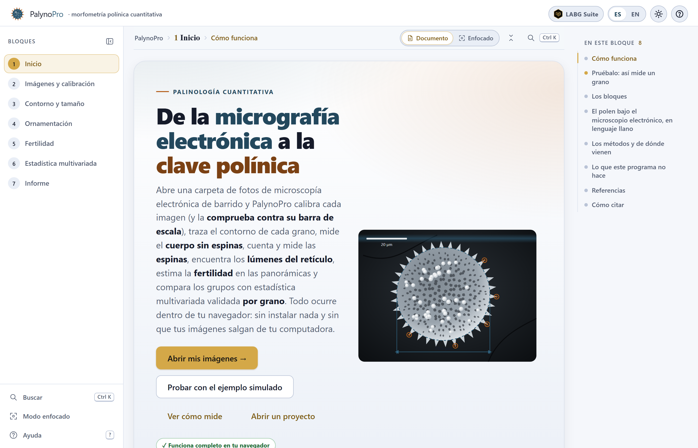
Una buena manera de saber si el programa te sirve es ver qué preguntas contesta, y en qué bloque.
| Pregunta | Bloque |
|---|---|
| ¿Cuántos micrómetros mide un píxel en cada foto, y es coherente con su barra de escala? | 2 |
| ¿Qué fotos son de un solo grano, cuáles son panorámicas y cuáles repiten un grano ya fotografiado? | 2 |
| ¿Cuánto mide el cuerpo de cada grano sin sus espinas? ¿Qué tan alargado y qué tan circular es? | 3 |
| ¿Cuántas espinas tiene en el contorno, qué tan altas y qué tan separadas? | 4 |
| ¿Qué tamaño tienen los lúmenes del retículo, y qué tan áspera o regular es la superficie? | 4 |
| ¿Qué proporción de granos está colapsada en cada grupo, y difiere entre grupos? | 5 |
| ¿En qué variables difieren los grupos, y cuáles se parecen entre sí? | 6 |
| ¿Se distinguen los grupos por el conjunto de sus medidas? ¿Con qué acierto se clasificaría un grano nuevo? | 6 |
| ¿Cómo publico los métodos, los cuadros y las figuras con los parámetros que usé? | 7 |
Todo lo que sigue descansa en seis ideas. Si te quedas con ellas, buena parte de los errores que se cometen al medir polen en fotografías ya no son posibles.
El punto de partida es una carpeta de micrografías, con o sin los archivos que las acompañan. Los demás bloques trabajan sobre lo que ya se leyó: no piden tablas aparte.
| Entra | Formato y dónde |
|---|---|
| Micrografías | TIFF del microscopio (de 8 o 16 bits, con o sin compresión), PNG o JPEG; una carpeta entera o archivos sueltos (Bloque 2) |
| Archivos del microscopio | El .txt que muchos equipos dejan junto a cada imagen, con el mismo nombre: de ahí se leen la magnificación, el voltaje, la distancia de trabajo y la fecha (Bloque 2) |
| Índice | Un .csv opcional con una fila por imagen y columnas como archivo, grupo, grano, magnificacion y excluir; sin índice, el grupo y el grano se leen del nombre del archivo (Bloque 2) |
| Clave de grupos | Un archivo de texto con líneas código = nombre para poner nombre a cada grupo (Bloque 2) |
| Proyectos | Un .json guardado antes por la propia app (Ctrl + S para guardar, Ctrl + O para abrir) |
| Sale | Formato |
|---|---|
| Figuras | Diámetros por grupo, espinas, lúmenes, textura, perfil radial, fertilidad, biplot, varianza explicada, espacio discriminante e importancia de las variables, en SVG o PNG; también por el estudio de figuras de la suite |
| Tablas | El índice de las imágenes y las tablas por grupo, por foto y por variable en CSV, listas para una hoja de cálculo |
| Informe | Material, métodos con los parámetros usados y sus citas, cuadros, figuras, un grano medido por grupo, limitaciones y referencias, en español o en inglés: para imprimir, guardar como PDF o descargar en HTML |
| Métodos | El texto de los métodos, listo para pegarse en un manuscrito |
Sólo un navegador moderno, en una versión de los últimos años. No hace falta instalar nada ni tener internet; el programa entero cabe en una carpeta.
index.html. Es lo más sencillo y funciona igual que todo lo demás: los cálculos y el ejemplo están dentro del programa.Open PalynoPro.bat. Abre un servidor local mínimo en el puerto 9940 y la app en http://localhost:9940. Sólo hace falta para abrirla desde otro equipo o una tableta de la misma red; el archivo server.ps1 explica cómo.Las preferencias —el idioma y el tema claro u oscuro— se guardan en el propio navegador y se recuerdan la siguiente vez. Los datos no: cada vez que abres la app empieza vacía. Para retomar un estudio está el proyecto .json, que guarda los ajustes, la lista de imágenes con sus grupos, su calibración y sus exclusiones, y los resultados de los bloques 3 a 5 (los del Bloque 6 no se guardan: al abrir el proyecto se repiten, iguales, con un clic). Si intentas cerrar la pestaña con datos sin guardar, la app te lo advierte.
A diferencia de otras aplicaciones de la suite, el proyecto de PalynoPro guarda una referencia a cada imagen, no la imagen. Al abrir un proyecto vuelven las tablas y las figuras, pero para ver otra vez las fotos o medirlas de nuevo hay que abrir la misma carpeta en el Bloque 2. Las micrografías pesan mucho, y así el proyecto se queda pequeño y tus imágenes no se duplican.
Todas las aplicaciones de la suite comparten la misma barra, la misma navegación y las mismas herramientas de figuras, así que lo que aprendas aquí te sirve en las demás.
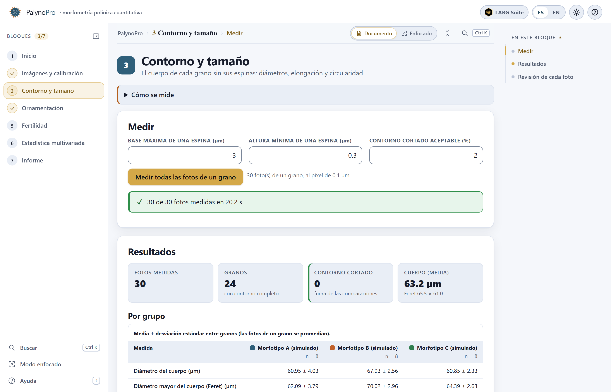
1 2 3 4 5 6 7 8 9 10 11 12 13?).Ctrl + K). Un bloque, una sección, un control o una figura, por su nombre.Al pie de cada bloque dos botones llevan al anterior y al siguiente. Cuando cambias un control y los resultados se recalculan más abajo, aparece un botón flotante que te regresa al control que tocaste, y otro para volver arriba. Los cálculos largos —medir todas las fotos, contar en las panorámicas, comparar los grupos— muestran una ventana de espera con su avance. Casi todo se puede hacer también desde el teclado:
| Tecla | Qué hace |
|---|---|
Alt + ← · Alt + → | El bloque anterior o el siguiente; en el modo enfocado, la sección anterior o la siguiente |
Ctrl + K | Buscar un bloque, una sección, un control o una figura |
Ctrl + S · Ctrl + O | Guardar el proyecto en un .json · abrir uno guardado |
? | Ver la lista de atajos |
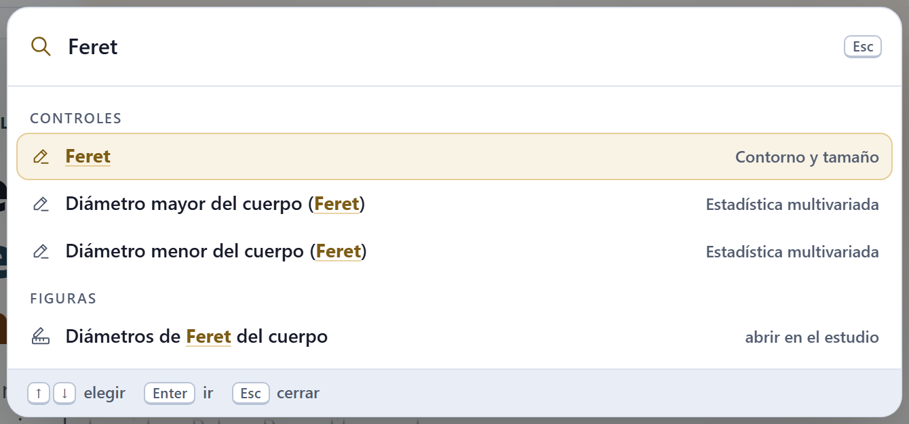
Ctrl + K) con «Feret» escrito, después de medir el ejemplo: encuentra la capa Feret del Bloque 3, las dos variables de Feret del Bloque 6 y la figura Diámetros de Feret del cuerpo, que se abre en el estudio de figuras. Enter lleva al resultado elegido.Los bloques 3, 4 y 5 terminan con una tarjeta de revisión: la foto con lo que la app midió dibujado encima, para que veas en cada grano si el contorno, el cuerpo y las espinas son los que tú habrías marcado. Cada capa se enciende o se apaga con su casilla, y una foto mal medida se excluye con un botón.
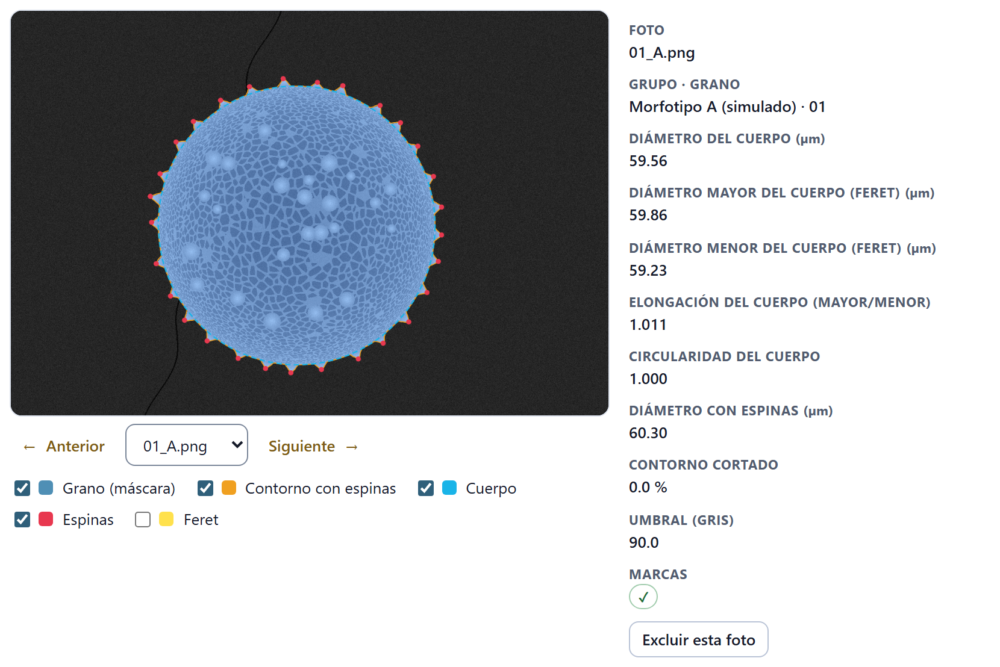
01_A.png del ejemplo simulado: la máscara del grano (azul), el contorno con espinas (naranja), el cuerpo sin espinas (celeste) y las puntas de las espinas (rojo). A la derecha, sus medidas: el cuerpo mide 59.56 µm, con Feret de 59.86 × 59.23 µm.Todas las figuras de la app se pueden abrir en el estudio de figuras, una ventana común a la suite donde se cambian los textos, el tamaño de la letra, la leyenda y los colores sin tocar los datos, y se exporta a los anchos y resoluciones de las revistas. Junto a cada figura, el botón ✎ abre el editor de la figura. Los botones SVG y PNG de cada figura, y el informe, escriben siempre los colores del tema claro, aunque estés trabajando en el oscuro. El capítulo 7 lo explica a fondo.
Para aprender sin imágenes propias, la app trae un ejemplo simulado: tres morfotipos de polen equinado y reticulado que el propio programa dibuja, cada vez que se abre, a partir de parámetros conocidos. No son fotografías de ninguna planta. Se abre con Probar con el ejemplo simulado en la portada o con Ejemplo simulado en el Bloque 2, y la app avisa que es simulado.
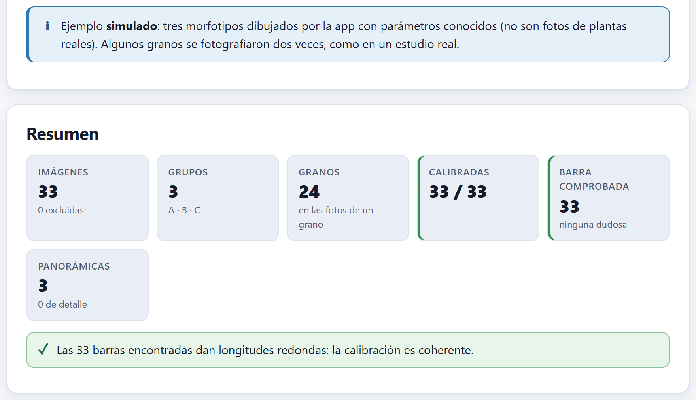
Cada morfotipo tiene ocho granos. Cada grano se dibuja en una foto de 1280 × 960 px a 1000 aumentos (0.1 µm por píxel), con su ruido, su barra de escala y su rótulo, como lo haría un microscopio; los granos 3 y 6 de cada morfotipo se fotografían dos veces, como pasa en un estudio real. Además, cada morfotipo tiene una panorámica a 150 aumentos con catorce granos, algunos de ellos colapsados. En total: 30 fotos de un grano, que son 24 granos, y 3 panorámicas.
| Morfotipo | Cuerpo (semieje, µm) | Menor / mayor | Espinas en el contorno | Altura de espina (µm) | Malla del retículo (µm) | Colapsados en la panorámica |
|---|---|---|---|---|---|---|
| A (simulado) | 31 | 0.97 | 24 | 2.0 | 2.2 | 15 % |
| B (simulado) | 35 | 0.95 | 32 | 2.8 | 2.6 | 35 % |
| C (simulado) | 33 | 0.90 | 22 | 1.7 | 3.4 | 10 % |
Como se sabe con qué se dibujó cada grano, el ejemplo sirve también para ver qué tan bien mide la app. El morfotipo B, por ejemplo, se dibuja con un cuerpo de unos 68 µm de diámetro y la app mide 67.93 µm de media en sus ocho granos. Los nombres de las fotos siguen la forma 01_A.png: el número del grano y, tras el guion bajo, el grupo; las fotos repetidas llevan una letra (03a_A.png) y las panorámicas el número 90 (90_A.png).
Todas las capturas y todas las cifras de este manual salen del ejemplo simulado, con los valores por omisión de cada control salvo que el texto diga qué se cambió. Se dice «el morfotipo B del ejemplo», nunca como si fuera una planta real.
Los bloques están en el orden de un estudio palinológico real. No hace falta pasar por todos: si no tienes panorámicas, el Bloque 5 se salta. La sección Cómo funciona de la portada lo resume en siete pasos.
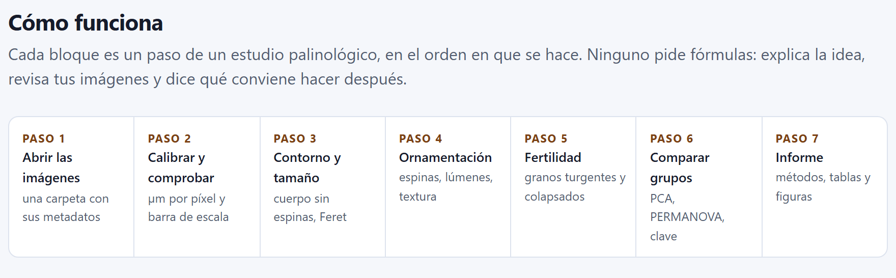
Lo que se lee y se calibra en el Bloque 2 lo usan todos los demás; la medición del Bloque 3 alimenta el 4, el 6 y el 7. Si cambias la calibración, un grupo o una exclusión, los resultados que dependen de ello se borran y el bloque te pide volver a medir; su palomita en la barra se apaga mientras no tenga resultado.
Un programa de medición vale lo que valen sus números. Los motores de PalynoPro se comprobaron de dos maneras independientes, y ninguna de las dos usa las fotos de nadie: granos dibujados por el propio programa, cuya verdad se conoce, y cálculos estadísticos repetidos aparte.
Las pruebas también dicen dónde la app se queda corta, y quedó escrito. La altura de las espinas sale algo menor que la dibujada —cerca de un píxel, un 4 % en la mediana—, porque la punta más fina del cono no alcanza a llenar un píxel; el diámetro del lumen es proporcional a la malla del retículo, pero no igual, porque el lumen es sólo la parte oscura de cada celda; y el umbral de solidez por omisión es conservador: reconoce la mayoría de los granos colapsados sin confundir los sanos. Los capítulos lo dicen donde importa.
Saber dónde termina una herramienta es tan útil como saber qué hace. La portada de la app lo dice en Lo que este programa no hace:
| No hace | Por qué, y qué hacer |
|---|---|
| Reconstruir el grano en 3D | Mide la silueta y la cara visible; las espinas que cuenta son las del contorno, no todas las de la superficie. |
| Adivinar la vista del grano | Polar, ecuatorial u oblicua: los diámetros de Feret equivalen a los ejes P y E sólo en vista ecuatorial. Si necesitas P y E, fotografía vistas orientadas y agrúpalas. |
| Leer el número de la barra | Calcula el tamaño del píxel y comprueba que la barra dé una longitud redonda; no reconoce el texto escrito en el rótulo. |
| Sustituir una prueba de viabilidad | La fertilidad por solidez es una aproximación morfológica; para afirmar viabilidad hace falta tinción o germinación. |
| Medir el grosor de la pared | La exina, el téctum y la nexina se miden en cortes o con microscopía de transmisión. |
| Subir tus imágenes | Todo se calcula en tu computadora; la app sólo guarda referencias a los archivos que abres. |
El primer bloque no pide imágenes: enseña. Dice en siete pasos cómo se recorre un estudio, deja dibujar un grano simulado y ver en vivo qué tan bien lo mide la app, explica en lenguaje llano las ideas que sostienen cada medida y pone a la vista los métodos, sus fuentes, los límites del programa y la manera de citarlo. Es también la puerta: desde aquí se abren tus imágenes, el ejemplo simulado o un proyecto guardado.
Es lo primero que ves al abrir la app, y también lo que aparece cada vez que haces clic en el nombre PalynoPro de la barra superior o en el bloque Inicio de la barra de la izquierda.
Arriba va el rótulo Palinología cuantitativa y el lema de la app, De la micrografía electrónica a la clave polínica, el mismo de la portada de este manual. Debajo, un párrafo resume todo lo que hace el programa, y a la derecha un grano simulado equinado y reticulado muestra lo que la app dibuja sobre cada foto: el contorno del cuerpo (línea discontinua), las puntas de algunas espinas (círculos) y el diámetro que mide (la cota de abajo).
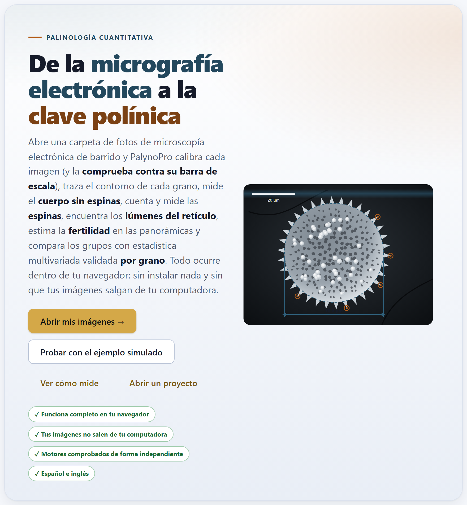
1 2 3 4 5 6 7.json guardado antes por la app (lo mismo que Ctrl + O) y, al abrirlo, lleva al Bloque 2. Si el proyecto ya tenía granos medidos, el aviso recuerda que los resultados del Bloque 6 no se guardan y se repiten, iguales, con Comparar los grupos (capítulo 7).Si ya tienes imágenes tuyas abiertas y pulsas Probar con el ejemplo simulado, la app pregunta antes de reemplazarlas. Lo que no se haya guardado en un proyecto se pierde: guarda primero con Ctrl + S si lo necesitas.
Al bajar por la portada aparecen, en este orden, las secciones que siguen en este capítulo. La lista En este bloque de la derecha las nombra todas, y un clic lleva a cada una.
Cómo funciona pone en una tira los siete pasos de un estudio palinológico, en el orden en que se hacen, cada uno con su rótulo y lo que produce (la figura I.6 de la introducción la muestra completa):
| Paso | En la app | Lo que produce | Bloque |
|---|---|---|---|
| 1 | Abrir las imágenes | una carpeta con sus metadatos | 2 |
| 2 | Calibrar y comprobar | µm por píxel y barra de escala | 2 |
| 3 | Contorno y tamaño | cuerpo sin espinas, Feret | 3 |
| 4 | Ornamentación | espinas, lúmenes, textura | 4 |
| 5 | Fertilidad | granos turgentes y colapsados | 5 |
| 6 | Comparar grupos | PCA, PERMANOVA, clave | 6 |
| 7 | Informe | métodos, tablas y figuras | 7 |
Los dos primeros pasos ocurren en el mismo bloque, y los pasos 3 y 4 salen de una sola pasada de medición (la que se lanza en el Bloque 3). El paso 5 es opcional: sólo tiene sentido si fotografiaste panorámicas, a pocos aumentos, con muchos granos en cada foto.
Antes de confiar en un programa que mide, conviene verlo medir algo cuya respuesta se conoce. El laboratorio dibuja un grano simulado con los valores que elijas y lo mide al instante con los mismos motores que la app usa con tus fotos.
Cinco deslizadores fijan el grano que se dibuja; cada vez que mueves uno, el grano se dibuja otra vez y se vuelve a medir:
| Deslizador | Intervalo | Por omisión | Qué cambia en el dibujo |
|---|---|---|---|
| Diámetro del cuerpo | 30 a 100 µm | 66 µm | El tamaño del cuerpo, sin las espinas |
| Elongación | 1 a 1.4 | 1.06 | La razón entre el eje mayor y el menor; 1 es un círculo |
| Espinas en el contorno | 8 a 50 | 26 | Cuántas espinas asoman en la silueta |
| Altura de espina | 0.6 a 4 µm | 2.2 µm | Lo que sobresale cada espina por encima del cuerpo |
| Malla del retículo | 1.6 a 4.4 µm | 2.6 µm | El tamaño de las celdas de la red de muros sobre la superficie |
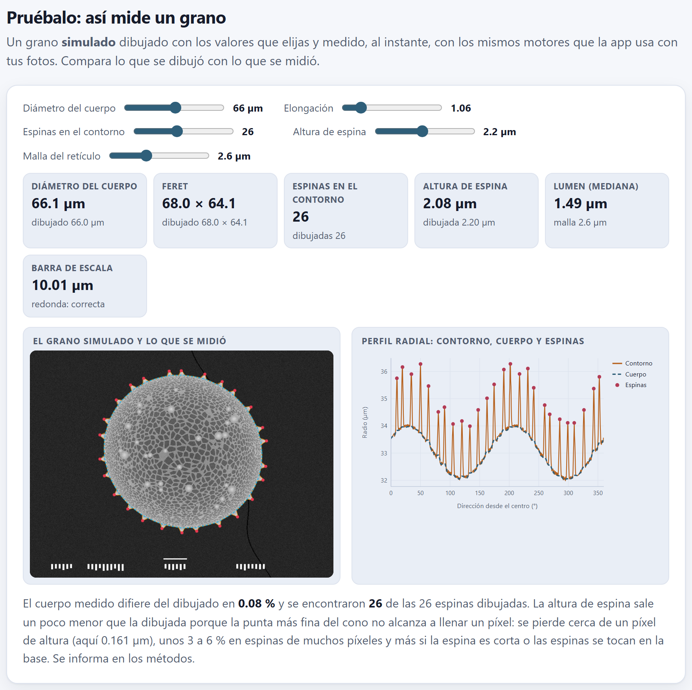
Cada mosaico pone arriba lo que midió la app y abajo lo que se dibujó. Con los valores por omisión la app da:
| Mosaico | Medido | Dibujado | Cómo leerlo |
|---|---|---|---|
| Diámetro del cuerpo | 66.1 µm | 66.0 µm | El diámetro del círculo con la misma área que el cuerpo |
| Feret | 68.0 × 64.1 | 68.0 × 64.1 | El diámetro mayor y el menor del cuerpo, en µm |
| Espinas en el contorno | 26 | 26 | Espinas encontradas en la silueta |
| Altura de espina | 2.08 µm | 2.20 µm | La media de las alturas, de la punta de cada espina a la cuerda que une sus dos pies |
| Lumen (mediana) | 1.49 µm | malla 2.6 µm | El diámetro mediano de las celdas oscuras |
| Barra de escala | 10.01 µm | redonda: correcta | La barra del rótulo, medida con la calibración |
El cuerpo del grano por omisión no es un círculo: con una elongación de 1.06, su diámetro mayor dibujado es de 68.0 µm y el menor de 64.1 µm, y su diámetro del cuerpo —el del círculo de igual área, la media geométrica de los dos ejes— es de 66.0 µm. Eso es lo que la app llama diámetro del cuerpo en todos los bloques: un solo número que resume el tamaño aunque el grano sea algo alargado.
Debajo de las dos figuras, un renglón de estado lo dice con palabras. Con los valores por omisión: «El cuerpo medido difiere del dibujado en 0.08 % y se encontraron 26 de las 26 espinas dibujadas», y sigue con una nota sobre la altura de las espinas: «se pierde cerca de un píxel de altura (aquí 0.161 µm), unos 3 a 6 % en espinas de muchos píxeles y más si la espina es corta o las espinas se tocan en la base. Se informa en los métodos.» (abajo).
El grano simulado y lo que se midió es la micrografía simulada, en grises, con su barra de escala y su rótulo abajo como los pondría un microscopio, y encima lo que encontró la app. Perfil radial: contorno, cuerpo y espinas es la misma información desenrollada: en el eje horizontal, la dirección desde el centro del grano (de 0 a 360°); en el vertical, el radio en micrómetros. La línea naranja es el contorno con espinas, cada pico es una espina (punto rojo) y la línea discontinua azul es el cuerpo que queda al recortar los picos. Las dos ondas anchas del cuerpo son la elongación: en un grano alargado el radio crece y decrece dos veces por vuelta.
El contorno se lee como la distancia del centro al borde en 720 direcciones, una cada medio grado. Una espina es un pico angosto en ese perfil; el cuerpo, en cambio, cambia despacio. La app aplica al perfil una apertura en escala de grises (Serra, 1982) con un elemento del ancho de la base de una espina: todo pico más angosto que esa base desaparece y lo que queda es el cuerpo. Los picos recortados que sobresalen al menos 0.3 µm son las espinas, y la altura de cada una se mide de su punta a la cuerda que une sus dos pies, para que no dependa de la curvatura del cuerpo en ese tramo. En el laboratorio la base se ajusta sola al tamaño del grano dibujado; con tus fotos la fija el control Base máxima de una espina (µm) del Bloque 3.
Mueve los deslizadores para ver dónde la medición se pone a prueba. La figura 1.3 muestra un grano de 40 µm, con elongación 1.30, 40 espinas de 3.5 µm y una malla de 4.0 µm.
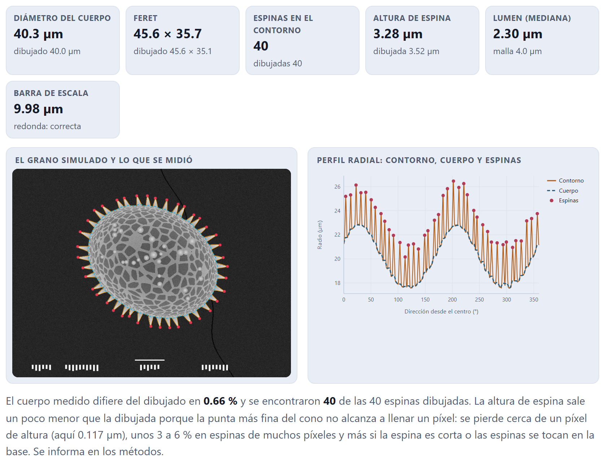
Hay tres cosas que aprender de las dos figuras, y las tres reaparecen con tus fotos:
El grano del laboratorio se dibuja siempre con la misma semilla, en una imagen de 800 × 600 px, y con la magnificación que hace que el grano ocupe algo más de la mitad del campo. Por eso los mismos valores dan siempre los mismos números, y la barra de escala sale redonda (10.01 µm en la figura 1.2, 9.98 µm en la 1.3).
Los bloques pone una tarjeta por cada uno de los bloques 2 a 7, con su número, un pequeño dibujo, su etiqueta, su nombre y lo que hace. Un clic en la tarjeta abre el bloque, igual que su botón en la barra de la izquierda. Los bloques que necesitan imágenes o resultados previos lo dicen al abrirlos y llevan al bloque que falta.
| Bloque | Etiqueta | Lo que hace, según su tarjeta |
|---|---|---|
| 2 | Datos | Lee TIFF, PNG o JPEG, los archivos de texto del microscopio y un índice opcional; calibra cada foto y la comprueba contra su barra de escala |
| 3 | Morfometría | El contorno de cada grano, el cuerpo sin espinas, sus diámetros de Feret, elongación y circularidad, con revisión visual de cada medida |
| 4 | Ornamentación | Espinas en el contorno (número, altura, espaciado y densidad), lúmenes del retículo y textura de la superficie |
| 5 | Viabilidad | En las panorámicas, cada grano con su silueta y su solidez; la proporción de colapsados por grupo, con su intervalo |
| 6 | Comparación | Tabla por grupo con letras de Tukey, componentes principales, PERMANOVA, análisis discriminante y bosque aleatorio validados por grano |
| 7 | Publicación | Los métodos redactados con sus referencias, un informe para imprimir o guardar en PDF y todas las tablas y figuras |
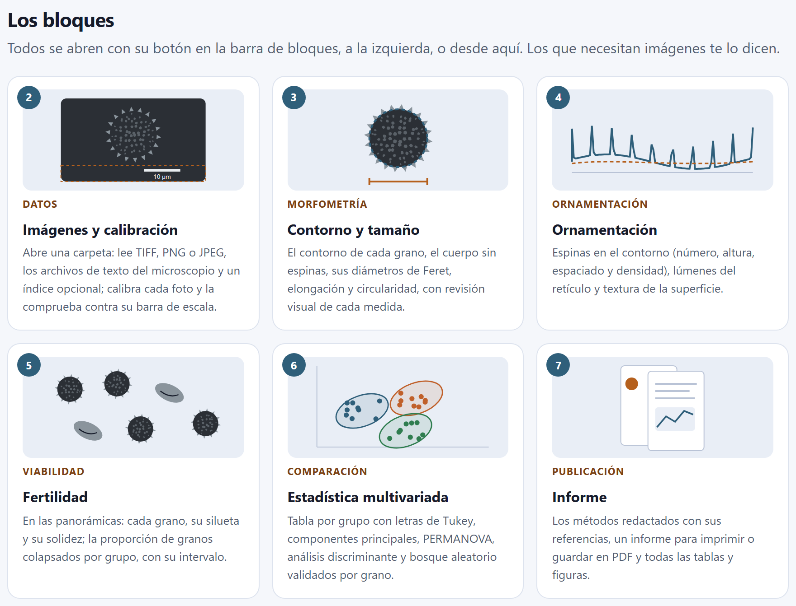
El polen bajo el microscopio electrónico, en lenguaje llano reúne, en seis temas desplegables, las ideas que sostienen las medidas. Cada tema lleva a la derecha el bloque donde se usa; el primero viene abierto y los demás se abren con un clic en su título.
| Tema | Se usa en | La idea, en una línea |
|---|---|---|
| Cómo se ve un grano en el microscopio electrónico | Bloques 2–4 | La imagen de electrones secundarios muestra la superficie: el borde y las espinas brillan sobre el fondo oscuro, y por eso el grano se separa del fondo con un umbral de gris. La pared no se ve en grosor, y sólo se ve la mitad del grano que mira al detector. |
| La calibración: cuántos micrómetros mide un píxel | Bloque 2 | El campo mide el ancho de referencia entre la magnificación, y el píxel, ese campo entre el ancho en píxeles de la imagen guardada; la barra de escala lo comprueba (capítulo 2). |
| Cuerpo y ornamentación | Bloques 3–4 | El tamaño se informa del cuerpo; el perfil radial en 720 direcciones sin los picos angostos es el cuerpo, y los picos son las espinas (equinas). Feret equivale a los ejes polar y ecuatorial sólo en vista ecuatorial. |
| El retículo: muros y lúmenes | Bloque 4 | Los muros brillantes encierran lúmenes oscuros; un lumen es un píxel más oscuro que su vecindario. La textura resume el contraste y la regularidad de la superficie. |
| El grano es la unidad, no la foto | Bloque 6 | Las fotos de un mismo grano se promedian y la validación deja fuera el grano completo. |
| Fertilidad a partir de la forma | Bloque 5 | Un grano vacío se pliega y pierde solidez (área entre área de la envolvente convexa); es una aproximación morfológica, no una prueba de viabilidad. |
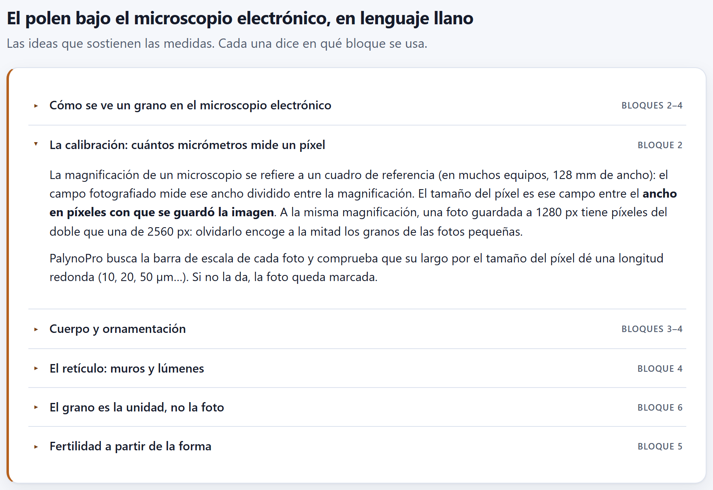
La introducción (I.3) convierte estas ideas en seis reglas, y cada capítulo las aplica donde toca. Si sólo vas a leer un tema antes de abrir tus fotos, lee el de la calibración: es el error que más encoge o agranda granos sin que nadie lo note.
Catorce tarjetas nombran los métodos que usa el programa, cada una con su familia y la obra que lo define. Todos están escritos desde cero para la app; la cita dice de dónde viene la idea, no de dónde viene el código.
| Familia | Método y fuente | Bloque |
|---|---|---|
| Calibración | Tamaño del píxel por magnificación y ancho; barra de escala comprobada | 2 |
| Imagen | Umbral de Otsu (1979), para separar el grano del fondo | 3 5 |
| Imagen | Remuestreo por áreas a un píxel común (Wolberg, 1990) | 2 3 |
| Forma | Apertura en escala de grises del perfil radial (Serra, 1982): el cuerpo sin las espinas | 3 |
| Forma | Anchuras de Feret por calibradores rotantes (Shamos, 1978) | 3 |
| Forma | Envolvente convexa (Andrew, 1979), para la solidez | 5 |
| Superficie | Lúmenes por umbral local (Niblack, 1986) | 4 |
| Superficie | Matriz de coocurrencia de grises (Haralick et al., 1973) | 4 |
| Estadística | ANOVA, Tukey (1949), Kruskal y Wallis (1952), Holm (1979) | 6 |
| Multivariada | Componentes principales (Pearson, 1901; Hotelling, 1933) | 6 |
| Multivariada | PERMANOVA (Anderson, 2001) | 6 |
| Clasificación | Análisis discriminante lineal (Fisher, 1936) | 6 |
| Clasificación | Bosque aleatorio (Breiman, 2001) | 6 |
| Viabilidad | Proporción con intervalo de Wilson (1927) | 5 |
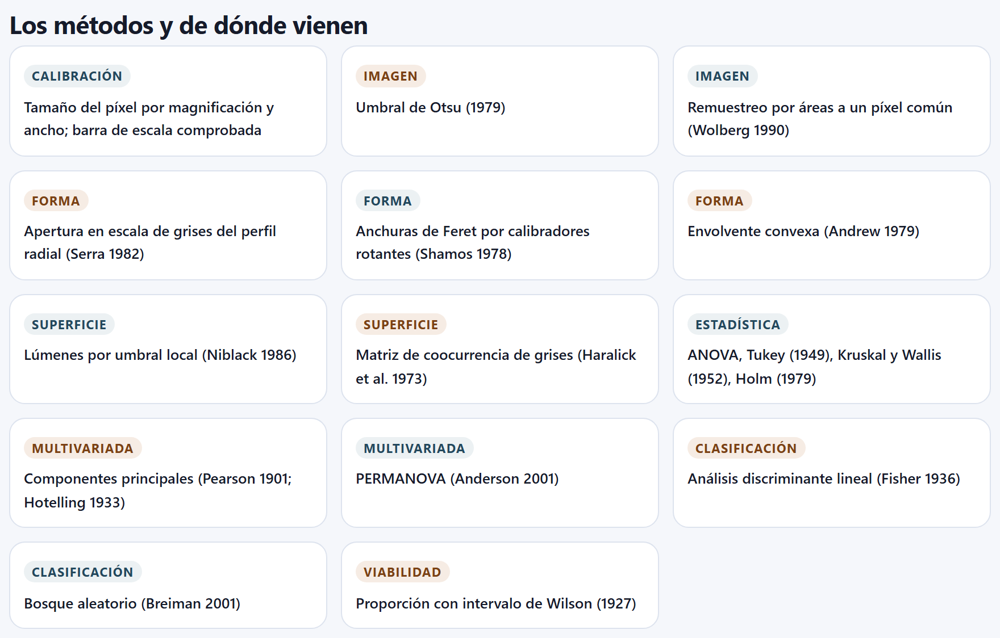
Cada capítulo explica el método en el lugar donde se usa, y el informe del Bloque 7 escribe los que intervinieron en tu análisis con sus parámetros y sus citas.
Seis tarjetas dicen dónde termina la herramienta. La introducción (I.10) ya las reúne en una tabla; aquí va lo que cada límite significa al planear un estudio.
nota del índice.Referencias lista, en orden alfabético, las 22 obras que citan los métodos y los textos de la app: las de los métodos de la sección 1.6 y, además, Borgefors (1986), por la transformada de distancia con que el Bloque 4 cuenta la densidad de lúmenes lejos del borde del grano; Cohen (1960), por el coeficiente κ con que el Bloque 6 resume el acierto de los clasificadores; Erdtman (1952), Halbritter et al. (2018) y Punt et al. (2007), por la terminología palinológica; y McArdle y Anderson (2001), por la PERMANOVA. El apéndice F las reproduce completas, agrupadas por tema.
Al final de la portada, Cómo citar da la cita del programa lista para pegarse, y el botón Copiar la cita la copia al portapapeles (la app confirma con «Cita copiada»). En la interfaz inglesa la cita sale en inglés. Debajo, al pie de la portada, el enlace Manual de usuario (en español) abre este manual (en la interfaz inglesa, User’s manual abre la edición inglesa).
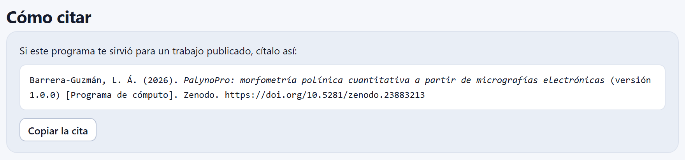
El DOI de la cita es el de concepto de Zenodo, que siempre lleva a la versión más reciente. Cita la versión con la que trabajaste —la que dice la cita de tu copia—, porque los resultados pueden cambiar entre versiones. Junto al programa, cita los métodos que usaste: el texto de métodos del Bloque 7 ya trae sus referencias.
| Si es la primera vez que usas la app… | abre Probar con el ejemplo simulado y recorre los bloques con este manual: todas sus cifras salen de ese ejemplo. |
| Si tu polen tiene espinas muy finas o muy altas… | reprodúcelo en el laboratorio con valores parecidos y mira cuánto se aleja la altura medida de la dibujada. |
| Si vas a informar la altura de las espinas… | dila como medida comparativa: sale cerca de un píxel por debajo de la real (6 a 7 % en los granos de este capítulo); los métodos del Bloque 7 ya lo dicen. |
| Si vas a informar el retículo… | reporta el diámetro del lumen como lumen, no como malla. |
| Si ya tienes un proyecto guardado… | Abrir un proyecto y luego, en el Bloque 2, abre otra vez la carpeta de sus fotos: si son las mismas, los resultados se conservan. |
Son guías para interpretar, no leyes: lo que sabes de la planta, de la preparación y de cómo se fotografió siempre manda.
El laboratorio no cambia al mover un deslizador. El grano se vuelve a dibujar y medir un instante después de soltarlo; si mueves varios a la vez, la app termina la medición en curso y hace una más con los valores finales. «Abrir un proyecto» dice que el archivo no es un proyecto de PalynoPro. El .json es de otra aplicación de la suite o se editó a mano. El proyecto se abrió pero las fotos no se ven. Es lo esperado: el proyecto no guarda las imágenes; abre su carpeta en el Bloque 2 (capítulo 2).
Todo lo que la app mide después depende de dos cosas que se deciden aquí: cuántos micrómetros mide un píxel en cada foto, y a qué grupo y a qué grano pertenece cada foto. El bloque lee la carpeta con lo que la acompañe, calibra cada imagen, la comprueba contra su propia barra de escala, reconoce qué fotos son de un grano y cuáles son panorámicas, y te deja corregir lo que haga falta antes de medir.
El bloque se presenta con su subtítulo, Abre una carpeta, revisa los grupos y comprueba la calibración de cada foto., un desplegable que lo explica en dos párrafos y una sola tarjeta: la zona donde se sueltan las imágenes.
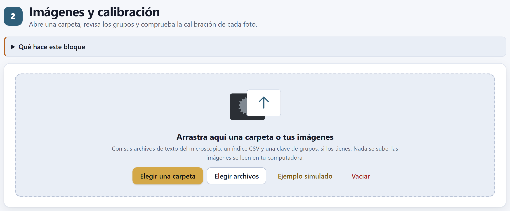
1 2 3 4 5A = Morfotipo A) y la comprobación con la barra..txt, un índice .csv o una clave.También puedes arrastrar la carpeta, o un puñado de archivos, desde el explorador de tu sistema hasta la zona punteada de Arrastra aquí una carpeta o tus imágenes. Nada se sube a ningún lado: los archivos se leen en tu computadora, y cada imagen se lee completa una sola vez —para saber su tamaño, buscar su barra de escala y hacer una miniatura— y otra vez sólo cuando se mide.
No hace falta separar nada: la app clasifica cada archivo por su extensión y por su nombre.
| Archivo | Cómo lo reconoce y qué toma de él |
|---|---|
| Imágenes | TIFF (de 8 o 16 bits; sin compresión o con LZW, PackBits o Deflate; en grises, con paleta o en color), PNG, JPEG, BMP, WebP y GIF. Todo se convierte a grises: un nivel de gris por píxel. El TIFF lo lee un lector propio, porque el navegador no sabe mostrarlo. |
El .txt del microscopio | Un .txt con el mismo nombre que una imagen (05_B.txt junto a 05_B.tif). De él, o del texto que algunos equipos guardan dentro del propio TIFF, se leen la magnificación, el tamaño del píxel si viene escrito, el voltaje, la distancia de trabajo y la fecha. |
| El índice | Un .csv (o un .txt que no corresponda a ninguna imagen) con encabezado y una fila por imagen. Lo único obligatorio es la columna del archivo. Sólo se usa el primer índice que aparezca. |
| La clave de grupos | Un archivo de texto, que no sea índice, con líneas código = nombre o código: nombre. |
Las columnas se reconocen por su nombre, en español o en inglés, sin importar mayúsculas ni acentos, y el separador puede ser coma, punto y coma o tabulador. Cada fila se une a su imagen por el nombre del archivo, con o sin extensión.
| Columna | También se acepta | Qué hace |
|---|---|---|
archivo | file, imagen, foto, id… | El nombre de la imagen (obligatoria) |
grupo | group, morfotipo, especie, taxon, codigo… | El grupo; manda sobre lo que se lea del nombre del archivo |
nombre | name, nombre_grupo… | El nombre largo del grupo de esa fila |
grano | grain, unidad, ejemplar… | El grano; dos fotos con el mismo grupo y grano son el mismo grano |
magnificacion | magnification, mag, aumentos… | La magnificación, si el .txt del microscopio no la dio |
um_por_px | um_per_px, micras_por_pixel… | El tamaño del píxel, si ya lo conoces |
excluir | exclude, descartar | Excluye la foto si dice 1, si, yes, true o x |
nota | note, comentario… | Un comentario, que el visor muestra |
nivel | tipo, tier, kind | El tipo de foto: lo que contenga «pano» u «over» es panorámica; «det», detalle; lo demás, un grano |
Sirve para dar a cada código de grupo un nombre legible, que luego aparece en tablas, figuras e informe. Por ejemplo, un archivo clave.txt con estas dos líneas:
A = Morfotipo A · G1: Morfotipo unoEl código es una sola palabra de letras y dígitos, como los que se leen de los nombres de archivo: A, G1, P12 o 7 sirven, y también uno de hasta ocho caracteres con guion o guion bajo en medio (norte-2). Lo que va después del = o de los dos puntos es el nombre. Si prefieres no hacer un archivo aparte, escribe los nombres en la tarjeta Grupos (2.4) o en la columna nombre del índice.
Al terminar, un mensaje bajo los botones dice lo que se leyó: cuántas imágenes, cuántos archivos del microscopio, el nombre del índice y cuántos nombres de grupo trajo la clave; y, si alguna imagen no se pudo leer, su nombre y la razón. Con el ejemplo, el mensaje avisa que es simulado: «tres morfotipos dibujados por la app con parámetros conocidos (no son fotos de plantas reales). Algunos granos se fotografiaron dos veces, como en un estudio real.» Debajo aparecen las cinco tarjetas que siguen.
Si ya hay imágenes abiertas y eliges otra carpeta, las nuevas se agregan a las que había; las que tengan un nombre que ya está no se repiten. Si abriste antes un proyecto, abrir su carpeta vuelve a unir cada foto con su fila guardada: el mensaje lo dice («…, 33 del proyecto vueltas a abrir», por ejemplo) y los resultados del proyecto se conservan. Si en cambio la carpeta trae imágenes que no estaban y ya había resultados, la app pregunta antes: «Hay N imagen(es) que no estaban en el conjunto. Añadirlas borra los resultados ya calculados (contorno, ornamentación, fertilidad y estadística), que habrá que calcular otra vez. ¿Seguir?». Si sigues, el mensaje de lectura lo confirma con «El conjunto cambió: los resultados anteriores se borraron.». Para empezar de cero, Vaciar.
Resumen es la tarjeta que conviene mirar primero: seis mosaicos y, debajo, los avisos que la app haya encontrado. La figura I.5 de la introducción lo muestra con el ejemplo recién abierto.
| Mosaico | Ejemplo | Qué cuenta |
|---|---|---|
| Imágenes | 33 | Todas las imágenes abiertas; debajo, cuántas están excluidas (0) |
| Grupos | 3 | Los códigos de grupo distintos, con los primeros seis debajo (A · B · C) |
| Granos | 24 | Los granos distintos (las combinaciones de grupo y grano) en las fotos de un grano no excluidas: las fotos repetidas de un grano cuentan una vez, y las panorámicas no cuentan |
| Calibradas | 33 / 33 | Las que tienen tamaño de píxel; el borde verde dice que son todas |
| Barra comprobada | 33 | Las barras que dan una longitud redonda; debajo, cuántas son dudosas (ninguna dudosa) |
| Panorámicas | 3 | Las fotos de tipo panorámica; debajo, las de detalle (0) |
El ejemplo tiene 30 fotos de un grano, pero 24 granos: ocho por morfotipo, de los que el 3 y el 6 se fotografiaron dos veces. El mosaico Granos cuenta los granos, no las fotos, y es el mismo número que medirá el Bloque 3. Si aquí ves más granos de los que fotografiaste, alguna foto repetida no quedó con el mismo grupo y grano que su gemela (2.5).
Debajo de los mosaicos la app escribe un aviso por cada cosa que encontró. Con el ejemplo sólo aparece el verde: «Las 33 barras encontradas dan longitudes redondas: la calibración es coherente.»
| Aviso (resumido) | Qué significa y qué hacer |
|---|---|
| … imagen(es) no tienen magnificación ni tamaño de píxel | Ni el .txt, ni el TIFF, ni el índice dieron con qué calibrarlas. Escribe su magnificación en la tabla (2.5) o mide su barra a mano (2.6). Mientras tanto quedan fuera de las mediciones. |
| … barra(s) no dan una longitud redonda con la calibración | Revisa esas fotos con el filtro Barra dudosa. La causa más común es una magnificación mal escrita; la otra, un equipo con otro ancho de referencia (2.3). |
| Las … barras encontradas dan longitudes redondas | Todo está en orden (verde). |
| En … imagen(es), el tamaño del píxel del índice o del archivo no coincidía con la barra de escala y la magnificación sí: se usó la magnificación | Un tamaño de píxel copiado mal en un índice, o escrito mal por el equipo. La app lo sustituyó por el de la magnificación, y el visor dice cuál era el original. Corrige ese índice. |
| … foto(s) sin barra | Se calibran por su magnificación, sin poder comprobarse (azul, informativo). |
| No se reconoció ningún grupo en los nombres | Ajusta el patrón del nombre (2.3) o carga un índice con la columna grupo. |
En la tabla de imágenes, cambia la magnificación de 02_A.png de 1000 a 1200, como si se hubiera tecleado mal. La app recalcula el píxel de esa foto: 128 000 µm ÷ (1200 × 1280 px) = 0.08333 µm. Su barra mide 100 px, que ahora darían 8.333 µm: no es una longitud redonda —la más cercana, 10 µm, queda a casi 17 %—, así que la foto se marca. El mosaico pasa a 32 con 1 con barra dudosa, con borde ámbar, y aparece el aviso (figura 2.2). Con 1200× el grano de esa foto habría medido un sexto menos de lo que mide.
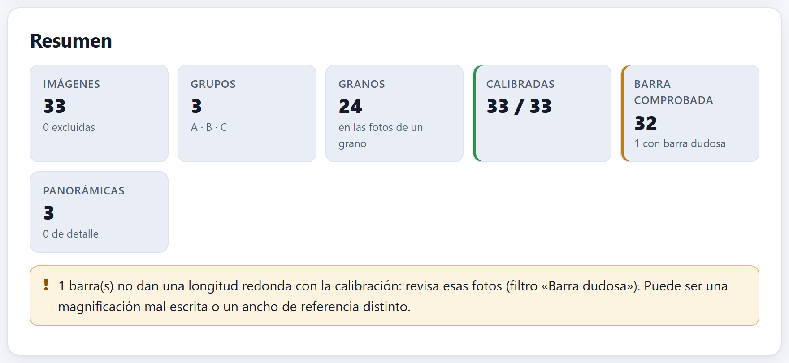
02_A.png.Una barra dudosa no saca a la foto del análisis: la app la sigue midiendo con la calibración que tiene, porque no puede saber cuál de las dos —la magnificación o la barra— está mal. Eso lo decides tú. Al volver a escribir 1000, el aviso desaparece.
Tres ajustes que valen para todas las imágenes, y que no se aplican hasta que pulsas Aplicar.
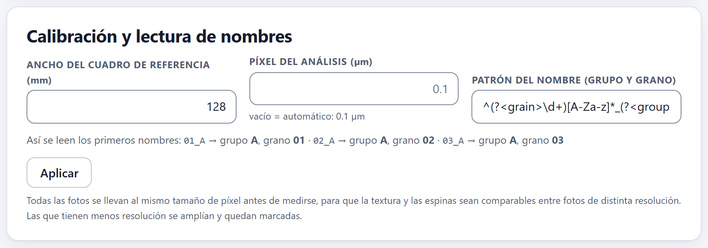
La magnificación que escribe un microscopio electrónico se refiere a un cuadro de referencia de ancho fijo: el campo fotografiado mide ese ancho dividido entre la magnificación. El tamaño del píxel es ese campo dividido entre el ancho en píxeles de la imagen tal como se guardó:
El valor por omisión, 128 mm, es el de muchos equipos (los que dejan archivos de texto con líneas $CM_MAG). En el ejemplo: 128 × 1000 ÷ (1000 × 1280) = 0.1 µm por píxel en las fotos de un grano, y 128 × 1000 ÷ (150 × 1280) = 0.66667 µm en las panorámicas. Si tu equipo usa otro cuadro, el aviso de barras dudosas saldrá en casi todas las fotos a la vez y en la misma proporción: es la señal de que hay que cambiar este número. Un valor vacío o no positivo vuelve a 128.
La app toma el tamaño del píxel de la fuente más fuerte que tenga cada foto, en este orden: el que mediste a mano con la barra (2.6); el del índice (um_por_px); el que el equipo escribió en su .txt o en el TIFF; el que sale de la magnificación y el ancho de referencia; y, si no hay nada, la foto queda sin calibrar. La columna Fuente de la tabla dice cuál se usó. Una sola excepción: si el tamaño del índice o del equipo contradice a la barra y el de la magnificación la cumple, gana la magnificación, y el resumen lo avisa.
Al leer cada imagen, la app busca su barra en la quinta parte de abajo: una franja de píxeles casi blancos, de al menos 2 % y a lo más 45 % del ancho de la foto, que se repite con el mismo inicio y el mismo largo (±2 px) en al menos tres renglones seguidos, y que está casi toda llena. Si hay varias, toma la más larga. Su largo en píxeles por el tamaño del píxel debe dar una longitud redonda: 1, 2 o 5 por una potencia de diez (1, 2, 5, 10, 20, 50, 100 µm…), con una tolerancia de 4 %.
| Fotos | Magnificación | µm por píxel | Barra | Longitud | Veredicto |
|---|---|---|---|---|---|
| 30 de un grano | 1000× | 0.1 | 100 px | 10 µm | redonda: 10 µm |
| 3 panorámicas | 150× | 0.66667 | 152 px | 101.333 µm | redonda: 100 µm (1.3 % de diferencia) |
02_A.png con 1200× (ejemplo de 2.2) | 1200× | 0.08333 | 100 px | 8.333 µm | se esperaba 10 µm |
La barra también dice dónde empieza el rótulo del microscopio —la franja de abajo con la barra, el voltaje y los demás datos—: la app corta la foto unos renglones arriba de la barra, para que ni la barra ni las letras se tomen por parte del grano. Si no hay barra, corta en una franja oscura al pie, si la hay. El visor (2.6) dibuja ese corte.
Antes de medir, todas las fotos de un grano se llevan al mismo tamaño de píxel, remuestreando por áreas (Wolberg, 1990). Así la textura, los lúmenes y las espinas se miden con la misma finura en fotos tomadas a distinta resolución. Vacío —lo normal— quiere decir automático: el percentil 90 del tamaño de píxel de las fotos de un grano incluidas, redondeado a dos cifras, de modo que casi ninguna tenga que ampliarse. La ayuda de abajo dice cuál resultó: vacío = automático: 0.1 µm en el ejemplo, donde todas las fotos de un grano tienen el mismo píxel. Las fotos que tengan menos resolución que el píxel del análisis se amplían, y el Bloque 3 las marca. Las panorámicas no se llevan a este píxel: el Bloque 5 las cuenta con su propio píxel (reducidas, si pasan de 1600 px de ancho).
Escribe un valor sólo si quieres fijarlo —por ejemplo, para comparar dos estudios con el mismo píxel—. Un píxel más fino que el de tus fotos no agrega detalle: sólo amplía.
Si no hay índice, el grupo y el grano de cada foto se leen de su nombre (sin la extensión) con una expresión regular que tiene dos partes con nombre, (?<grain>…) para el grano y (?<group>…) para el grupo. La que trae la app es:
^(?<grain>\d+)[A-Za-z]*_(?<group>[A-Za-z]+\d*)Se lee así: al principio, uno o más dígitos (el grano); luego, letras opcionales (la que distingue una segunda foto del mismo grano); un guion bajo; y letras seguidas de dígitos opcionales (el grupo). Con ella, 01_A es el grano 01 del grupo A, y 03a_A es otra foto del mismo grano 03. La línea Así se leen los primeros nombres lo comprueba en vivo con las tres primeras imágenes mientras escribes: en el ejemplo, «01_A → grupo A, grano 01 · 02_A → grupo A, grano 02 · 03_A → grupo A, grano 03».
| Tus archivos se llaman | Patrón |
|---|---|
A_01.tif, A_01b.tif | ^(?<group>[A-Za-z]+\d*)_(?<grain>\d+) |
P3-g12-1.tif | ^(?<group>P\d+)-g(?<grain>\d+) |
norte_07.png | ^(?<group>[a-z]+)_(?<grain>\d+) |
Al pulsar Aplicar, la app comprueba que el patrón sea una expresión válida (si no, lo dice y no cambia nada); si el patrón cambió, vuelve a leer con él el grupo y el grano de las fotos; recalcula la calibración de todas con el ancho de referencia, vuelve a clasificar los tipos de foto y confirma con «Calibración aplicada». Todo lo que se haya medido en los bloques 3 a 6 se borra, porque dependía de lo anterior.
El patrón sólo adivina. Un grupo o un grano que vino del índice, o que escribiste en la tabla de imágenes, se respeta aunque cambies el patrón, y la app lo dice: «El patrón nuevo no cambió el grupo ni el grano de N imagen(es): venían del índice o se escribieron en la tabla, y esos mandan. Si quieres cambiarlos, edítalos en la tabla.». Lo mismo con el tamaño del píxel: si al recalcular el del índice o del equipo sigue contradiciendo a la barra, la app sigue usando el de la magnificación, como al abrir la carpeta.
Una fila por grupo, con su código y su color —el mismo que tendrá en todas las figuras—, un campo Nombre y dos conteos sin las fotos excluidas: Imágenes (todas) y Granos (en las fotos de un grano).
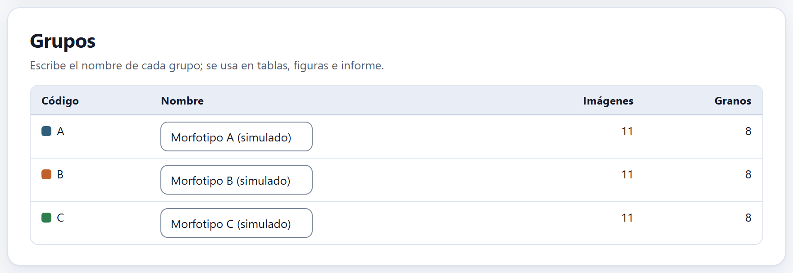
El nombre se usa en las tablas, las figuras y el informe en lugar del código; si lo dejas vacío, se usa el código. Viene de la clave de grupos, de la columna nombre del índice o, en el ejemplo, de la propia app («Morfotipo A (simulado)»). Cambiarlo no borra ningún resultado: sólo cambia cómo se rotula.
El código, en cambio, se cambia en la tabla de imágenes, foto por foto (2.5). Un grupo existe mientras alguna foto lo tenga.
Una fila por imagen, con lo que la app leyó y calculó de ella, y los campos que puedes corregir. Arriba, siete filtros eligen qué filas se ven: Todas, Un grano, Panorámicas, Detalle, Barra dudosa, Sin calibrar y Excluidas.
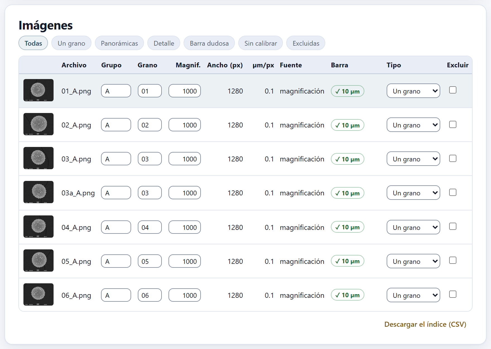
| Columna | Qué muestra |
|---|---|
| (miniatura) | Un clic la abre en el visor (2.6) |
| Archivo | El nombre del archivo |
| Grupo · Grano | Editables: corrige aquí lo que el patrón o el índice leyeron mal. Dos fotos con el mismo grupo y grano se promedian como un solo grano |
| Magnif. | Editable: la magnificación. Al cambiarla se recalcula el píxel y se comprueba la barra |
| Ancho (px) | El ancho de la imagen guardada, el que entra en la fórmula |
| µm/px | El tamaño del píxel, con cinco cifras |
| Fuente | De dónde salió el píxel: a mano, índice, del equipo, magnificación o sin calibrar |
| Barra | ✓ y la longitud si es redonda (verde); ! y la longitud si es dudosa (ámbar); sin barra; o sin calibrar. Al pasar el puntero se ve su largo en píxeles |
| Tipo | Un grano, Panorámica o Detalle, con un menú para cambiarlo |
| Excluir | Deja la foto fuera de todo sin borrarla; la fila se ve atenuada |
La app propone el tipo de cada foto comparando su magnificación con la mediana de todas: si es de 0.6 veces la mediana o menos, es panorámica (muchos granos, para el Bloque 5); si es de 1.8 veces o más, es de detalle (un acercamiento a la superficie); lo demás es un grano (para los bloques 3 y 4). En el ejemplo la mediana es 1000×, y las tres fotos a 150× son panorámicas. El Bloque 3 mide sólo las fotos de un grano y el Bloque 5 cuenta sólo las panorámicas; las de detalle se conservan y se ven en el visor, pero no se miden. Si la propuesta no es la correcta, cambia el tipo con el menú: tu elección se respeta aunque después pulses Aplicar.
Cualquier cambio en el grupo, el grano, la magnificación, el tipo o la exclusión de una foto borra lo que se haya medido en los bloques 3 a 6, porque ya no corresponde; su palomita en la barra se apaga hasta que vuelvas a medir. Por eso conviene dejar este bloque en orden antes de pasar al siguiente. Excluye una foto cuando no deba contar —desenfocada, con el grano cortado por el borde, con dos granos encimados—; una foto sin calibrar queda fuera por sí sola hasta que tenga tamaño de píxel.
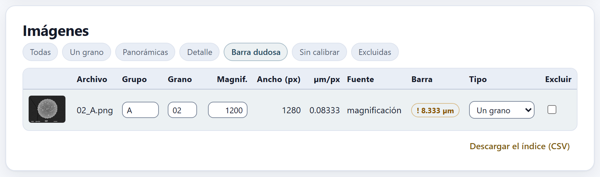
02_A.png, con 1200×, 0.08333 µm por píxel y la barra marcada ! 8.333 µm.Guarda la tabla completa como palynopro_indice.csv, con las columnas archivo, grupo, nombre, grano, magnificacion, ancho_px, um_por_px, fuente, barra_px, barra_um, nivel, excluir y nota. Es un buen registro de cómo se calibró cada foto, para el material suplementario de un artículo, y también un índice que la app vuelve a leer: corrígelo en una hoja de cálculo, ponlo en la carpeta de las fotos y ábrela otra vez. Las columnas fuente y nivel se escriben con las palabras de la interfaz (con la interfaz en español, magnificación, un grano, panorámica, detalle), y al releer el índice la app entiende el nivel en cualquiera de los dos idiomas.
El índice descargado trae um_por_px lleno, así que al releerlo la fuente de todas las fotos pasa a ser índice. Si después corriges una magnificación, borra antes ese valor en la hoja de cálculo; de otro modo el índice seguirá mandando.
El visor muestra la foto elegida, en grises y a lo más 1200 px de ancho, con dos marcas encima, y a su derecha los datos que la app sabe de ella. Al abrir el bloque muestra la primera imagen.
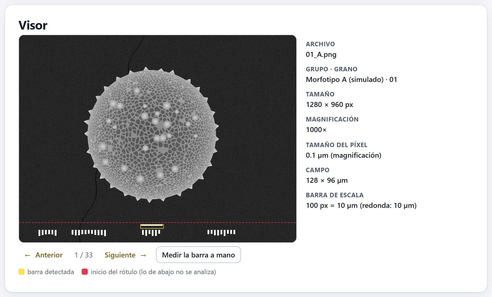
1 2 3 4 5 6 701_A.png, el primer grano simulado del morfotipo A.Para 01_A.png los datos son: 1280 × 960 px, 1000×, 0.1 µm (magnificación), un campo de 128 × 96 µm y una barra de «100 px = 10 µm (redonda: 10 µm)». Si el archivo del microscopio los trae, se agregan el Voltaje, la Distancia de trabajo y la Fecha, y la Nota del índice. Cuando la app sustituyó el tamaño del píxel de un índice o del equipo (2.2), aquí dice cuál era y por qué no se usó.
Mira las dos marcas en cada foto que te parezca rara. El rectángulo amarillo debe rodear la barra de escala, no otra cosa blanca del rótulo; la línea roja debe quedar por encima de todo el rótulo y por debajo del grano. Lo que queda abajo de la línea no se analiza nunca.
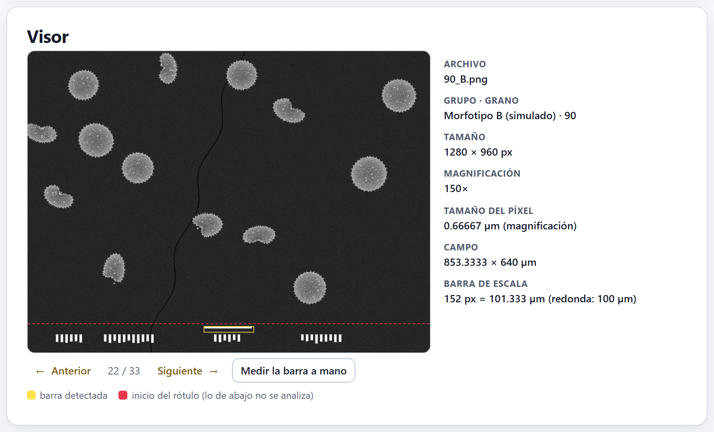
90_B.png) a 150×: 0.66667 µm por píxel, un campo de 853.3333 × 640 µm y una barra de «152 px = 101.333 µm (redonda: 100 µm)». Los granos plegados son los colapsados que contará el Bloque 5.Para una foto sin magnificación, con una barra que la app no encuentra o con una barra que sabes correcta aunque la calibración diga otra cosa:
El tamaño del píxel queda en longitud ÷ píxeles, con fuente a mano, que manda sobre todas las demás; la app confirma con «Calibrada a mano:» y el valor, y borra lo que se haya medido después. Haz los clics con cuidado y en la foto más grande que puedas: un error de dos píxeles en una barra de 100 px cambia todos los tamaños de esa foto en 2 %.
Una foto que vino de un proyecto pero cuya carpeta no se ha vuelto a abrir no se puede ver: el visor dice «La imagen no está abierta en esta sesión: abre otra vez su carpeta.»
| Si Calibradas no dice todas… | escribe la magnificación de las que faltan o mide su barra a mano (filtro Sin calibrar). |
| Si una o pocas barras son dudosas… | revisa su magnificación: casi siempre es un dígito mal escrito. |
| Si casi todas las barras son dudosas, en la misma proporción… | tu equipo usa otro ancho de referencia: cámbialo y pulsa Aplicar. |
| Si la app avisa que sustituyó el tamaño del píxel de un índice… | corrige el índice; el valor que tenía está en el visor. |
| Si los grupos o los granos no se leyeron bien… | ajusta el patrón, carga un índice o corrígelos en la tabla. |
| Si una foto es una panorámica o un detalle y quedó como «Un grano»… | cámbiale el tipo: el Bloque 3 la mediría como si fuera un grano. |
| Si todo está en verde… | pasa al Bloque 3. |
Son guías para interpretar, no leyes: lo que sabes de la planta, de la preparación y de cómo se fotografió siempre manda.
Una imagen no se pudo leer. El mensaje dice cuál y por qué: «TIFF con compresión N: no se admite», «TIFF sin tamaño», «no es un TIFF» o «el navegador no pudo leer esta imagen (archivo dañado o formato no admitido)». Lo más común es un TIFF con una compresión poco común. Ábrela en un programa de imágenes y guárdala como TIFF sin compresión o como PNG. Dos granos distintos quedaron como uno. Tienen el mismo grupo y el mismo número de grano: corrige el grano en la tabla. Un mismo grano quedó como dos. El patrón no reconoció la letra de la foto repetida (03a): corrige el grano. La barra amarilla rodea otra cosa. Algo del rótulo es más largo y más blanco que la barra: mide la barra a mano. La clave de grupos no puso los nombres. Sus códigos no son iguales a los de las fotos (mayúsculas y minúsculas cuentan) o llevan espacios: corrígelos, o escribe los nombres en Grupos. Se borraron los resultados de los otros bloques. Es lo esperado al cambiar la calibración, un grupo, un grano, un tipo o una exclusión: vuelve a medir.
El tamaño de un grano de polen es el de su cuerpo, sin la ornamentación. Este bloque separa cada grano del fondo, lee su contorno en 720 direcciones, le quita las espinas y mide lo que queda: el diámetro, los diámetros de Feret, la elongación y la circularidad. Una sola pasada mide todas las fotos de un grano; de ella sale también la ornamentación del Bloque 4.
Bajo el título del bloque, Contorno y tamaño, y su subtítulo, «El cuerpo de cada grano sin sus espinas: diámetros, elongación y circularidad.», el desplegable Cómo se mide resume el método en dos párrafos. Esta sección lo explica paso a paso, en el orden en que la app lo hace con cada foto.
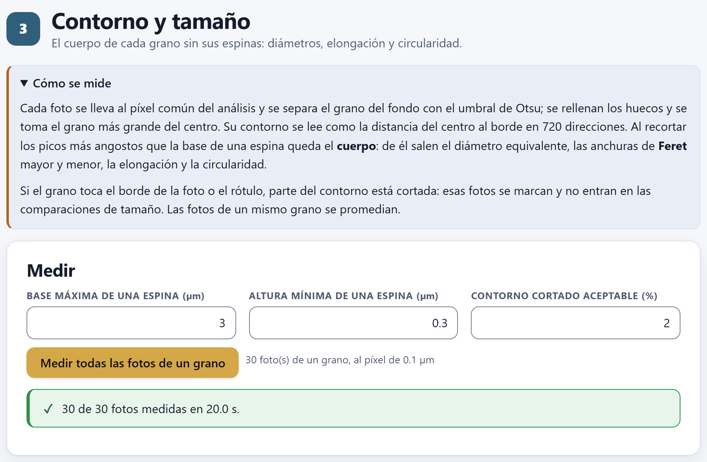
| En la app | Qué es |
|---|---|
| Diámetro del cuerpo (µm) | El diámetro equivalente: el de un círculo con la misma área que el cuerpo, √(4A/π) |
| Diámetro mayor del cuerpo (Feret) (µm) | La anchura más grande del cuerpo: la que mediría un calibrador puesto en la dirección más larga |
| Diámetro menor del cuerpo (Feret) (µm) | La anchura más chica, en la dirección más corta |
| Elongación del cuerpo (mayor/menor) | El Feret mayor entre el menor: 1 en un círculo, más cuanto más alargado |
| Circularidad del cuerpo | 4πA/P²: 1 en un círculo perfecto, menos cuanto más irregular o anguloso es el contorno |
| Diámetro con espinas (µm) | El diámetro equivalente del contorno con las espinas; la diferencia con el del cuerpo da una idea del peso de la ornamentación |
En la terminología palinológica (Punt et al. 2007; Halbritter et al. 2018) el tamaño de un grano equinado se da sin las espinas, porque la ornamentación varía con la preparación y con la vista, y su altura se describe aparte. La apertura del perfil radial hace con números lo que hace el ojo al trazar el contorno «por la base» de las espinas: el resultado no depende de cuántas espinas caen en la silueta ni de qué tan altas son. La circularidad del cuerpo queda por eso muy cerca de 1 en los granos esféricos (0.992 a 0.999 en el ejemplo); en el contorno con espinas sería mucho menor y mediría la ornamentación, no la forma.
Los diámetros de Feret son los de la silueta que se ve. Equivalen al eje polar (P) y al diámetro ecuatorial (E) sólo si el grano está en vista ecuatorial; en vista polar u oblicua miden otra cosa. La app no adivina la vista: si necesitas P y E, fotografía vistas orientadas y ponlas en grupos distintos.
La tarjeta Medir tiene tres campos y un botón. Los valores por omisión sirven para la mayoría de los granos equinados de 20 a 100 µm fotografiados a 1000× o más; cámbialos sólo si la revisión de la sección 3.4 te muestra que algo no se reconoce bien.
| Campo | Omisión | Qué decide |
|---|---|---|
| Base máxima de una espina (µm) | 3 | Lo más ancha que puede ser una espina en su base. Los picos del perfil más angostos que esto se recortan del cuerpo y pueden contarse como espinas; los más anchos son parte de la forma del cuerpo. Súbelo si tus espinas son anchas y cónicas; bájalo si el contorno del cuerpo es ondulado y la app te recorta las ondas. |
| Altura mínima de una espina (µm) | 0.3 | Lo menos que debe sobresalir un pico del cuerpo para ser espina; nunca menos de 1.5 píxeles del análisis. Por debajo queda el ruido del borde y la rugosidad del téctum. |
| Contorno cortado aceptable (%) | 2 | La parte del contorno que puede quedar cortada por el borde o el rótulo sin que la foto salga de las comparaciones de tamaño. |
Al lado del botón Medir todas las fotos de un grano un renglón dice cuántas fotos se van a medir y a qué píxel: con el ejemplo, 30 foto(s) de un grano, al píxel de 0.1 µm. Sólo entran las fotos incluidas que el Bloque 2 tiene como Un grano; las panorámicas van al Bloque 5. Si todavía no hay imágenes, el renglón dice «Abre primero tus imágenes en el Bloque 2.» y el botón queda apagado.
Al pulsar el botón aparece la ventana de espera, que dice qué foto se está midiendo y cuántas faltan. Al terminar, un mensaje verde da el total y el tiempo —«30 de 30 fotos medidas en 20.0 s.» en la figura 3.1; el tiempo cambia de una computadora a otra— y la barra de bloques pone la palomita en los bloques 3 y 4. Si en alguna foto no se encuentra un grano, el mensaje sale en ámbar y nombra las fotos después de Sin grano reconocible:.
Cada pasada empieza de cero: borra las medidas de todas las fotos y la comparación del Bloque 6, que habrá que volver a calcular. Pasa lo mismo cuando cambias la calibración, un grupo o una exclusión en el Bloque 2, y cuando pulsas Volver a medir con estos valores en el Bloque 4.
La tarjeta Resultados aparece en cuanto hay fotos medidas. Arriba, cuatro mosaicos:
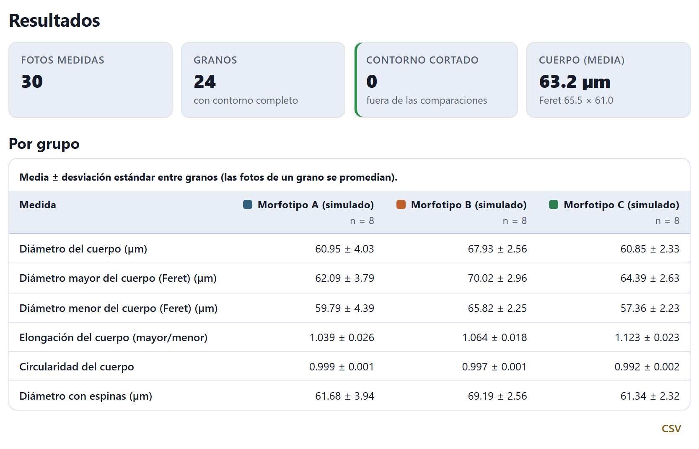
Si alguna foto tuvo que ampliarse para llegar al píxel común (su píxel nativo era más grande), un aviso ámbar lo dice: «… tenían menos resolución que el píxel del análisis y se ampliaron: sus medidas finas (espinas, lúmenes) son menos fiables.» Si alguna tiene el contorno cortado, otro aviso pide revisarlas abajo. Con el ejemplo no aparece ninguno de los dos.
La tabla Por grupo pone un grupo en cada columna, con su número de granos debajo del nombre (n = 8 en el ejemplo), y una medida en cada renglón, bajo el encabezado Medida: la media ± la desviación estándar de las seis medidas de la tabla 3.1. Así cabe en la pantalla aunque haya muchos grupos. Su leyenda lo dice: «Media ± desviación estándar entre granos (las fotos de un grano se promedian).» Primero se promedian las fotos de cada grano y después se calcula la media y la desviación entre granos: la desviación estándar es la variación entre granos, no entre fotos. El botón CSV descarga la tabla como palynopro_tamano_por_grupo.csv, con un renglón por grupo y una columna de media y otra de desviación para cada medida.
El ejemplo se dibuja con parámetros conocidos (sección I.7), así que la tabla se puede leer contra ellos. El morfotipo B tiene el cuerpo más grande, 67.93 µm; A y C miden casi lo mismo (60.95 y 60.85 µm) y no se separan por el diámetro. Sí se separan por la forma: C se dibuja con una razón menor/mayor de 0.90, es decir, una elongación de alrededor de 1.11, y la app mide 1.123; A (0.97) y B (0.95) quedan en 1.039 y 1.064. La circularidad de los tres pasa de 0.99 porque los tres cuerpos son lisos: la elongación y la circularidad miden cosas distintas.
Diámetro del cuerpo por grupo es una gráfica de caja con los granos encima como puntos: la caja va del primer al tercer cuartil, la línea es la mediana y los bigotes llegan a los datos más extremos dentro de 1.5 veces el recorrido intercuartílico. Diámetros de Feret del cuerpo pone cada grano con su Feret mayor en el eje horizontal y el menor en el vertical, con una elipse que encierra al 95 % de cada grupo. Un grano redondo cae cerca de la diagonal; uno alargado, por debajo de ella.
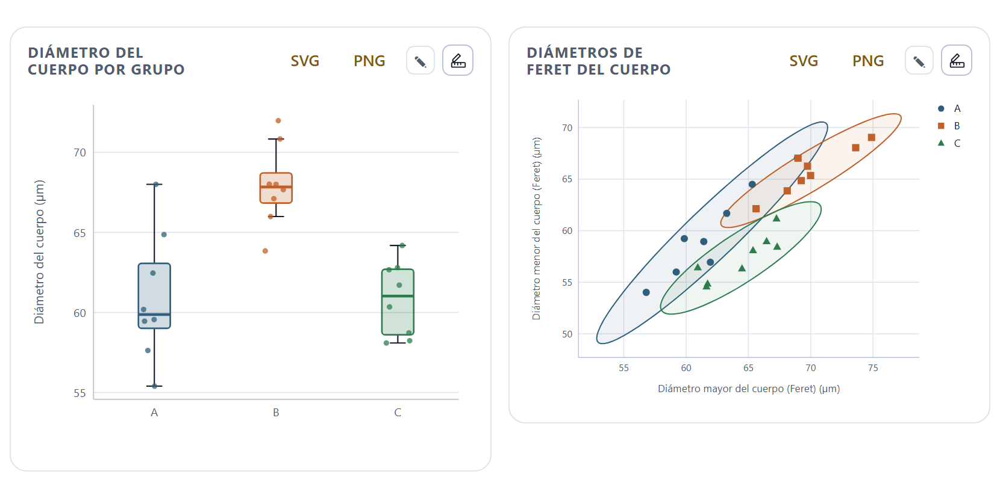
Ninguna cifra vale más que el contorno del que sale. La tarjeta Revisión de cada foto dibuja sobre cada imagen lo que la app midió, para que compruebes, foto por foto, que el grano, el cuerpo y las espinas son los que tú habrías trazado.
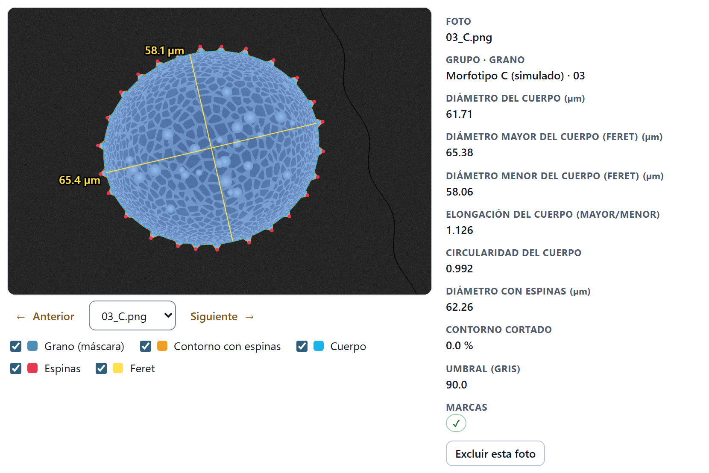
1 2 3 4 503_C.png, un grano del morfotipo C, con todas las capas encendidas, también Feret. Su cuerpo mide 61.71 µm, con Feret de 65.38 × 58.06 µm y elongación de 1.126; ninguna parte del contorno está cortada. Los números corresponden a la lista de abajo.| Capa | Qué dibuja |
|---|---|
| Grano (máscara) | Tiñe de azul los píxeles que el umbral tomó como grano. Si la mancha azul se sale del grano o le faltan pedazos, el umbral no separó bien el grano del fondo. |
| Contorno con espinas | El perfil radial, en naranja: la silueta con sus espinas. |
| Cuerpo | El contorno del cuerpo, en celeste y discontinuo: debe pasar por la base de las espinas. |
| Espinas | Un punto rojo en la punta de cada espina contada. |
| Feret | Apagada al abrir. Los dos diámetros de Feret, en amarillo, con su longitud en µm escrita junto a un extremo, siempre dentro de la foto. |
Las direcciones de contorno cortado se señalan siempre con cuadritos blancos sobre el borde, sea cual sea la capa encendida. Los datos de la derecha terminan con el Contorno cortado en porcentaje, el Umbral (gris) que eligió Otsu (entre 89 y 91 en las fotos del ejemplo; 90.0 en la figura 3.4) y las Marcas: una palomita si la foto está bien, contorno cortado o ampliada si no.
El grano 3 del morfotipo C se fotografió dos veces, 03_C.png y 03a_C.png, con otro ruido y otro giro. Su cuerpo mide 61.71 µm en las dos fotos (61.708 y 61.715 en la tabla de todas las fotos), y las dos cuentan 26 espinas. En la tabla por grupo cuentan como un solo grano, con el promedio de las dos: por eso el morfotipo C tiene 10 fotos y n = 8.
Excluir esta foto saca la foto del estudio: se borra su medida, desaparece de la tabla y de las figuras, y la comparación del Bloque 6 se borra para que vuelvas a calcularla. Úsalo con una foto que de verdad no sirve —un grano roto, dos granos pegados, una foto movida—, no con la que da un número que no te gusta. Con el ejemplo, al excluir 03_C.png el mosaico Fotos medidas baja a 29, pero Granos sigue en 24, porque el grano 3 de C conserva su otra foto.
La foto excluida no desaparece del visor: sigue en el selector como «03_C.png — excluida», y puedes verla con sus capas para decidir; en los datos de la derecha, en lugar de las medidas, se lee Estado: «Excluida: no entra en el análisis.». El botón cambia a Volver a incluir, que la vuelve a medir en el acto, con los mismos ajustes que las demás, y avisa «Foto incluida y medida»; no hace falta medir las demás. Hay una excepción: el píxel común (sección 3.1) depende de las fotos incluidas, y si excluir o incluir una lo mueve, el aviso dice «El píxel común del análisis cambió: vuelve a medir todas las fotos.»; entonces pulsa otra vez Medir todas las fotos de un grano. También puedes excluir o incluir fotos en el Bloque 2, con la columna Excluir de la tabla de imágenes.
Bajo el visor, el desplegable Tabla de todas las fotos tiene un renglón por foto con Foto, Grupo, Grano, las seis medidas, Cortado (%) y Marcas. Los renglones de las fotos que quedan fuera de las comparaciones se marcan; un clic en un renglón lleva esa foto al visor. Su botón CSV descarga palynopro_medidas_por_foto.csv, con las 19 variables de la app (también las de ornamentación) y una columna usable que vale 1 o 0.
Si abriste un proyecto guardado sin volver a abrir la carpeta de imágenes, las medidas siguen ahí pero el visor dice «Abre otra vez la carpeta para ver la foto.»: el proyecto guarda referencias, no las fotos (sección I.5).
| Si la máscara azul cubre el grano y nada más, y el cuerpo celeste pasa por la base de las espinas… | entonces la foto está bien medida; sigue con la siguiente. |
| Si el cuerpo «se come» ondulaciones anchas del contorno, o deja espinas dentro… | ajusta la Base máxima de una espina (µm) (más chica en el primer caso, más grande en el segundo) y mide otra vez. |
| Si la foto lleva la marca contorno cortado… | el grano toca el borde o el rótulo: no entra en las comparaciones. Si el corte es pequeño y estás seguro de la forma, puedes subir el porcentaje aceptable; si no, fotografía el grano otra vez centrado. |
| Si la foto lleva la marca ampliada… | el tamaño del cuerpo sigue siendo fiable, pero las espinas y los lúmenes no tanto; prefiere fotos a más aumentos o un píxel del análisis más grueso. |
| Si la máscara toma un grano vecino, polvo o una mancha del fondo… | excluye la foto, o recórtala fuera de la app y ábrela de nuevo. |
La revisión es la única garantía de que un número sale de un grano bien leído. Con decenas de fotos, recórrelas todas con Siguiente →: toma pocos minutos.
El botón está apagado. No hay fotos de un grano incluidas: abre tus imágenes en el Bloque 2 y revisa que no estén todas marcadas como Panorámica o Detalle. «Sin grano reconocible». La foto es casi uniforme, está muy oscura o el grano es más oscuro que el fondo; mírala en el visor del Bloque 2. Los tamaños salen al doble o a la mitad. La calibración está mal: revisa la magnificación y el Ancho del cuadro de referencia (mm) en el Bloque 2, y que la barra de escala no salga como dudosa. Dos fotos del mismo grano cuentan como dos granos. El nombre no deja leer el grano: corrige el Patrón del nombre (grupo y grano) o pon la columna grano en el índice. Faltan granos en la tabla. Sus fotos tienen el contorno cortado o están excluidas: búscalas en el selector, con ⚠ o con «— excluida».
Dos granos del mismo tamaño pueden distinguirse por su superficie: cuántas espinas asoman en el contorno y qué tan altas son, qué tan abierta es la malla del retículo y qué tan áspera se ve la superficie. Este bloque presenta esas medidas, que salen de la misma pasada del Bloque 3, y deja ajustar cómo se buscan los lúmenes.
El Bloque 4 no tiene botón para medir: la ornamentación se mide en la misma pasada que el contorno, al pulsar Medir todas las fotos de un grano en el Bloque 3. Si entras aquí antes de medir, el bloque sólo muestra un recuadro que lo explica y un botón para ir a medir.
El subtítulo del bloque es «Espinas en el contorno, lúmenes del retículo y textura de la superficie.» El desplegable Cómo se mide explica los tres grupos de medidas en un párrafo cada uno; aquí van con más detalle.
Las espinas salen del perfil radial del Bloque 3 (sección 3.1): la altura de cada dirección sobre el cuerpo es la diferencia entre el contorno y el cuerpo. Un pico de esa diferencia es una espina si sobresale más que la Altura mínima de una espina (µm) y es más angosto que la Base máxima de una espina (µm); dos picos más cercanos que media base cuentan como uno, el más alto. Las espinas que caen en direcciones de contorno cortado, o junto a ellas, no se cuentan.
La altura de cada espina se mide de la punta a la cuerda que une sus dos pies: el pie de cada lado es el punto más bajo del contorno entre la punta y el lugar donde el contorno vuelve a tocar el cuerpo. Medirla así, y no sobre el cuerpo recortado, importa en los granos alargados: ahí el cuerpo está inclinado bajo la espina, y la cuerda sigue esa inclinación. De las espinas salen cinco medidas:
| En la app | Qué es |
|---|---|
| Espinas en el contorno | Cuántas espinas asoman en la silueta |
| Altura media de espina (µm) | La altura promedio de sus puntas, cada una sobre la cuerda entre sus dos pies |
| Espaciado entre espinas (µm) | El perímetro libre del cuerpo (sin la parte cortada) entre el número de espinas |
| Densidad de espinas (/100 µm) | Espinas por cada 100 µm de perímetro libre del cuerpo; no depende del tamaño del grano, a diferencia del número |
| Área de espinas / área del cuerpo | Cuánto añaden las espinas al área de la silueta, como fracción del área del cuerpo: resume a la vez su número, su altura y su anchura |
Las espinas que apuntan hacia el detector se ven como puntos sobre la cara del grano y no forman parte de la silueta: no se cuentan. El número es, por eso, comparable entre grupos fotografiados del mismo modo, pero no es el total de espinas del grano. Para comparar granos de tamaños distintos, la densidad es mejor que el número.
En un grano reticulado, los lúmenes —las celdas del retículo— se ven más oscuros que los muros que los rodean. La app busca los lúmenes en la parte interior del cuerpo, lejos de su borde (deja fuera el 18 % exterior del radio, donde la superficie se ve de canto), con un umbral local en la línea de Niblack (1986): un píxel es lumen si es más oscuro que la media de su vecindario por más de cierto número de desviaciones estándar de ese vecindario. Cada grupo de píxeles oscuros que no toca el borde de esa zona, de entre 0.05 y 12 µm², es un lumen; las manchas oscuras más grandes, como las aberturas, quedan fuera por su tamaño. De ellos salen tres medidas:
La textura se mide en la misma zona interior con la matriz de coocurrencia de grises (Haralick et al. 1973): cuántas veces un nivel de gris aparece junto a otro a una distancia dada. La app reduce los grises a 32 niveles entre los percentiles 1 y 99 de la zona, cuenta los pares a 0.2 y 0.4 µm en cuatro direcciones (0°, 45°, 90° y 135°), sólo cuando los dos píxeles están sobre la superficie, y promedia las ocho matrices.
| En la app | Sube cuando… |
|---|---|
| Textura: contraste | los píxeles vecinos difieren mucho en gris: una superficie áspera o de mallas marcadas |
| Textura: homogeneidad | los vecinos se parecen: una superficie lisa o de dibujo grande |
| Textura: entropía | la combinación de grises es variada y poco predecible |
| Textura: correlación | el gris de un píxel predice el de su vecino: zonas claras y oscuras amplias, como celdas grandes |
La app calcula también la Textura: energía, que sube en las superficies uniformes; no aparece en las tablas de este bloque, pero sí entre las variables del Bloque 6 y en el CSV de todas las fotos.
La tarjeta Lúmenes tiene los dos parámetros del umbral local. Los de las espinas están en el Bloque 3, porque también deciden dónde está el cuerpo.
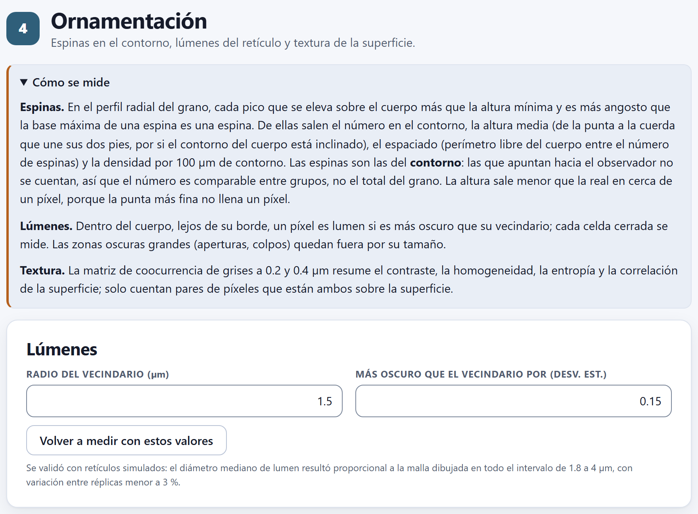
| Campo | Omisión | Qué decide |
|---|---|---|
| Radio del vecindario (µm) | 1.5 | El tamaño del cuadro con que se compara cada píxel; nunca menos de 2 píxeles. Debe ser algo mayor que medio lumen: así el vecindario abarca muro y lumen a la vez. |
| Más oscuro que el vecindario por (desv. est.) | 0.15 | Cuánto más oscuro que la media del vecindario debe ser un píxel para ser lumen. Más alto, lúmenes más chicos y menos; más bajo, se cuela el ruido. |
Los valores se aplican con Volver a medir con estos valores, que lleva al Bloque 3 y vuelve a medir todas las fotos (con el ejemplo, unos 20 a 30 s). Como cualquier medición nueva, borra la comparación del Bloque 6.
La nota al pie de la tarjeta dice cómo se validó: «Se validó con retículos simulados: el diámetro mediano de lumen resultó proporcional a la malla dibujada en todo el intervalo de 1.8 a 4 µm, con variación entre réplicas menor a 3 %.» «Proporcional» no es «igual»: lo explica la sección 4.3.
Con el ejemplo, cambiar el Radio del vecindario (µm) de 1.5 a 2.5 y volver a medir apenas mueve los lúmenes: el mosaico Lumen (mediana) sigue en 1.53 µm y la densidad pasa de 25.5 a 25.2 por 100 µm²; por grupo, el diámetro mediano pasa de 1.272 a 1.275 µm en A, de 1.429 a 1.434 en B y de 1.876 a 1.890 en C. El umbral es robusto mientras el vecindario abarque una celda y su muro; si tus lúmenes son mucho más grandes que los del ejemplo, sube el radio en proporción.
La tarjeta Resultados empieza con cuatro mosaicos, todos promedios de los granos con contorno completo, de todos los grupos juntos: Espinas en el contorno (por grano (media)), Altura de espina, Densidad de espinas (por 100 µm de contorno) y Lumen (mediana), con la densidad de lúmenes debajo.
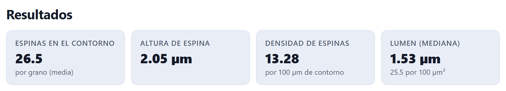
Sigue la tabla Por grupo, como la del Bloque 3: un grupo por columna, con su número de granos debajo del nombre, y una medida por renglón, con la media ± la desviación estándar entre granos. Las doce medidas van en tres secciones: Espinas (las cinco de la tabla 4.1), Lúmenes (las tres de los lúmenes) y Textura (cuatro de las cinco de textura). Su botón CSV descarga palynopro_ornamentacion_por_grupo.csv, con un renglón por grupo.
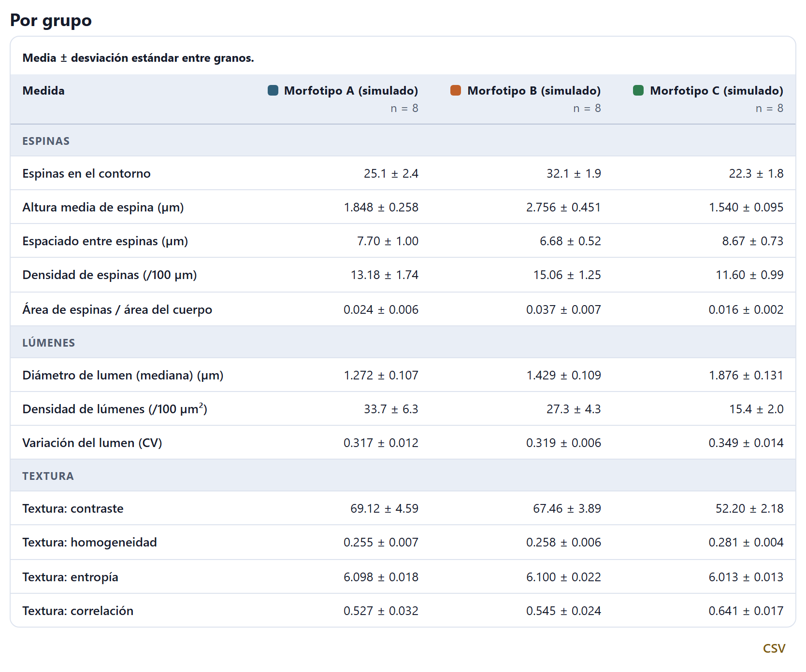
Número de espinas. Se dibujan 24, 32 y 22 espinas en el contorno de A, B y C (sección I.7), y la app cuenta 25.1, 32.1 y 22.3 en promedio. Altura. Se dibujan 2.0, 2.8 y 1.7 µm y la app mide 1.848, 2.756 y 1.540 µm: siempre algo menos, de 0.04 a 0.16 µm, del orden de un píxel del análisis (0.1 µm); en proporción, la diferencia es mayor en C, el de espinas más cortas. Lumen. La malla dibujada es de 2.2, 2.6 y 3.4 µm y el lumen mediano mide 1.272, 1.429 y 1.876 µm: el orden es el mismo y la razón lumen/malla ronda 0.55 en los tres. Textura. C, el de malla más abierta, tiene menos contraste y más correlación: sus zonas claras y oscuras son más amplias.
La altura sale un poco baja. La punta de una espina es más fina que un píxel y no alcanza a pasar el umbral: el pico del perfil se queda por debajo de la punta verdadera, y se pierde cerca de un píxel de altura. En la validación con 60 granos simulados, con espinas de 1.2 a 3.2 µm, la altura medida quedó por debajo de la dibujada con una mediana de 3.9 % (entre 2.9 y 5.7 %); la pérdida pesa más, en proporción, cuando la espina mide pocos píxeles de alto o cuando las espinas se tocan en la base. Compara alturas entre grupos fotografiados igual, y si das la altura en µm, di en los métodos que está subestimada en cerca de un píxel (el informe del Bloque 7 lo dice). El lumen es proporcional a la malla, no igual. La malla va de centro a centro de muro; el lumen es sólo la parte oscura de cada celda, sin los muros ni la penumbra de su orilla. En la validación, la razón fue de 0.558 con una variación entre granos de 1.8 %: constante, así que el lumen ordena y compara bien los retículos.
Tres gráficas de caja, con los granos como puntos —Densidad de espinas por grupo, Diámetro de lumen por grupo y Altura de espina por grupo— y un diagrama de dispersión, Textura: contraste contra homogeneidad, con una elipse que encierra al 95 % de cada grupo.
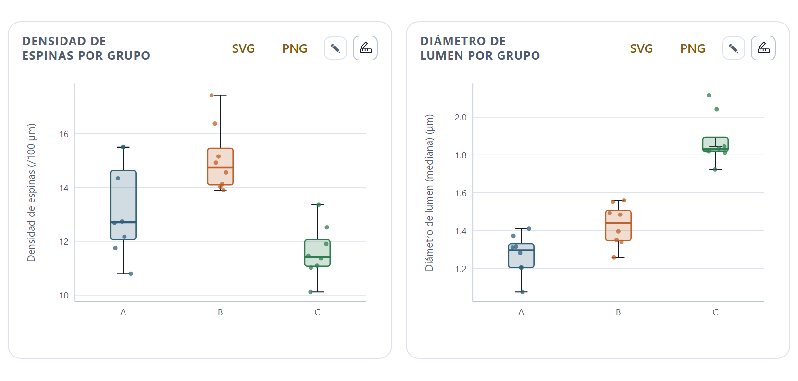
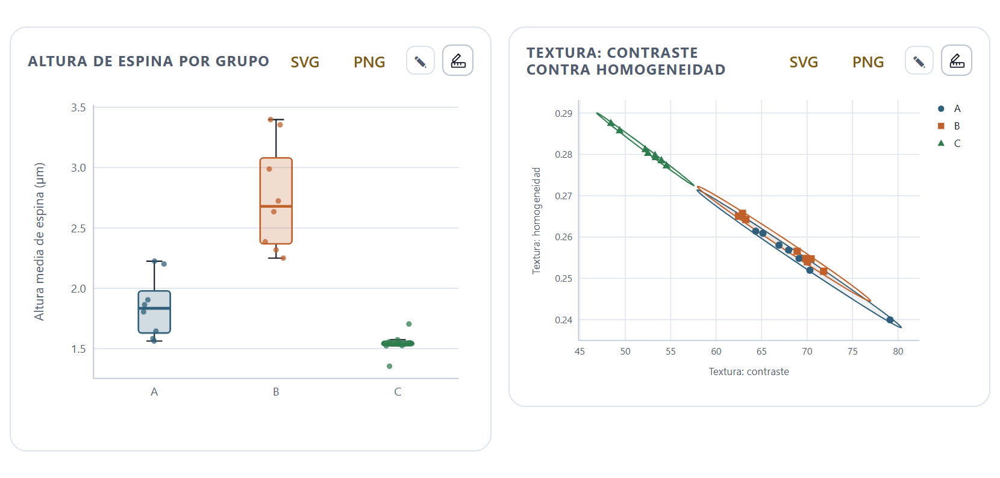
Como en el Bloque 3, la tarjeta Revisión de cada foto dibuja sobre la imagen lo que se midió, con ← Anterior, el selector y Siguiente → para recorrer las fotos. Tiene tres capas: Lúmenes (en verde, cada lumen medido), Espinas (las puntas, en rojo) y Cuerpo (en celeste, discontinuo). A la derecha van la foto, sus doce medidas de ornamentación y los Lúmenes medidos. Aquí no hay botón para excluir: las fotos se excluyen en el Bloque 3.
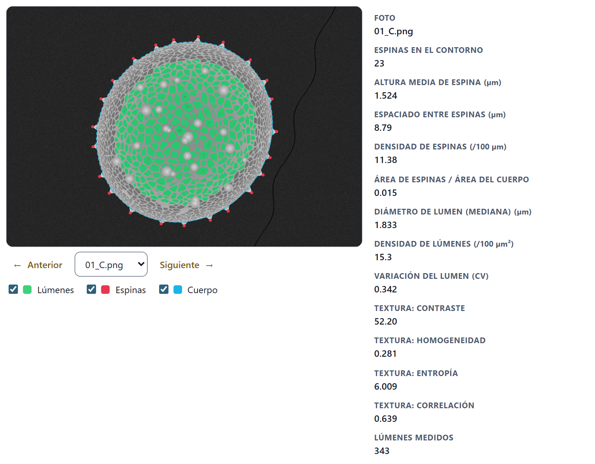
01_C.png, un grano del morfotipo C, de malla abierta: el verde cubre las celdas del interior y deja fuera la orilla del cuerpo, donde la superficie se ve de canto. A la derecha, sus medidas: 23 espinas en el contorno, de 1.524 µm de alto en promedio; 343 lúmenes medidos, con un diámetro mediano de 1.833 µm y 15.3 lúmenes por 100 µm².Lo que hay que mirar en la capa Lúmenes: que el verde caiga en las celdas y no en los muros; que no se junten dos celdas en una mancha grande; y que no queden celdas claras sin marcar. Que falten lúmenes en la orilla del grano es lo esperado: esa zona no se analiza.
Bajo el visor, Perfil radial de la foto elegida muestra el contorno como lo lee la app: la Dirección desde el centro (°), de 0 a 360, en el eje horizontal, y el Radio (µm) en el vertical. La línea fina es el Contorno, con las espinas como picos; la gruesa discontinua, el Cuerpo que quedó al recortarlos; los círculos, las Espinas contadas. Es la manera más directa de ver por qué un pico se contó o no.
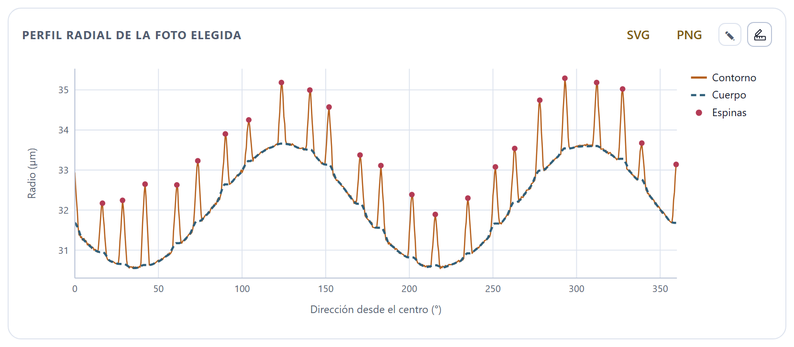
01_C.png. El cuerpo sube y baja dos veces en la vuelta, entre unos 30.6 y 33.7 µm de radio: es la huella de un grano alargado (sus dos extremos y sus dos costados). Las 23 espinas son los picos angostos, de 1 a 2 µm sobre el cuerpo; la línea pasa por las 720 direcciones, así que cada círculo cae justo en la punta de su pico. La altura de cada espina se mide de esa punta a la cuerda entre sus dos pies (sección 4.1).| Si los grupos difieren de tamaño… | entonces compara la Densidad de espinas o el espaciado, no el número: un grano más grande tiene más espinas en el contorno aunque su ornamentación sea la misma. |
| Si en el perfil un pico claro no lleva círculo… | es más bajo que la Altura mínima de una espina (µm) o más ancho que la base: ajusta esos campos en el Bloque 3. |
| Si en el perfil se cuentan como espinas pequeñas ondas del borde… | sube la altura mínima, o revisa si la foto tiene ruido fuerte o está ampliada. |
| Si la capa Lúmenes marca los muros o junta celdas… | cambia el Más oscuro que el vecindario por (desv. est.) o el radio, y vuelve a medir. |
| Si quieres dar una altura de espina en µm… | recuerda que la app la subestima en cerca de un píxel (3 a 6 % en espinas de muchos píxeles, más en las cortas); para comparar grupos sirve tal cual. |
Con superficies que no son reticuladas (psiladas, verrugosas), los lúmenes encontrados son motas del ruido: no uses esas variables en el Bloque 6.
El bloque sólo dice «Primero mide los granos». Mide en el Bloque 3; si ya mediste y cambiaste algo en el Bloque 2, las medidas se borraron. Ningún lumen, o la densidad en blanco. La foto tiene poca resolución para el retículo (marca ampliada), la superficie no es reticulada o el grano es tan chico que no queda zona interior. Muchas espinas de más. El contorno es rugoso por el ruido: sube la Altura mínima de una espina (µm). Las alturas cambian al cambiar el píxel del análisis. Es lo esperado: con un píxel más grueso la punta se pierde más; usa el mismo píxel en todo el estudio.
Un grano bien formado es turgente y casi convexo; uno vacío o abortado se pliega. En las fotos panorámicas, con muchos granos a la vez, este bloque separa cada grano, mide qué tan convexo es su cuerpo y estima, por grupo, la proporción de granos colapsados con su intervalo de confianza, y si esa proporción difiere entre grupos.
El bloque trabaja sólo con las fotos que el Bloque 2 tiene como Panorámica: tomas a pocos aumentos con muchos granos. Su subtítulo lo resume: «Granos turgentes y colapsados en las panorámicas, por grupo.» El desplegable Cómo se estima explica el método; estos son sus pasos.
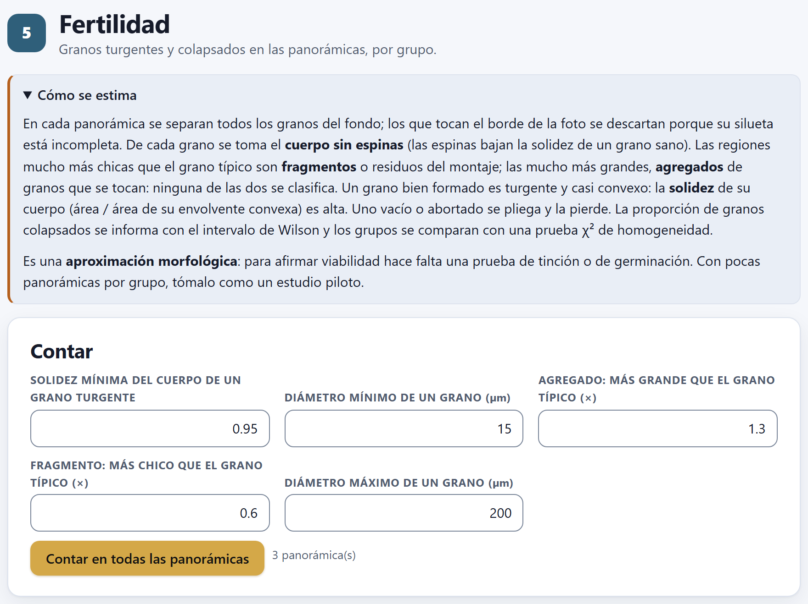
La envolvente convexa es la figura que formaría una liga estirada alrededor del cuerpo (la app la calcula con el algoritmo de Andrew 1979). En un cuerpo convexo, como un círculo o una elipse, la liga toca todo el borde y la solidez vale 1. Un grano que se vacía se hunde por un lado: la liga salta el hundimiento y el área que queda entre los dos baja la solidez. Por eso la solidez distingue un grano plegado aunque mida lo mismo que uno sano, y no castiga a un grano sólo por ser alargado. Los granos turgentes del ejemplo tienen solidez de 0.99 o más.
La solidez es una aproximación morfológica. Un grano turgente puede no ser viable, y la preparación para el microscopio electrónico (el secado, el vacío) puede colapsar granos que sí lo eran. Para afirmar viabilidad hace falta una prueba de tinción o de germinación. El bloque sirve para comparar grupos tratados del mismo modo y, con pocas panorámicas, tómalo como un estudio piloto. La app lo recuerda en los resultados.
La tarjeta Contar tiene cinco campos y el botón Contar en todas las panorámicas. A su lado, un renglón dice cuántas panorámicas hay; si no hay ninguna, dice «No hay panorámicas: márcalas como “Panorámica” en el Bloque 2.» y el botón queda apagado.
| Campo | Omisión | Qué decide |
|---|---|---|
| Solidez mínima del cuerpo de un grano turgente | 0.95 | El corte entre turgente y colapsado. Es conservador: reconoce la mayoría de los granos plegados sin tomar por colapsado a uno sano. |
| Diámetro mínimo de un grano (µm) | 15 | Las regiones más chicas se ignoran: polvo, ruido. |
| Agregado: más grande que el grano típico (×) | 1.3 | Desde cuántas veces el diámetro típico una región se toma como agregado. |
| Fragmento: más chico que el grano típico (×) | 0.6 | Por debajo de cuántas veces el diámetro típico una región se toma como fragmento. |
| Diámetro máximo de un grano (µm) | 200 | Las regiones más grandes se ignoran: manchas del soporte, cúmulos. |
Ajusta el mínimo y el máximo al polen que estudias: deben dejar dentro a todos los granos y fuera la basura del montaje. Al pulsar el botón, la ventana de espera dice qué panorámica se cuenta; con las tres del ejemplo, toma unos segundos. Si una panorámica no se puede leer, un aviso ámbar la nombra.
La tarjeta Resultados empieza con cuatro mosaicos:
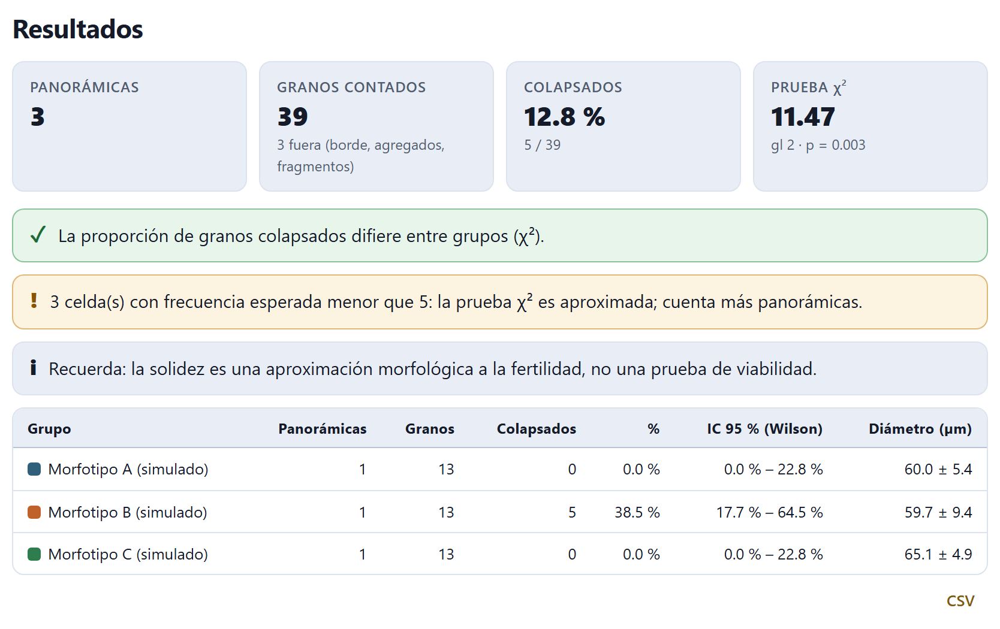
Debajo de los mosaicos van hasta tres avisos. El primero da la conclusión de la prueba: «La proporción de granos colapsados difiere entre grupos (χ²).» si p < 0.05, o «No se detectó diferencia entre grupos en la proporción de granos colapsados (χ²).» si no. El segundo aparece cuando alguna frecuencia esperada es menor que 5 —con el ejemplo, «3 celda(s) con frecuencia esperada menor que 5: la prueba χ² es aproximada; cuenta más panorámicas.»—. El tercero está siempre: «Recuerda: la solidez es una aproximación morfológica a la fertilidad, no una prueba de viabilidad.»
Un renglón por grupo con Panorámicas, Granos (los clasificados), Colapsados, el %, el IC 95 % (Wilson) y el Diámetro (µm) de los granos clasificados, media ± desviación estándar. El botón CSV descarga palynopro_fertilidad.csv, con la proporción y los límites del intervalo como fracciones. Con el ejemplo, la tabla es la de la figura 5.2: B tiene 5 colapsados de 13 (38.5 %, con un intervalo de 17.7 a 64.5 %), y A y C, 0 de 13 (de 0.0 a 22.8 %).
Wilson (1927). Con 13 granos, una proporción de 0 de 13 no quiere decir que el grupo no tenga granos colapsados: sólo que no se vio ninguno. El intervalo de Wilson da el recorrido de proporciones compatibles con lo contado —de 0 a 22.8 % para 0 de 13— y, a diferencia del intervalo «de libro» (la proporción ± 1.96 errores estándar), no se sale de 0 a 100 % ni se encoge a cero cuando no hay colapsados. χ² de homogeneidad. La tabla de grupos × (turgentes, colapsados) se compara con la que se esperaría si todos los grupos tuvieran la misma proporción; los grados de libertad son los grupos menos uno. La aproximación χ² pide frecuencias esperadas de al menos 5: con 5 colapsados entre 39 granos, cada grupo de 13 «esperaría» menos de 2, de ahí el aviso.
El diámetro de esta tabla no sustituye al del Bloque 3: se mide a pocos aumentos (0.67 µm/px en el ejemplo) e incluye a los granos colapsados, que miden menos; por eso la desviación de B es mayor. Además, en el ejemplo los granos de las panorámicas se dibujan casi redondos, sin la elongación de cada morfotipo, y el de C sale más grande que en las fotos de un grano. Úsalo sólo para comprobar que se contó polen del tamaño esperado.
El ejemplo dibuja cada grano de las panorámicas colapsado con cierta probabilidad —15, 35 y 10 % en A, B y C (sección I.7)—, de modo que la cuenta de cada panorámica no es exactamente ese porcentaje: en las del ejemplo quedaron dibujados 1, 7 y 1 granos colapsados de 14, contando los que tocan el borde. Con el umbral de 0.95, la app reconoce 5 en B —de los otros dos, uno toca el borde y otro llega a 0.962 (figura 5.4)— y ninguno en A ni en C, donde el grano menos sólido llega a 0.958 y 0.968. Así cambian los resultados al mover la Solidez mínima del cuerpo de un grano turgente:
| Solidez mínima | A | B | C | Colapsados | χ² (gl 2) | p |
|---|---|---|---|---|---|---|
| 0.93 | 0 | 3 | 0 | 7.7 % | 6.50 | 0.039 |
| 0.95 (omisión) | 0 | 5 | 0 | 12.8 % | 11.47 | 0.003 |
| 0.96 | 1 | 5 | 0 | 15.4 % | 8.27 | 0.016 |
| 0.97 | 1 | 6 | 1 | 20.5 % | 7.86 | 0.020 |
La conclusión —B tiene más granos colapsados que A y C— se sostiene en los cuatro casos; los porcentajes, no. Por eso conviene informar el umbral junto con el resultado (el informe del Bloque 7 lo hace) y mirar el histograma: si hay un hueco claro entre los granos sanos y los plegados, el umbral puede ir en él.
Granos colapsados por grupo da el porcentaje de colapsados de cada grupo en barras, con el intervalo de Wilson como bigote. Solidez del cuerpo de los granos es un histograma de la solidez de todos los granos clasificados, entre 0.75 y 1, con una línea vertical en el umbral: los granos a su izquierda son los colapsados.
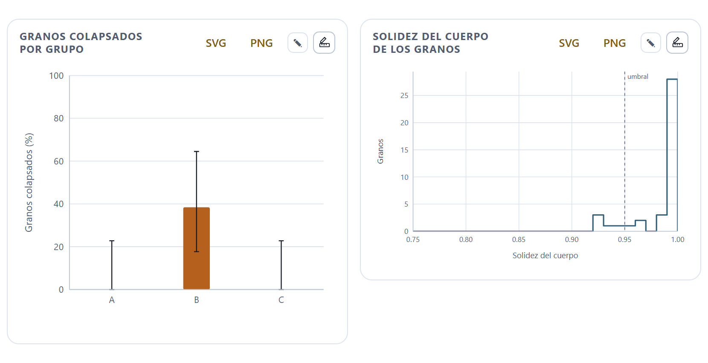
La tarjeta Revisión de cada panorámica dibuja un círculo alrededor de cada región encontrada, con el color de su clase y su solidez escrita con tres decimales, encima del grano o, si el grano está junto al borde de arriba, debajo; siempre dentro de la foto. Las panorámicas se eligen en el selector. La leyenda de colores va debajo de la imagen:
| Color y rótulo | Qué significa |
|---|---|
| verde · turgente | Solidez del cuerpo igual o mayor que el umbral |
| rojo · colapsado o deforme | Solidez menor que el umbral |
| violeta · agregado (no cuenta) | Más grande que el grano típico por el factor de agregado |
| amarillo · fragmento (no cuenta) | Más chico que el grano típico por el factor de fragmento |
| gris · toca el borde (no cuenta) | Silueta incompleta |
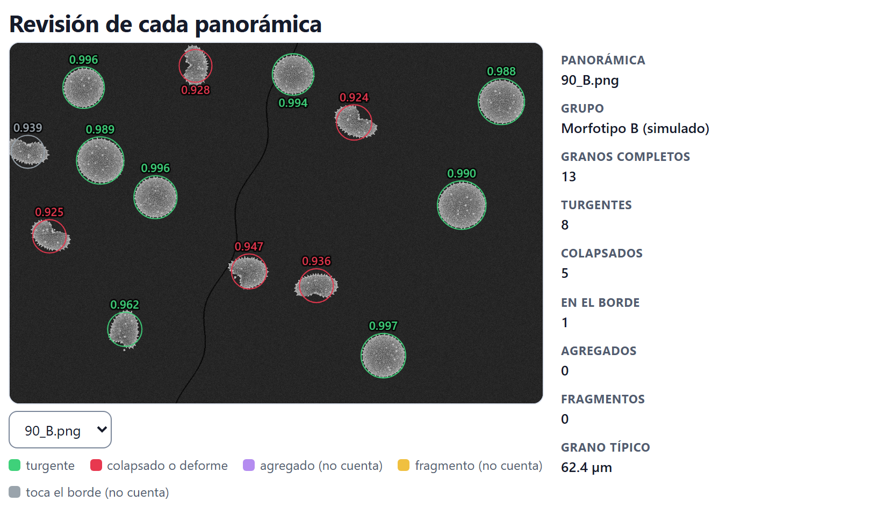
90_B.png del morfotipo B: 13 granos completos, 8 turgentes (verde) y 5 colapsados (rojo), con solidez de 0.92 a 0.95; el de la orilla izquierda (gris, 0.94) también está plegado, pero toca el borde y no cuenta. El grano típico mide 62.4 µm. Fíjate en el grano verde marcado 0.96, abajo a la izquierda: tiene una muesca y está plegado, pero su solidez pasa el umbral de 0.95. Es el que se suma a B al subirlo a 0.97 (sección 5.3).A la derecha van la Panorámica, el Grupo, los Granos completos (los clasificados), cuántos son Turgentes y cuántos Colapsados, cuántos quedaron En el borde, cuántos Agregados y Fragmentos, y el Grano típico en µm con que se juzgaron. En la panorámica del morfotipo A, por ejemplo: 13 granos completos, los 13 turgentes, 1 en el borde y un grano típico de 60.8 µm.
| Si p < 0.05 y no hay aviso de frecuencias pequeñas… | entonces la proporción de granos colapsados difiere entre grupos; mira en la tabla y en las barras cuál se aparta. |
| Si p < 0.05 pero aparece el aviso de frecuencias esperadas menores que 5… | la diferencia es probable pero la prueba es aproximada: cuenta más panorámicas antes de afirmarla. |
| Si los intervalos de Wilson son anchos (más de 30 puntos)… | hay pocos granos por grupo; el porcentaje es poco preciso aunque la prueba salga significativa. |
| Si en la revisión hay granos plegados en verde… | sube un poco la solidez mínima; si hay granos sanos en rojo, bájala. Busca el hueco del histograma. |
| Si dos granos pegados salen en verde o rojo, o uno sano en violeta o amarillo… | ajusta los factores de agregado y fragmento. |
Informa siempre el umbral de solidez y el número de granos por grupo, y llama al resultado «granos colapsados», no «polen inviable».
El botón está apagado. No hay panorámicas: márcalas en la columna Tipo de la tabla de imágenes del Bloque 2. Muchos granos fuera. Las panorámicas están tan llenas que los granos se tocan (agregados) o llegan al borde: toma campos menos poblados. Los fragmentos son granos chicos de verdad. Si tu muestra mezcla granos de tamaños muy distintos, el grano típico no representa a todos: baja el factor de fragmento o separa las panorámicas por grupo. Todos los granos salen colapsados. El umbral de Otsu tomó también parte del fondo o los granos están desenfocados: revisa la foto en el visor del Bloque 2.
La pregunta de casi todo estudio de polen: ¿se distinguen los grupos por su polen? El bloque la contesta en tres escalas —variable por variable, con todas las variables a la vez y grano por grano, como una clave— y siempre con el grano como unidad, de modo que un grano fotografiado dos veces no cuenta doble ni se ayuda a sí mismo a clasificarse.
El Bloque 6 trabaja con lo que midió el Bloque 3 —el contorno, el tamaño y, en la misma pasada, la ornamentación del Bloque 4—; no vuelve a leer las imágenes. Bajo el título, la app dice lo que hace: «¿Se distinguen los grupos por su polen? Con el grano como unidad.». Tiene un desplegable, Qué se calcula, la tarjeta Variables con el botón que lanza el análisis y, una vez calculado, cinco tarjetas de resultados: En resumen, Por variable, Componentes principales, PERMANOVA y Clave polínica: clasificar un grano. Todas las cifras de este capítulo salen del ejemplo simulado medido con los valores por omisión y comparado con los ajustes por omisión.
Antes de cualquier prueba, la app junta las fotos de cada grano en un solo renglón: el promedio de sus medidas. Todo lo demás —las pruebas, los componentes, la PERMANOVA y los clasificadores— se hace con esos granos, no con las fotos.
El desplegable Qué se calcula lo resume en un párrafo. Por pasos, lo que la app hace al pulsar Comparar los grupos es esto:
03_A.png y 03a_A.png son el grano A·03). Si a un grano le falta alguna de las variables elegidas, queda fuera, y la app lo dice junto al botón (sección 6.2).Mientras calcula, la ventana de espera «Comparando los grupos» dice en qué paso va: Pruebas por variable, Componentes principales, PERMANOVA, Análisis discriminante, Bosque aleatorio (validación por grano) e Importancia de las variables. Con el ejemplo tarda unos segundos.
Dos fotos del mismo grano no son dos observaciones independientes: se parecen porque son el mismo grano. Si contaran por separado, las pruebas creerían tener más datos de los que hay y darían valores de p demasiado pequeños (lo que en estadística se llama seudorreplicación). Y en la validación de un clasificador, una foto se clasificaría con ayuda de su gemela, que está en el conjunto de entrenamiento, y el acierto saldría inflado. Promediar por grano y dejar fuera el grano completo evita las dos trampas. En el ejemplo, seis granos (los 3 y 6 de cada morfotipo) tienen dos fotos: 30 fotos son 24 granos.
La tarjeta Variables decide qué medidas entran al análisis multivariado y fija los tres números que gobiernan las partes aleatorias. Debajo está el botón Comparar los grupos.
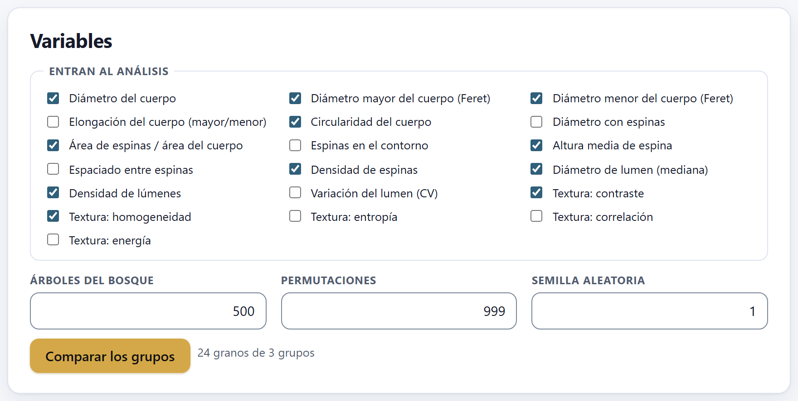
El recuadro Entran al análisis tiene una casilla por cada medida que saca el Bloque 3 o el 4. Al abrir la app vienen marcadas once, elegidas para que el análisis no repita información:
| Marcadas por omisión (11) | Sin marcar (8) |
|---|---|
| Diámetro del cuerpo · Diámetro mayor del cuerpo (Feret) · Diámetro menor del cuerpo (Feret) · Circularidad del cuerpo | Elongación del cuerpo (mayor/menor) · Diámetro con espinas |
| Área de espinas / área del cuerpo · Altura media de espina · Densidad de espinas | Espinas en el contorno · Espaciado entre espinas |
| Diámetro de lumen (mediana) · Densidad de lúmenes | Variación del lumen (CV) |
| Textura: contraste · Textura: homogeneidad | Textura: entropía · Textura: correlación · Textura: energía |
Las que quedan fuera son, casi todas, combinaciones de otras: la elongación es el cociente de los dos Feret; el diámetro con espinas es, a grandes rasgos, el cuerpo más dos alturas de espina; el número de espinas y su espaciado salen de la densidad y del perímetro; la entropía y la energía de la textura van casi siempre de la mano de la homogeneidad. Puedes marcar o desmarcar las que quieras —la app pide al menos dos— y la elección se guarda en el proyecto. Si vuelves a medir en el Bloque 3, la elección se conserva, pero el resultado se borra y hay que volver a comparar.
El discriminante lineal estima una matriz de covarianza con tantas filas como variables. Con pocos granos por grupo y muchas variables marcadas la matriz se vuelve casi singular, y la app la estabiliza con una pequeña corrección (una cresta de 0.001) para poder seguir; el acierto, entonces, depende más del azar del muestreo. Como guía, procura tener en el grupo más pequeño más granos que variables marcadas. El ejemplo tiene 8 granos por grupo y 11 variables, en el límite: por eso la validación dejando fuera un grano es tan importante.
| Campo | Por omisión | Qué hace |
|---|---|---|
| Árboles del bosque | 500 | Árboles del bosque aleatorio completo, del que sale la importancia de las variables y el error fuera de bolsa. Menos de 50 se sube a 50. En la validación dejando fuera un grano, cada modelo usa como mucho 300 árboles, para que el cálculo no se alargue: es un bosque por grano. La app lo dice en los recuadros de la sección 6.7 y en los métodos del informe. |
| Permutaciones | 999 | Permutaciones de la PERMANOVA, global y por pares. Menos de 99 se sube a 99. Con 999, el valor de p más pequeño posible es 1 / (999 + 1) = 0.001. |
| Semilla aleatoria | 1 | El punto de partida del generador de números aleatorios de las permutaciones y del bosque. La misma semilla da siempre el mismo resultado; un campo vacío o un cero vuelven a 1. |
A la derecha del botón, la app dice con cuántos granos y grupos va a trabajar («24 granos de 3 grupos» en el ejemplo); si aún no hay mediciones, dice «Primero mide los granos en el Bloque 3.» y el botón queda apagado. Si al comparar algún grano quedó fuera por faltarle una variable elegida (por ejemplo, sin lúmenes medidos), el renglón lo añade: «… · 2 sin valor en alguna variable elegida: quedaron fuera». Con el ejemplo no pasa.
Seis recuadros y unos veredictos que contestan, de un vistazo, si los grupos difieren y si un grano basta para reconocer su grupo.
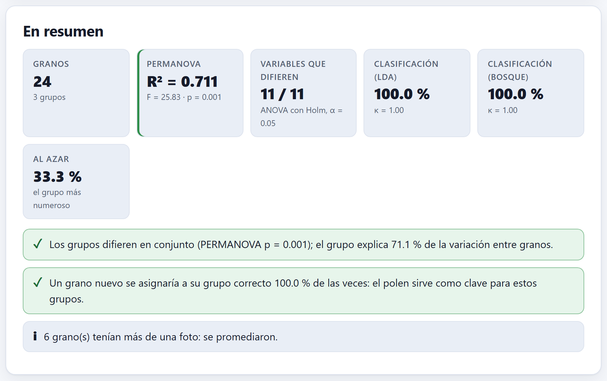
| Recuadro | Ejemplo | Qué es |
|---|---|---|
| Granos | 24 · 3 grupos | Los granos (no las fotos) que entraron al análisis y los grupos. |
| PERMANOVA | R² = 0.711 · F = 25.83 · p = 0.001 | La prueba global de la sección 6.6. El recuadro lleva una franja verde si p < 0.05. |
| Variables que difieren | 11 / 11 | Cuántas variables tienen un análisis de varianza significativo después del ajuste de Holm (α = 0.05). |
| Clasificación (LDA) | 100.0 % · κ = 1.00 | El acierto del discriminante lineal dejando fuera un grano, con la κ de Cohen. |
| Clasificación (bosque) | 100.0 % · κ = 1.00 | Lo mismo con el bosque aleatorio. |
| Al azar | 33.3 % | El acierto de quien asignara todos los granos al grupo más numeroso: la vara con que se miden los dos anteriores. Con tres grupos de 8 granos, 8 / 24. |
Debajo de los recuadros, la app escribe en palabras lo que significan. Las reglas son fijas:
Una tabla con una fila por variable: la media y la desviación estándar de cada grupo con su letra de Tukey, y las tres pruebas. Debajo, la figura de la variable que mejor separa a los grupos.
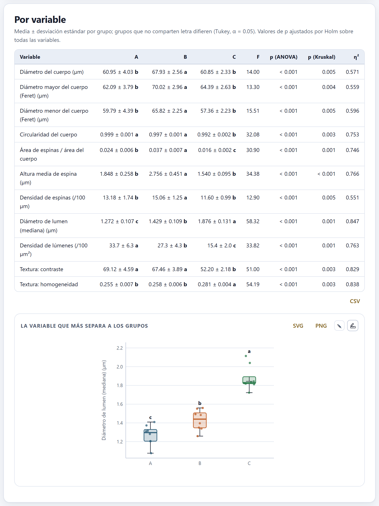
La nota de la tarjeta lo resume: «Media ± desviación estándar por grupo; grupos que no comparten letra difieren (Tukey, α = 0.05). Valores de p ajustados por Holm sobre todas las variables.». Las columnas son:
| Columna | Qué es |
|---|---|
| Variable | El nombre de la medida, con su unidad. |
| Una por grupo (A, B, C) | Media ± desviación estándar entre los granos del grupo y, en negrita, su letra. La letra a va al grupo de media más alta; dos grupos que comparten alguna letra no difieren según la prueba de Tukey (con la corrección de Tukey–Kramer si los grupos tienen distinto número de granos). |
| F | El estadístico del análisis de varianza de una vía: cuánto más varían las medias entre grupos que los granos dentro de cada grupo. |
| p (ANOVA) | El valor de p del análisis de varianza, ya ajustado por Holm sobre todas las variables; «< 0.001» si es menor. |
| p (Kruskal) | El de la prueba de Kruskal–Wallis, que compara rangos en lugar de medias y no supone normalidad; también ajustado por Holm. |
| η² | La proporción de la variación de la variable que explica el grupo (la suma de cuadrados entre grupos entre la total): un tamaño de efecto que no depende del número de granos. |
Con 11 variables y α = 0.05, si los grupos no difirieran en nada se esperaría que alguna saliera significativa sólo por azar. El ajuste de Holm (1979) corrige los valores de p entre variables: ordena las p de menor a mayor y multiplica la primera por 11, la segunda por 10, y así, sin dejar que bajen. Las letras de Tukey (1949) corrigen dentro de una variable, entre los pares de grupos. Una variable puede tener F significativa y, aun así, dos grupos con la misma letra: difieren los grupos en conjunto, pero no ese par.
Las 11 variables tienen p (ANOVA) < 0.001. Leyendo las letras se ve qué separa a quién. El morfotipo B es el más grande: Diámetro del cuerpo 67.93 ± 2.56 µm, letra a, contra 60.95 ± 4.03 (A) y 60.85 ± 2.33 µm (C), que comparten la b; también tiene las espinas más altas (2.756 ± 0.451 µm, a, contra 1.848 del A y 1.540 µm del C, que comparten la b) y más densas (15.06 ± 1.25 por 100 µm). El morfotipo C se separa por el retículo: lúmenes más grandes (1.876 ± 0.131 µm, a), menos lúmenes por superficie (15.4 ± 2.0 por 100 µm², c), una textura más homogénea y de menor contraste, y un cuerpo algo menos circular (0.992 ± 0.002, b). A y B sólo difieren en el tamaño, las espinas y el retículo, no en la textura: comparten la letra en contraste y en homogeneidad. Compáralo con lo que se dibujó (sección I.7): el B se dibuja con el cuerpo mayor y las espinas más altas, y el C con la malla más abierta.
El botón CSV descarga la tabla como palynopro_por_variable.csv, con los números sin redondear: una fila por variable, con su clave interna en variable (como corp_d) y su nombre con la unidad en nombre («Diámetro del cuerpo (µm)»), y, por grupo, las columnas A_media, A_de y A_letra; después F, p_anova_holm, H, p_kruskal_holm y eta2.
La figura de cajas de la tarjeta muestra la variable de mayor F, con cada grano como un punto, la caja del primer al tercer cuartil con la mediana, los bigotes y la letra de Tukey encima de cada grupo. Cambia sola si cambias las variables elegidas: siempre es la de mayor F entre las que entraron.
Un mapa de los granos en dos dimensiones que resume todas las variables a la vez, con flechas que dicen hacia dónde crece cada una. Sirve para ver la estructura —qué grupos se separan, cuáles se enciman, qué variables van juntas—, no para probar nada.
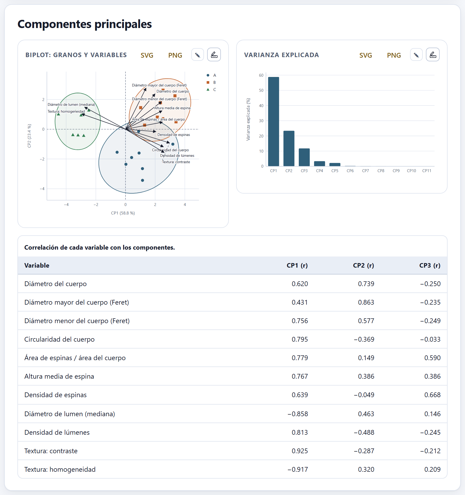
Con las variables estandarizadas, el análisis de componentes principales (Pearson 1901; Hotelling 1933) busca nuevos ejes, combinaciones de las variables originales, que no estén correlacionados entre sí: el primero (CP1) recoge la mayor variación posible, el segundo (CP2) la mayor de lo que queda, y así. La app los calcula con los valores y vectores propios de la matriz de correlación, por rotaciones de Jacobi. Hay tantos componentes como variables (11 en el ejemplo), y sus valores propios suman 11: un componente con valor propio mayor que 1 resume más que una variable sola.
Cada punto es un grano, con la forma y el color de su grupo, y cada grupo lleva su elipse del 95 %. Las flechas son las variables: su punta está en la correlación de la variable con CP1 (horizontal) y con CP2 (vertical), así que apuntan hacia donde la variable crece y su largo dice qué tan bien la representa el plano. Dos flechas juntas son variables que van de la mano; opuestas, que una sube cuando la otra baja. Los ejes llevan el porcentaje de varianza de cada componente: «CP1 (58.8 %)» y «CP2 (23.4 %)».
Cada flecha lleva el nombre de su variable, en el idioma de la interfaz (sin la unidad). En el ejemplo, las flechas del retículo y de la textura se reparten a lo largo de CP1: Textura: contraste y Densidad de lúmenes a la derecha y algo abajo, Diámetro de lumen (mediana) y Textura: homogeneidad a la izquierda, justo donde están los granos del morfotipo C. Las del tamaño (Diámetro mayor del cuerpo (Feret), Diámetro del cuerpo, Diámetro menor del cuerpo (Feret)) y la Altura media de espina suben hacia la derecha, hacia los granos del B. Los del A quedan abajo a la derecha: son los más chicos y los de lúmenes más densos.
Una barra por componente con el porcentaje de la variación total que explica. Es la gráfica de sedimentación: cuando las barras dejan de bajar de golpe, los componentes que siguen son ruido. En el ejemplo, CP1 explica 58.8 %, CP2 23.4 % y CP3 11.8 % (valores propios 6.47, 2.57 y 1.29): los tres primeros, los únicos con valor propio mayor que 1, suman casi el 94 %, y del CP6 en adelante las barras ni se ven.
Bajo las figuras, «Correlación de cada variable con los componentes.»: una fila por variable con su correlación (r) con CP1, CP2 y CP3. Una |r| cercana a 1 dice que el componente es, en buena parte, esa variable. En el ejemplo, CP1 es sobre todo la textura y el retículo (contraste 0.925, homogeneidad −0.917, diámetro de lumen −0.858, densidad de lúmenes 0.813); CP2, el tamaño (Feret mayor 0.863, diámetro del cuerpo 0.739); y CP3, las espinas (densidad de espinas 0.668, área de espinas 0.590).
El análisis de componentes no usa el grupo de cada grano: busca la variación, venga de donde venga. Si los grupos se separan en el biplot es porque la mayor variación entre granos es justamente la que hay entre grupos. Si no se separan, puede que difieran en una dirección que explica poca varianza: la PERMANOVA y el discriminante, que sí usan el grupo, lo dirán.
La prueba de si los grupos difieren en el conjunto de sus medidas, sin suponer que las variables sigan una distribución normal: la respuesta global y, con más de dos grupos, par por par.
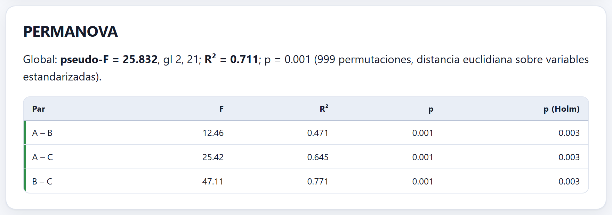
La PERMANOVA (Anderson 2001; McArdle y Anderson 2001) es un análisis de varianza hecho con distancias. La app calcula la distancia euclidiana entre cada par de granos sobre las variables estandarizadas, reparte la suma de las distancias al cuadrado en la parte entre grupos y la parte dentro de los grupos, y forma un seudo-F como en un análisis de varianza. Para saber si ese seudo-F es grande, baraja los grupos entre los granos tantas veces como diga Permutaciones y cuenta en cuántas el seudo-F barajado iguala o supera al observado: p = (esas veces + 1) / (permutaciones + 1). La R² es la parte de la variación entre granos que explica el grupo.
El renglón Global da el seudo-F, sus grados de libertad (número de grupos − 1 y número de granos − número de grupos), la R², el valor de p, el número de permutaciones y la distancia usada. En el ejemplo: «pseudo-F = 25.832, gl 2, 21; R² = 0.711; p = 0.001 (999 permutaciones, distancia euclidiana sobre variables estandarizadas)». El p de 0.001 es el más pequeño que se puede obtener con 999 permutaciones: ninguna barajada igualó al observado. Para afirmar un p menor hay que aumentar las permutaciones.
La tabla por pares repite la prueba con cada par de grupos —Par, F, R², p— y añade p (Holm), ajustada por el número de pares. Los pares con p de Holm menor que 0.05 llevan una franja verde a la izquierda. Con sólo dos grupos no hay tabla de pares: la global ya es la comparación.
La PERMANOVA puede salir significativa porque los grupos están en sitios distintos del espacio de las variables o porque uno está mucho más disperso que otro. Mira el biplot y las elipses: si un grupo tiene una elipse mucho mayor que los demás y los centros casi coinciden, la diferencia es de dispersión, no de forma media. En el ejemplo los centros están claramente separados.
La última tarjeta contesta la pregunta práctica: si te dan un grano suelto, ¿podrías decir de qué grupo es sólo por sus medidas? Para eso ajusta dos clasificadores y mide su acierto con granos que no vieron.
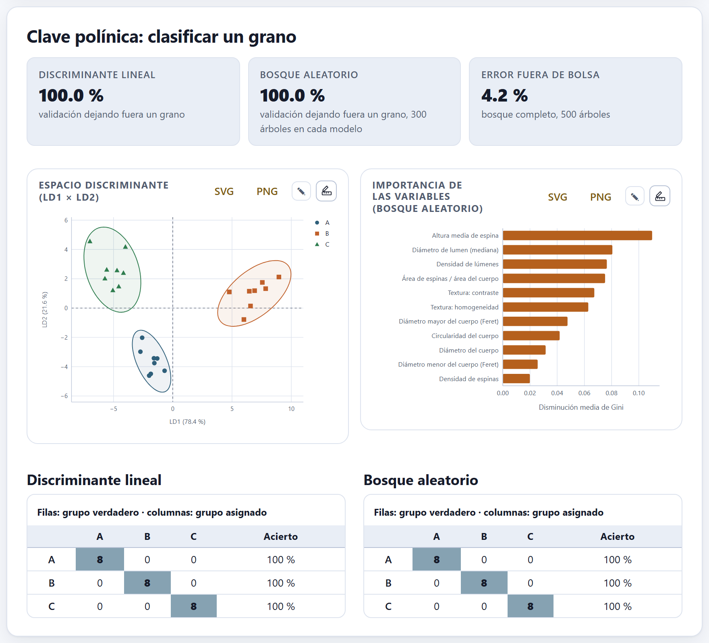
El análisis discriminante lineal (Fisher 1936) busca las combinaciones de variables que mejor separan a los grupos, suponiendo que todos tienen la misma matriz de covarianza, y asigna un grano al grupo de mayor probabilidad posterior, con probabilidades previas iguales a la frecuencia de cada grupo. El bosque aleatorio (Breiman 2001) junta cientos de árboles de decisión, cada uno ajustado con una muestra con reemplazo de los granos y, en cada corte, con √p variables al azar (3 de 11 en el ejemplo); cada árbol vota y gana el grupo más votado. El discriminante funciona mejor cuando los grupos son nubes elípticas parecidas; el bosque no supone forma alguna, pero necesita más granos. La validación dejando fuera un grano saca un grano —con todas sus fotos—, ajusta el modelo con los demás (estandarizando también sin él), lo clasifica y repite con cada grano. Lo que se obtiene es el acierto esperado con un grano nuevo; la κ de Cohen (1960) descuenta el acierto que se tendría por azar: 1 es concordancia perfecta y 0, la del azar.
Los granos en los dos primeros ejes discriminantes, con la elipse del 95 % de cada grupo. Cada eje lleva el porcentaje de la separación entre grupos que recoge: «LD1 (78.4 %)» y «LD2 (21.6 %)» en el ejemplo. A diferencia del biplot, estos ejes se eligen para separar a los grupos, así que la figura muestra la mejor separación posible con combinaciones lineales; con tres grupos hay dos ejes. Los granos se dibujan con el modelo ajustado a todos los granos; el acierto de los recuadros, en cambio, sale de la validación. Con dos grupos hay un solo eje, y en lugar de la figura la app dice «Con dos grupos hay un solo eje discriminante.».
Una barra por variable con la disminución media de Gini: cuánto ayuda, en promedio, cada variable a hacer más puros los cortes de los árboles del bosque completo. Las barras van acostadas, con el nombre de cada variable a la izquierda, de la más importante arriba a la menos importante abajo. En el ejemplo la más importante es la Altura media de espina (0.110), seguida del Diámetro de lumen (mediana) (0.081), la Densidad de lúmenes (0.077) y el Área de espinas / área del cuerpo (0.075); la menos, la Densidad de espinas (0.020). La importancia dice qué usa el bosque, no qué variable difiere más: dos variables muy correlacionadas se reparten la importancia.
Una por clasificador, Discriminante lineal y Bosque aleatorio, con la leyenda «Filas: grupo verdadero · columnas: grupo asignado». La diagonal son los aciertos, sombreada con el color principal; fuera de ella, los errores, en el de acento. La última columna, Acierto, es el porcentaje de granos de cada grupo bien asignados. En el ejemplo, las dos matrices tienen 8, 8 y 8 en la diagonal y ceros fuera de ella (Acierto 100 % en cada grupo). Cuando un clasificador se equivoque con tus datos, mira entre qué grupos caen los errores y compáralo con la PERMANOVA por pares: lo esperable es que se confundan los pares más parecidos (en el ejemplo, A–B).
Con las 11 variables por omisión, la PERMANOVA dice que los morfotipos difieren en conjunto (R² = 0.711, p = 0.001) y por pares; el discriminante y el bosque clasifican bien el 100 % de los granos que no vieron (κ = 1.00 en los dos), contra 33.3 % al azar, y el error fuera de bolsa del bosque es de 4.2 %. La app concluye que «el polen sirve como clave para estos grupos». Para un manuscrito escribirías: «Los tres morfotipos difirieron en su morfología polínica (PERMANOVA: pseudo-F = 25.83, R² = 0.71, p = 0.001); en validación cruzada dejando fuera un grano, todos los granos se asignaron a su morfotipo, tanto por análisis discriminante lineal como por bosque aleatorio (κ = 1.00).». Recuerda que son datos simulados: el ejemplo se dibujó para que los grupos se distinguieran.
La app trata cada grano como independiente. Si tus granos vienen de pocas plantas, los granos de una misma planta se parecen entre sí más que a los de otra, y las pruebas sobrestiman la evidencia de la misma manera que lo harían las fotos repetidas. Si puedes, fotografía granos de varias plantas por grupo y comprueba, con la tabla de medidas por foto del Bloque 3, que la variación entre plantas no domina. La app no modela ese segundo nivel.
| Si la PERMANOVA da p < 0.05 y la clasificación es de 80 % o más… | los grupos se distinguen por su polen y un grano basta para reconocerlos: el polen es una buena clave para ellos. |
| Si la PERMANOVA da p < 0.05 pero la clasificación queda por debajo de 80 %… | los grupos difieren en promedio, pero se traslapan: el polen sirve para caracterizarlos, no para identificar un grano suelto. Mira en la matriz de confusión qué pares se confunden. |
| Si la PERMANOVA no es significativa… | con estas variables y estos granos no hay evidencia de diferencia. Antes de concluir que no difieren, revisa cuántos granos tiene cada grupo. |
| Si la PERMANOVA da p = 0.001 con 999 permutaciones… | informa «p ≤ 0.001»; para un valor más fino, aumenta las permutaciones. |
| Si una variable tiene F significativa y dos grupos comparten letra… | esa variable separa a algunos grupos, no a ese par. |
| Si el discriminante y el bosque dan aciertos muy distintos… | con pocos granos, confía más en el que tenga mayor κ y en el error fuera de bolsa; con grupos de forma muy irregular, en el bosque. |
Son guías para interpretar, no leyes: el diseño del muestreo —cuántas plantas, cuántas flores, cuántos granos por planta— pesa más que cualquier valor de p.
El botón Comparar los grupos está apagado y dice «Primero mide los granos en el Bloque 3.»: no hay mediciones; ve al Bloque 3 y pulsa Medir todas las fotos de un grano. «Elige al menos dos variables.» Marca dos o más casillas. «Hacen falta al menos dos grupos con tres granos o más.» Tras promediar por grano y quitar las fotos de contorno cortado quedan menos de dos grupos con tres granos; revisa en el Bloque 2 que el grupo y el grano se leyeron bien (un patrón de nombre equivocado puede juntar todos los granos en un grupo o darles a todos el mismo número de grano). Un grupo no aparece. Tenía menos de tres granos y la app lo dice en un veredicto. «… sin valor en alguna variable elegida: quedaron fuera». A esos granos les falta alguna de las variables marcadas (por ejemplo, un grano sin lúmenes medidos); desmarca esa variable o revisa la foto en el Bloque 4. Los resultados desaparecieron. Volviste a medir o cambiaste la calibración, un grupo o una exclusión: el bloque se vacía para no mostrar resultados viejos; vuelve a comparar. Al abrir un proyecto no hay resultados. El proyecto guarda las mediciones y los ajustes, no la comparación, y la app lo recuerda al abrirlo: pulsa otra vez Comparar los grupos y saldrá igual, porque la semilla también se guarda.
El final del recorrido: lo que se lleva a la tesis, al artículo o al cuaderno de laboratorio. El bloque arma en un solo documento el material, los métodos redactados con los parámetros que usaste y sus citas, los cuadros, todas las figuras, un grano medido de cada grupo, las limitaciones y las referencias. Este capítulo explica también las figuras —sus descargas, el estudio y el editor ✎— y cómo guardar el proyecto para retomarlo.
El Bloque 7 tiene dos tarjetas: Datos del informe, con los campos y los botones, y Vista previa, que aparece cuando generas el informe. Bajo el título, la app lo resume: «Métodos, resultados, figuras y galería en un documento para imprimir o guardar en PDF.». Nada se calcula aquí por primera vez: el informe toma lo que ya calcularon los bloques 2 a 6, con los ajustes que dejaste en cada uno. Las capturas de este capítulo se hicieron con el ejemplo simulado medido, contado y comparado, con el título «Morfometría polínica del ejemplo simulado».
Cuatro campos de texto para la portada del informe, el idioma en que se escribe y una lista que dice qué partes del estudio ya están calculadas.
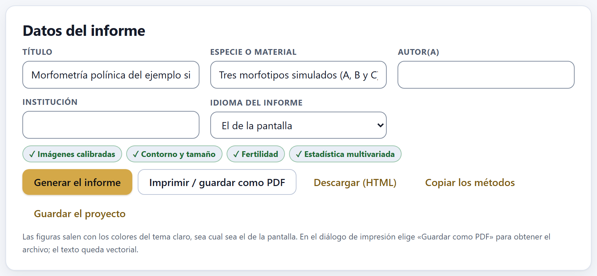
| Campo | Qué lleva |
|---|---|
| Título | El título del informe. Vacío, muestra como guía «Morfometría polínica de …», y el informe sale con «Morfometría polínica cuantitativa». También da nombre a los archivos que descargas. |
| Especie o material | Lo que se estudió; en la portada del informe aparece como «Material». |
| Autor(a) | Quien hizo el estudio. |
| Institución | El laboratorio o la institución. |
| Idioma del informe | El de la pantalla (al abrir), Español o English. Cambia el idioma del informe y de los métodos que se copian, no el de la interfaz. |
Los cuatro textos y el idioma del informe se guardan en el proyecto y vuelven a sus campos al abrirlo; los textos que dejes vacíos no aparecen en la portada. Sin proyecto, cada vez que abres la app el idioma empieza en El de la pantalla.
Debajo, cuatro insignias dicen qué hay: Imágenes calibradas (Bloque 2), Contorno y tamaño (Bloque 3), Fertilidad (Bloque 5) y Estadística multivariada (Bloque 6). Cada una lleva una palomita verde si su parte está calculada, o un punto si no. Si falta alguna, la app añade: «Lo que falta aparece en el informe como «sin calcular»; puedes generarlo igual.». Es lo normal cuando el estudio no tiene panorámicas: el informe sale sin fertilidad.
Cinco botones: uno arma el informe, tres lo sacan de la app y el último guarda el proyecto.
| Botón | Qué hace |
|---|---|
| Generar el informe | Arma el documento con lo que haya en ese momento (la espera «Armando el informe» pasa por Galería y Figuras) y lo muestra en la Vista previa. Sin imágenes abiertas avisa «Primero abre tus imágenes.». Al generarlo, el bloque se marca como hecho en la barra de bloques. |
| Imprimir / guardar como PDF | Abre el diálogo de impresión del navegador con el informe solo, sin la interfaz. Para un PDF, elige Guardar como PDF como destino: el texto queda vectorial y se puede buscar y copiar. La hoja es A4, con márgenes de 16 mm arriba y abajo y 15 mm a los lados. |
| Descargar (HTML) | Guarda el informe como una página que se abre sin conexión en cualquier navegador, con las figuras y las fotos de la galería dentro. Se llama como el título, sin acentos y con guiones bajos: Morfometria_polinica_del_ejemplo_simulado.html en el ejemplo, o palynopro_informe.html sin título. |
| Copiar los métodos | Deja en el portapapeles el texto de los métodos (sección 7.3), sin formato y con un renglón en blanco entre párrafos, listo para pegarse en un manuscrito; la app confirma «Métodos copiados». |
| Guardar el proyecto | Lo mismo que Ctrl + S (sección 7.5). Es el único botón que funciona antes de generar el informe. |
Los tres botones de salida están apagados hasta que generas el informe. Bajo los botones, una nota recuerda dos cosas: «Las figuras salen con los colores del tema claro, sea cual sea el de la pantalla. En el diálogo de impresión elige «Guardar como PDF» para obtener el archivo; el texto queda vectorial.».
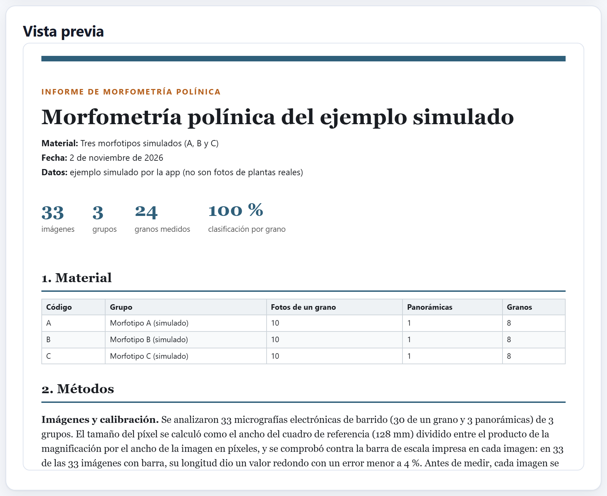
La vista previa es una fotografía del estudio en el momento en que pulsaste Generar el informe. Si después cambias un título, un grupo, una variable del Bloque 6 o vuelves a medir, el informe que ves —y el que imprimes o descargas— sigue siendo el anterior. Vuelve a pulsar Generar el informe antes de imprimir.
Una portada y nueve secciones numeradas, siempre en el mismo orden. Lo que no está calculado aparece como «Sin calcular.»; nada se inventa.
Arriba, el rótulo «Informe de morfometría polínica» y el título. Debajo, el material, el autor y la institución si los escribiste, la fecha del día y, si el estudio es el ejemplo, la nota de datos simulados. Cierran la portada cuatro cifras: las imágenes analizadas, los grupos, los granos medidos y, si hay estadística, el acierto de la clasificación por grano (el mejor de los dos clasificadores, sin decimales). En el ejemplo: 33 imágenes, 3 grupos, 24 granos medidos y 100 %.
| Sección | Qué lleva |
|---|---|
| 1. Material | Una fila por grupo: Código, Grupo (el nombre de la tarjeta Grupos del Bloque 2), Fotos de un grano, Panorámicas y Granos. En el ejemplo, cada morfotipo tiene 10 fotos de un grano (8 granos, dos de ellos fotografiados dos veces) y 1 panorámica. |
| 2. Métodos | Los párrafos redactados con los parámetros usados (abajo). |
| 3. Tamaño y ornamentación por grupo | Media ± desviación estándar entre granos de diez variables fijas: diámetro del cuerpo, Feret mayor y menor, elongación, circularidad, espinas en el contorno, altura media de espina, densidad de espinas, diámetro de lumen y densidad de lúmenes, con el número de granos de cada grupo. |
| 4. Comparación entre grupos | La tabla del Bloque 6 con las variables elegidas allí (media ± desviación con su letra de Tukey, F y p ajustada por Holm) y un párrafo con la PERMANOVA y los dos clasificadores, con κ y el acierto al azar. |
| 5. Fertilidad | Por grupo: panorámicas, granos contados, colapsados, porcentaje e intervalo de Wilson del 95 %, y la prueba χ². |
| 6. Figuras | Todas las figuras de los bloques 3 a 6, numeradas, en dos columnas (las anchas ocupan las dos), en vector y con los colores del tema claro. Con el ejemplo son 14. |
| 7. Granos medidos, uno por grupo | Una foto de cada grupo con el contorno con espinas, el cuerpo y las puntas de espina dibujados encima, su nombre y su diámetro del cuerpo. |
| 8. Limitaciones | Cinco advertencias fijas sobre lo que el método no puede decir. |
| 9. Referencias | Las 22 obras de los métodos y la cita del programa, en orden alfabético. |
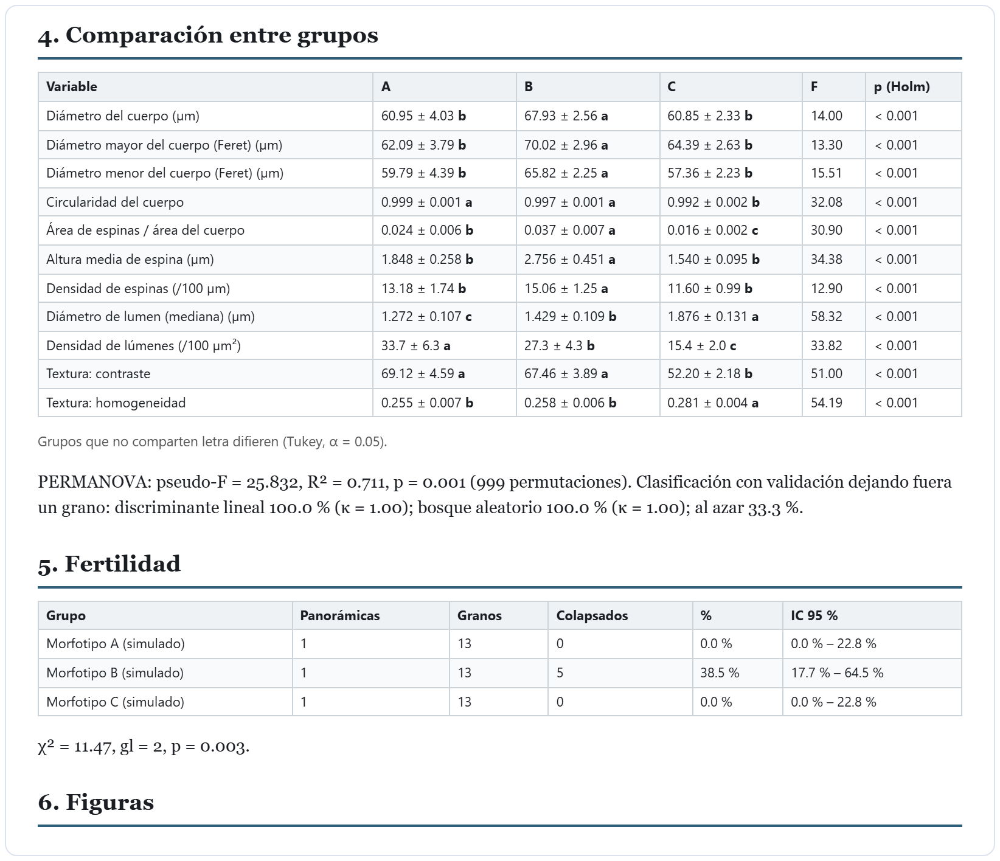
La sección 2 es lo más útil del informe: un borrador de métodos que escribe lo que de verdad se hizo, con los números que usaste y cada método citado a su fuente. Tiene hasta seis párrafos:
La app escribe cómo se midió, no lo que no sabe: de dónde vino el material, cuántas plantas y flores se muestrearon, cómo se prepararon los granos (acetólisis, deshidratación, metalizado), qué microscopio, a qué voltaje y con qué detector. Añade eso, quita lo que no vayas a informar y ajusta la redacción a la revista. Informa también la limitación de la altura de espina que trae la sección 8 (abajo): es parte del método.
La galería toma, de cada grupo, la primera foto de un grano incluida, medida, sin avisos (ni contorno cortado ni ampliada) y abierta en la sesión, y la dibuja con el contorno con espinas, el cuerpo y las puntas de espina, como en la revisión del Bloque 3. En el ejemplo son 01_A.png (cuerpo 59.6 µm), 01_B.png (72.0 µm) y 01_C.png (64.2 µm). Si abriste un proyecto y no volviste a abrir la carpeta de las fotos, en su lugar dice «Las imágenes no están abiertas en esta sesión.».
Las limitaciones son fijas, porque son del método y no de tus datos: el cuerpo y las espinas se miden sobre la silueta en dos dimensiones; los Feret equivalen a los ejes polar y ecuatorial sólo en vista ecuatorial; la altura de espina, medida de la punta a la cuerda que une sus dos pies, sale menor en cerca de un píxel, porque la punta más fina del cono no llena un píxel (con granos simulados a 0.1 µm por píxel, de 3 a 6 %, mediana 4 %, y más en espinas cortas o que se tocan en la base); la fertilidad por solidez es una aproximación morfológica, no una prueba de viabilidad; y las imágenes ampliadas al píxel común dan medidas finas menos fiables.
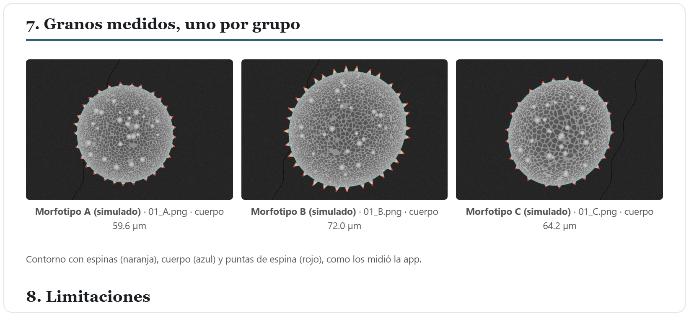
Cada figura de los bloques 3 a 6 tiene en su cabecera las mismas cuatro herramientas: dos descargas rápidas y dos maneras de editarla.
Los botones SVG y PNG guardan archivos que se llaman como el título de la figura, sin acentos y con guiones bajos (Biplot_granos_y_variables.svg), y salen con los colores del tema claro aunque trabajes en el oscuro: los colores, las líneas y las letras se escriben dentro del archivo, que no depende de la app para verse. Lo que hayas cambiado con el editor ✎ también va dentro, porque el editor escribe sobre la figura misma.
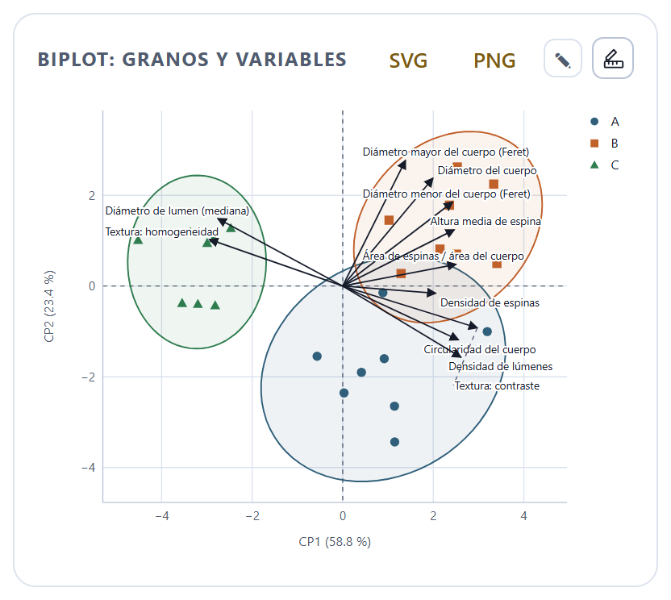
1 2 3 4El botón de la regla y el lápiz abre el estudio de figuras, el mismo en todas las aplicaciones de la suite. También se llega a él desde la búsqueda (Ctrl + K): las figuras aparecen entre los resultados y se abren directamente en el estudio, o desde el índice En este bloque, con el botón que acompaña a las secciones que tienen figuras.
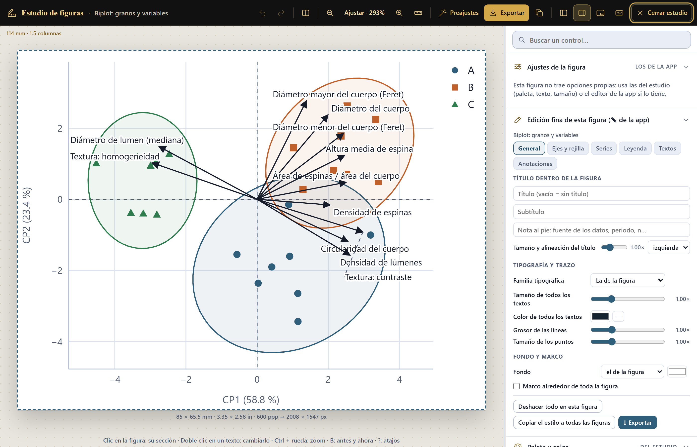
La barra de arriba deshace y rehace, compara el antes y el ahora con una cortina, acerca y aleja la figura (Ajustar la deja del tamaño de la pantalla, con el porcentaje de acercamiento), la muestra a tamaño real, aplica Preajustes de un clic (y guarda los tuyos), copia la imagen al portapapeles y, con Exportar, la descarga al ancho de una columna, de columna y media, de dos columnas o a uno libre, en milímetros o pulgadas, a 300, 600 o 1200 ppp, en PNG, SVG, PDF vectorial o TIFF, con fondo blanco o transparente. Los botones de la derecha cambian el lugar del inspector (a la derecha, a la izquierda o flotante) y muestran los atajos; Cerrar estudio regresa a la app con la figura donde estaba.
El inspector reúne, en secciones plegables, Ajustes de la figura (las figuras de PalynoPro no traen opciones propias, y el estudio lo dice), Edición fina de esta figura (✎ de la app), que es el editor de abajo acoplado, y las herramientas propias del estudio: paletas científicas con simulación de daltonismo, el tamaño del texto y el grosor de las líneas pensados para el tamaño de salida y la leyenda (dentro de la gráfica en ocho lugares, fuera, debajo u oculta; también se arrastra). Buscar un control… encuentra cualquier ajuste por su nombre. Un doble clic sobre un texto de la figura lo deja cambiar ahí mismo. El estudio recuerda sus ajustes en este navegador.
El botón ✎ abre, sin salir de la página, un panel flotante que trabaja sobre esa figura, con el título «Editar esta figura» y el nombre de la figura. Tiene seis pestañas:
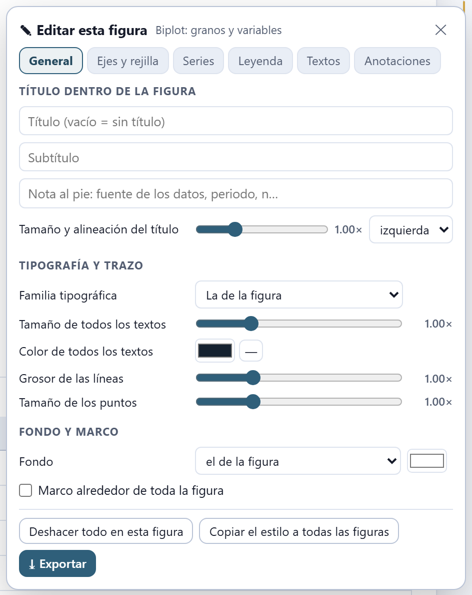
Al pie del panel, Deshacer todo en esta figura, Copiar el estilo a todas las figuras y Exportar. Las ediciones se guardan figura por figura en este navegador, no en el proyecto, y se vuelven a poner cada vez que la figura se redibuja —al recalcular, al cambiar el idioma o el tema—: los textos se reconocen por su redacción original y los colores por su valor original. Si abres el proyecto en otra computadora, las figuras salen sin tus ediciones.
Las figuras usan las letras instaladas en tu computadora; la app no descarga ninguna. Un SVG que mandes a otra persona puede verse con otra letra parecida en su equipo. Para que se vea igual en todas partes, exporta en PDF vectorial o en PNG desde el estudio.
El proyecto es un archivo .json pequeño con todo lo necesario para volver a ver los resultados y repetir el análisis, excepto las fotos.
Se guarda con Ctrl + S desde cualquier bloque o con Guardar el proyecto del Bloque 7. El archivo se llama como el título del informe seguido de .palynopro.json (proyecto.palynopro.json si no hay título); la app confirma «Proyecto guardado:» con el nombre y recuerda que no lleva los resultados del Bloque 6 ni las ediciones ✎. Se abre con Ctrl + O o con Abrir un proyecto de la portada; la app confirma «Proyecto abierto:», recuerda que hay que repetir «Comparar los grupos» y te lleva al Bloque 2.
| Se guarda | No se guarda |
|---|---|
| Los datos del informe (título, material, autor, institución) y su idioma | Las fotos: sólo su nombre y una miniatura |
| Todos los ajustes de los bloques 2 a 6, con las variables elegidas y la semilla (los del Bloque 6 se ven en sus campos al abrir) | La comparación del Bloque 6: se repite igual con Comparar los grupos |
| La lista de imágenes con su grupo y su grano (y si venían del índice o se escribieron en la tabla), su magnificación, su calibración (con la sustitución de un píxel contradicho), su barra, su tipo, sus notas y sus exclusiones; los nombres de los grupos | El informe: se vuelve a generar |
| Las mediciones de cada foto (Bloques 3 y 4) y el conteo de las panorámicas (Bloque 5) | Las ediciones del editor ✎ (quedan en el navegador) |
Al abrir un proyecto vuelven las tablas y las figuras de los bloques 2 a 5. Para ver otra vez las fotos, revisarlas sobre la imagen o tener la galería del informe, abre en el Bloque 2 la misma carpeta: la app une cada foto a su renglón por su nombre y conserva sus grupos, su calibración, sus exclusiones y sus resultados («… del proyecto vueltas a abrir»). Sólo si la carpeta trae imágenes que no estaban en el conjunto, pregunta antes, porque añadirlas borra los resultados y hay que volver a medir, contar y comparar (apéndice D). Sin abrir la carpeta puedes consultar las tablas y las figuras; los visores dirán «Abre otra vez la carpeta para ver la foto.». Con el ejemplo simulado, que la app dibuja, las fotos vuelven solas.
La app no guarda nada por su cuenta: cada vez que se abre empieza vacía. Si intentas cerrar la pestaña con imágenes abiertas, el navegador te pide confirmar. Guarda el proyecto al terminar cada sesión y, junto con él, la carpeta de las fotos tal como estaba: si cambias el nombre de una foto, el proyecto ya no la encuentra.
| Si cambiaste algo después de generar el informe… | vuelve a pulsar Generar el informe antes de imprimir o descargar. |
| Si usas los métodos redactados… | completa el material, el muestreo, la preparación y el equipo, que la app no conoce. |
| Si la revista pide un ancho y una resolución de figura… | exporta desde el estudio a ese ancho (una columna, columna y media, dos) y a 300 o 600 ppp, o en PDF vectorial. |
| Si el informe va en otro idioma… | elige English o Español en Idioma del informe y genéralo otra vez; para que las figuras también cambien de idioma, cambia el de la interfaz (ES · EN). |
| Siempre… | guarda el proyecto junto con la carpeta de las fotos: es la prueba de cómo se obtuvo cada número. |
Son guías para entregar, no leyes: las instrucciones de la revista o de tu programa de posgrado mandan.
«Primero abre tus imágenes.» No hay imágenes: abre una carpeta o el ejemplo en el Bloque 2. Una sección dice «Sin calcular.». Falta su bloque: mide (Bloque 3), cuenta (Bloque 5) o compara (Bloque 6), y genera otra vez. La sección 6 dice «Aún no hay figuras.». Ningún bloque ha dibujado todavía una figura. La galería dice «Las imágenes no están abiertas en esta sesión.». Abriste un proyecto: abre otra vez la carpeta de las fotos en el Bloque 2. Falta el grano de un grupo en la galería. Todas sus fotos tienen algún aviso (contorno cortado o ampliada) o están excluidas. No se copian los métodos. El navegador no dejó usar el portapapeles (pasa en algunos navegadores al abrir la app con doble clic); descarga el informe en HTML y copia de ahí. Las figuras del informe salen en inglés aunque el informe esté en español. Las figuras se toman tal como están en pantalla: cambia el idioma de la interfaz y genera otra vez. «No se pudo abrir el proyecto: El archivo no es un proyecto de PalynoPro.» El JSON es de otra app o no es un proyecto.
Lo que conviene tener a la mano y no cabía en ningún capítulo: qué archivos lee y escribe la app y cómo los lee, las reglas de los siete bloques reunidas en un solo lugar, el vocabulario de la palinología y de la estadística que usa el manual, qué hacer cuando algo no sale, la licencia de la herramienta con la manera de citarla y las 22 referencias de la app.
PalynoPro corre en el navegador y no envía nada a ningún servidor: los archivos entran desde tu computadora y lo que la app escribe sale a tu carpeta de descargas. Las fotos nunca se copian: la app guarda una referencia a cada una mientras la pestaña está abierta.
Todo entra por el Bloque 2 —Elegir una carpeta, Elegir archivos o arrastrando a la zona Arrastra aquí una carpeta o tus imágenes—, salvo el proyecto. La app reconoce cada archivo por su extensión y su contenido; no hace falta decirle qué es cada uno.
| Qué | Extensión | Cómo lo lee |
|---|---|---|
| Micrografías | .tif .tiff .png .jpg .jpeg .bmp .webp .gif | Cada imagen se pasa a un solo canal de grises (0 = negro); las de color se convierten con los pesos 0.299, 0.587 y 0.114. El TIFF lo lee un lector propio (abajo); los demás formatos, el navegador. |
| Archivo del microscopio | .txt con el mismo nombre que la imagen | De él se leen la magnificación, el tamaño del píxel si viene, el voltaje, la distancia de trabajo, la fecha y el equipo (abajo). El texto que algunos equipos escriben dentro del propio TIFF se lee igual si no hay .txt. |
| Índice | .csv, .tsv o .txt con encabezado | Una fila por imagen; las columnas se buscan por nombre (abajo). Se toma el primero que tenga la columna del archivo y al menos una fila. |
| Clave de grupos | .txt o .csv | Líneas código = nombre o código: nombre (abajo). |
| Proyecto | .json | Abrir un proyecto de la portada o Ctrl + O. Sólo un archivo escrito por la app, con "app": "PalynoPro"; cualquier otro se rechaza. Reemplaza lo que hubiera abierto (capítulo 7.5). |
El lector acepta TIFF en tiras o en mosaicos; sin compresión, con LZW (con o sin predictor horizontal), PackBits o Deflate; de 1, 8, 16 o 32 bits; en grises, con paleta o en color. No acepta los TIFF con los canales en planos separados ni otras compresiones (JPEG dentro del TIFF, por ejemplo): esas fotos se reportan como no leídas. Las imágenes de 16 bits se llevan a 8 para analizarse.
La app reconoce estas formas de escribir los datos, en el .txt o dentro del TIFF:
| Renglón | Qué se lee |
|---|---|
$CM_MAG 1000 | La magnificación. Con esta familia de archivos también $CM_ACCEL_VOLT (voltaje), $$SM_WD (distancia de trabajo), $CM_DATE (fecha), $CM_INSTRUMENT (equipo) y, si vienen juntos, $$SM_MICRON_MARKER 10um y $$SM_MICRON_BAR 128, de los que sale el tamaño del píxel (la barra en µm entre su largo en píxeles). |
PixelWidth=1.0e-007 | El tamaño del píxel, en metros. |
Image Pixel Size = 100 nm | El tamaño del píxel, en pm, nm, µm o mm. |
PixelSize=100 | El tamaño del píxel, en nm (al principio del renglón). |
Magnification=1000 · Mag: x1000 | La magnificación, si no se leyó antes. |
AcceleratingVoltage= · HV= · EHT= | El voltaje, en kV (o en V si lo dice). |
Si el archivo no trae nada de esto, la magnificación se escribe a mano en la tabla del Bloque 2 o se da en el índice.
El primer renglón es el encabezado. El separador se adivina con él: punto y coma si tiene más puntos y comas que comas; si no, tabulador si tiene alguno; si no, coma. Los campos entre comillas se respetan, la marca de orden de bytes del principio se ignora y los renglones vacíos se saltan. Los encabezados se comparan sin mayúsculas, acentos ni signos (Magnificación y magnificacion son lo mismo). Cada columna se reconoce por cualquiera de estos nombres:
| Columna | Encabezados que la nombran |
|---|---|
| Archivo (obligatoria) | archivo, file, filename, imagen, image, base_id, id, foto |
| Grupo | grupo, group, morfotipo, landrace_code, taxon, especie, species, codigo, code, clase, class |
| Nombre del grupo | nombre, name, landrace_name, nombre_grupo, group_name |
| Grano | grano, grain, unidad, unit, specimen, ejemplar |
| Magnificación | magnificacion, magnification, mag, aumento, aumentos |
| Tamaño del píxel | um_por_px, um_per_px, micras_por_pixel, pixel_size_um, umpx (en µm) |
| Excluir | excluir, exclude, excluded, descartar; cuenta como sí: 1, si, yes, true, x, excluir, exclude |
| Nota | nota, note, notas, notes, comentario |
| Tipo | nivel, tier, tipo, kind; en español o en inglés: un valor con «pano», «over», «campo» o «field» es panorámica, con «det» detalle, y cualquier otro (un grano, one grain…) un grano |
Cada fila se une a su imagen por el nombre del archivo, con o sin extensión. Lo que trae el índice manda sobre lo que se lee del nombre (grupo y grano), también si después cambias el patrón del nombre (B.1); la magnificación del índice sólo se usa si el archivo del microscopio no la daba, y un tamaño de píxel del índice pasa por delante de la magnificación (B.1). Los decimales pueden llevar punto o coma (0,1), pero con coma decimal separa las columnas con punto y coma o tabulador. El índice que descarga el propio Bloque 2 vuelve a entrar completo:
archivo;grupo;nombre;grano;magnificacion;excluir;nota 01_G1.tif;G1;Grupo uno;01;1000;; 02_G1.tif;G1;Grupo uno;02;1000;1;grano roto 90_G1.tif;G1;Grupo uno;90;150;;panorámica
Un archivo de texto con un renglón por grupo, A = Morfotipo A, G1 = Grupo uno o G1: Grupo uno. El código es una sola palabra de letras y cifras, de 1 a 8 caracteres, que puede llevar guiones (- o _) por dentro: A, G1, M12, P3b, Lin-2. Un grupo que no esté en la clave se nombra a mano en la tarjeta Grupos del Bloque 2 o con la columna del nombre en el índice.
Sin índice, el grupo y el grano salen del nombre del archivo con el Patrón del nombre (grupo y grano) del Bloque 2, una expresión regular con dos partes con nombre: (?<grain>…) y (?<group>…). La de omisión, ^(?<grain>\d+)[A-Za-z]*_(?<group>[A-Za-z]+\d*), lee 07a_G1.tif como grano 07 del grupo G1: las letras tras el número del grano marcan una foto repetida del mismo grano. Si el patrón no tiene nombres, se usan el primer y el segundo paréntesis como grano y grupo.
| Bloque | Archivo | Qué contiene |
|---|---|---|
| todos | <título>.palynopro.json (Ctrl + S) | El proyecto: datos del informe y su idioma (reportLang), ajustes, lista de imágenes con su calibración (con la barra redondeada, nice, y la marca de un píxel sustituido, replaced), de dónde vinieron su grupo y su grano (groupFrom, grainFrom: del índice o de la tabla) y sus exclusiones, mediciones y conteo de panorámicas (tabla 7.2). No lleva los resultados del Bloque 6. Sin título, proyecto.palynopro.json. |
| 2 | palynopro_indice.csv | Una fila por imagen: archivo, grupo, nombre, grano, magnificacion, ancho_px, um_por_px, fuente, barra_px, barra_um, nivel, excluir, nota. La fuente (a mano, índice, del equipo, magnificación, sin calibrar) y el nivel (un grano, panorámica, detalle) van en el idioma de la interfaz. Se puede volver a abrir como índice, en cualquiera de los dos idiomas. |
| 3 | palynopro_tamano_por_grupo.csv | Por grupo: grupo, nombre, n_granos y, de cada medida del contorno, su media y su desviación (corp_d_media, corp_d_de…). |
| 3 | palynopro_medidas_por_foto.csv | Por foto: foto, grupo, grano, usable (0 si tiene el contorno cortado) y las 19 medidas con su clave interna. |
| 4 | palynopro_ornamentacion_por_grupo.csv | Por grupo: las medias y desviaciones de las espinas, los lúmenes y la textura. |
| 5 | palynopro_fertilidad.csv | Por grupo: panoramicas, granos, colapsados, proporcion, ic_inf, ic_sup (intervalo de Wilson), diametro_media y diametro_de. |
| 6 | palynopro_por_variable.csv | Por variable: variable (la clave interna), nombre (con su unidad), medias, desviaciones y letras de cada grupo, F, p_anova_holm, H, p_kruskal_holm y eta2. |
| 7 | <título>.html | El informe (sección 7.3), con las figuras y la galería dentro. Sin título, palynopro_informe.html. |
| cualquiera | <título de la figura>.svg · .png | Cada figura, con los colores del tema claro; el PNG al triple de su tamaño. El estudio exporta además PDF y TIFF al tamaño y la resolución que pidas. |
Los nombres que salen de un título se escriben sin acentos y con guiones bajos (Morfometria_polinica_del_ejemplo_simulado.html). Todos los CSV usan la coma como separador y el punto decimal, con los números sin redondear, y van en UTF-8 con marca de orden de bytes para que una hoja de cálculo lea los acentos y la µ. Las medidas van con su clave interna (corp_d, sp_h, lum_d…), que no cambia con el idioma; el CSV por variable del Bloque 6 trae además el nombre de cada una.
El navegador guarda sólo preferencias, no datos: el idioma de la interfaz, el tema claro u oscuro, las animaciones, los ajustes del estudio de figuras y las ediciones hechas con el editor ✎. Para conservar un estudio, guarda el proyecto.
Las reglas que la app aplica para calibrar, medir, clasificar, avisar o decidir, con el bloque donde actúan y sus valores por omisión. Son las mismas que explica cada capítulo; aquí están juntas para consultarlas de un vistazo.
| Tamaño del píxel | µm/px = ancho del cuadro de referencia (128 mm = 128 000 µm) ÷ (magnificación × ancho de la imagen en píxeles). Con 1000× y 1280 px, 0.1 µm/px; con 150× y 1280 px, 0.6667 µm/px. |
| Orden de las fuentes | De la más fuerte a la más débil: la barra medida a mano → el tamaño del píxel del índice → el que escribió el equipo → la magnificación con el ancho de referencia → ninguna (la foto queda sin calibrar y fuera de las comparaciones). |
| La barra de escala | Se busca en el 20 % inferior de la foto: un rectángulo de píxeles muy claros (gris ≥ 235 de 255) de entre 2 % y 45 % del ancho de la imagen, repetido con el mismo inicio y largo (± 2 px) en al menos 3 renglones, y casi lleno (95 %). Si hay varios, el más largo. |
| Barra comprobada | Su largo por el tamaño del píxel debe quedar a menos de 4 % de una longitud redonda: 1, 2 o 5 × 10k µm (10, 20, 50 µm…). Si no, la barra es dudosa. |
| Sustitución | Si el tamaño del píxel del índice o del equipo da una barra dudosa y la magnificación sí da una redonda, se usa la magnificación y la app lo avisa. La sustitución se conserva al recalcular la calibración (al cambiar una magnificación o el ancho de referencia) y se guarda en el proyecto. |
| Grupo y grano | Del índice o escritos en la tabla, mandan; si no, se leen del nombre con el patrón. Al pulsar Aplicar con un patrón nuevo, sólo cambian los que salieron del patrón; los demás se cambian en la tabla. |
| El rótulo | Lo que hay desde justo encima de la barra hacia abajo no se analiza (nunca más arriba del 60 % de la altura). Sin barra, se corta una franja negra al pie si ocupa al menos 3 % de la altura. |
| Tipo de foto | Por la magnificación frente a la mediana del conjunto: hasta 0.6 veces, panorámica; desde 1.8 veces, detalle; entre ambas, un grano. Se puede cambiar a mano en la tabla. |
| Píxel del análisis | Vacío, el percentil 90 del tamaño de píxel de las fotos que no son panorámicas, redondeado a dos cifras (0.1 µm en el ejemplo): casi ninguna foto tiene que ampliarse. Las que sí, se marcan. |
| El grano | Umbral de Otsu, relleno de huecos, limpieza de partículas y cierre; la región mayor cercana al centro. |
| El contorno | La distancia máxima del centro al borde en 720 direcciones (cada medio grado). |
| El cuerpo | Se recorta del perfil todo pico más angosto que la Base máxima de una espina (µm): 3 µm. |
| Una espina | Un pico del perfil sobre el cuerpo de al menos la Altura mínima de una espina (µm): 0.3 µm. |
| Altura de espina | De la punta a la cuerda que une sus dos pies. Sale menor que la real en cerca de un píxel (de 3 a 6 % en espinas de muchos píxeles con granos simulados, mediana 4 %; más si la espina es corta o las espinas se tocan en la base); se informa en las limitaciones. |
| Contorno cortado | Si el borde de la foto o el rótulo cortan más del Contorno cortado aceptable (%) —2 %— del contorno, la foto se marca y no entra en las comparaciones. |
| Foto excluida | Sigue en el visor de la revisión («— excluida») y no entra en el análisis; Volver a incluir la mide en el acto. Si con ella cambia el píxel común, la app pide volver a medir todas las fotos. |
| Foto ampliada | Si se tuvo que ampliar más de 5 % para llegar al píxel del análisis, se marca: sus medidas finas son menos fiables. |
| Lúmenes | Píxeles más oscuros que la media de su vecindario (Radio del vecindario (µm): 1.5) por más de 0.15 desviaciones estándar; se mide el diámetro equivalente de cada celda cerrada y se informa su mediana. |
| Fotos del mismo grano | Se promedian: el grano es la unidad. |
| Qué cuenta | Los granos completos de 15 a 200 µm de diámetro; los que tocan el borde de la foto no cuentan. |
| Grano típico | La mediana del diámetro de los granos que no tocan el borde; con menos de tres, la mediana del cuerpo medido en el Bloque 3. |
| Fragmento y agregado | Más chico que 0.6 veces el grano típico, fragmento; más grande que 1.3 veces, agregado. Ninguno de los dos cuenta. |
| Turgente o colapsado | Turgente si la solidez del cuerpo sin espinas (área ÷ área de su envolvente convexa) es de 0.95 o más; si no, colapsado o deforme. |
| La prueba | Proporción con su intervalo de Wilson del 95 %; los grupos se comparan con una prueba χ² de homogeneidad (diferencia si p < 0.05). Si alguna frecuencia esperada es menor que 5, la app avisa que la prueba es aproximada. |
| Mínimos | Al menos dos variables; grupos con al menos tres granos (los demás quedan fuera); al menos dos grupos. Un grano sin valor en alguna variable elegida sale del análisis, y la app lo dice junto al botón y en los métodos del informe. |
| Por variable | Análisis de varianza y Kruskal–Wallis con el ajuste de Holm sobre todas las variables; letras de Tukey (Tukey–Kramer) con α = 0.05; la a al grupo de media más alta. |
| Multivariado | Variables estandarizadas; componentes principales de la matriz de correlación; PERMANOVA con distancia euclidiana, 999 permutaciones, p = (veces + 1) / (permutaciones + 1); pares con Holm. |
| Clasificadores | Discriminante lineal con covarianza común y probabilidades previas iguales a la frecuencia de cada grupo (con una cresta de 0.001 si la matriz es singular); bosque aleatorio de 500 árboles, cortes de Gini, √p variables por corte. Validación dejando fuera un grano completo, con la estandarización rehecha sin él y bosques de como mucho 300 árboles (los recuadros y los métodos lo dicen). |
| Veredicto de la clave | Con el mejor clasificador: 80 % o más, el polen sirve como clave; menos de 80 % pero al menos el doble del azar, los grupos se traslapan; por debajo, apenas supera al azar. El azar es la proporción del grupo más numeroso. |
| Semilla | 1 por omisión: el mismo proyecto da siempre el mismo resultado. |
Todas son guías para leer los resultados, no leyes: lo que sabes de tu material, de la preparación y de cómo se fotografió siempre manda.
Los términos de la palinología, del análisis de imágenes y de la estadística que usa el manual, con el sentido en que los usa la app. La terminología polínica sigue a Punt et al. (2007) y a Halbritter et al. (2018).
| Término | Significado |
|---|---|
| Agregado | En una panorámica, una región mucho mayor que el grano típico: granos que se tocan. No se clasifica. |
| Altura de espina | En la app, la distancia de la punta de la espina a la cuerda que une sus dos pies en el perfil del contorno. |
| Barra de escala | El segmento impreso en la foto con su longitud; la app lo usa para comprobar la calibración, no para leerla. |
| Bosque aleatorio | Clasificador que junta cientos de árboles de decisión ajustados con muestras al azar de los granos; cada árbol vota. |
| Calibración | El tamaño en micrómetros de un píxel de la foto. |
| Circularidad | 4π × área ÷ perímetro²: 1 en un círculo perfecto, menos cuanto más irregular o alargado es el contorno. |
| Colapsado | Grano hundido o plegado, que perdió turgencia; en la app, el de solidez menor que el umbral («colapsado o deforme» en la revisión de las panorámicas; los «colapsados» del Bloque 5 y del informe). |
| Componentes principales | Ejes nuevos, combinaciones de las variables, que resumen la mayor variación posible sin correlacionarse entre sí. |
| Coocurrencia de grises | Tabla de con qué frecuencia aparecen juntos dos tonos de gris a cierta distancia; de ella salen el contraste, la homogeneidad, la entropía, la correlación y la energía de la textura. |
| Cuerpo (corpus) | El grano sin su ornamentación: la silueta que queda al recortar las espinas. |
| Densidad de espinas | Espinas del contorno por cada 100 µm de contorno libre. |
| Detalle | Foto a una magnificación mucho mayor que la del resto, de una parte de la superficie; no se mide como grano. |
| Discriminante lineal | Clasificador que busca las combinaciones de variables que mejor separan a los grupos. |
| Elongación | El diámetro de Feret mayor entre el menor: 1 en un contorno sin dirección dominante. |
| Envolvente convexa | El polígono convexo más pequeño que contiene la silueta, como una liga estirada alrededor. |
| Equinado | Con espinas (equinas) de más de 1 µm sobre la superficie. |
| Espina (equina) | Elemento de ornamentación puntiagudo; en la app, cada pico del contorno sobre el cuerpo con la altura mínima. |
| Exina | La pared externa del grano de polen, resistente, que lleva la ornamentación. |
| Feret (diámetros de) | La anchura del cuerpo medida entre dos paralelas que lo tocan; el mayor y el menor sobre todas las direcciones. |
| Fragmento | En una panorámica, una región mucho menor que el grano típico: restos o polvo. No se clasifica. |
| Grano (unidad) | Un grano de polen, con todas sus fotos; la unidad de las pruebas y de la validación. |
| Holm (ajuste de) | Corrección de los valores de p cuando se hacen muchas pruebas a la vez. |
| κ de Cohen | Concordancia entre el grupo verdadero y el asignado descontando la que habría por azar: 1 es perfecta, 0 la del azar. |
| Lumen (pl. lúmenes) | Cada espacio entre los muros de un retículo; en la micrografía, cada celda oscura. |
| Magnificación | Cuántas veces el microscopio amplía el campo respecto del cuadro de referencia. |
| Muro | Cada una de las crestas que forman la malla de un retículo y limitan los lúmenes. |
| Panorámica | Foto a baja magnificación con muchos granos, para contar turgentes y colapsados. |
| Perfil radial | La distancia del centro del grano a su borde en cada dirección, de 0 a 360°. |
| PERMANOVA | Análisis de varianza multivariado hecho con distancias y probado con permutaciones. |
| Píxel común (del análisis) | El tamaño de píxel al que se llevan todas las fotos antes de medirlas, para que sean comparables. |
| Reticulado | Con un retículo en la superficie. |
| Retículo | Ornamentación en forma de red: muros que dejan entre sí lúmenes. |
| Seudorreplicación | Tratar como independientes datos que no lo son, como dos fotos del mismo grano. |
| Solidez | El área de una silueta entre el área de su envolvente convexa: 1 en una forma sin entrantes, menos en un grano hundido. |
| Téctum | La capa externa de la exina, que cubre total o parcialmente sus elementos; se ve en cortes, no en una micrografía de superficie. |
| Turgente | Grano lleno, de contorno redondeado; en la app, el de solidez igual o mayor que el umbral. |
| Validación dejando fuera un grano | Se saca un grano completo, se ajusta el modelo con los demás y se clasifica el que se sacó; se repite con todos. |
| Vista ecuatorial · polar | El grano visto de lado (con el eje polar en el plano de la foto) o desde un polo. Los Feret equivalen a los ejes polar (P) y ecuatorial (E) sólo en vista ecuatorial. |
| η² (eta cuadrada) | La parte de la variación de una variable que explica el grupo. |
Los mensajes de la app, tal como aparecen, con lo que suelen querer decir y qué hacer. Los puntos suspensivos son la parte del mensaje que cambia (un nombre, un número).
| Mensaje | Qué pasa y qué hacer |
|---|---|
| Abrir imágenes y proyectos | |
| «… imagen(es) leídas, … archivo(s) del microscopio, índice «…», … nombre(s) de grupo» con «No se pudieron leer: …» | Las imágenes de la lista no se pudieron abrir; el motivo sigue al nombre: «no es un TIFF» (aunque lo diga su extensión), «TIFF con compresión …: no se admite» (una compresión que la app no lee: guarda la foto sin comprimir o con LZW), «TIFF con los canales en planos separados: no se admite», «TIFF de … bits: no se admite», «TIFF sin tamaño», «TIFF sin datos de imagen» o, en los demás formatos, «el navegador no pudo leer esta imagen (archivo dañado o formato no admitido)». Conviértela a TIFF de 8 o 16 bits o a PNG. |
| «0 imagen(es) leídas, … del proyecto vueltas a abrir.» | Abriste la carpeta de un proyecto abierto: las fotos se unieron a sus renglones y los resultados se conservan. |
| «Hay … imagen(es) que no estaban en el conjunto. Añadirlas borra los resultados ya calculados (contorno, ornamentación, fertilidad y estadística), que habrá que calcular otra vez. ¿Seguir?» | La carpeta trae fotos nuevas. Si aceptas, la app dice «El conjunto cambió: los resultados anteriores se borraron.» y hay que volver a medir, contar y comparar; si no, nada cambia. |
| El índice no aparece en el mensaje | No se reconoció la columna del archivo (A.1) o no tiene filas; la app lo intenta entonces como clave de grupos. |
| «No se pudo abrir el proyecto: El archivo no es un proyecto de PalynoPro.» | El JSON es de otra app o no es un proyecto. Abre un .palynopro.json. |
| «Esto reemplaza las imágenes abiertas por el ejemplo simulado. ¿Seguir?» | Pulsaste Ejemplo simulado con tus imágenes abiertas. Guarda antes el proyecto si quieres conservarlas. |
| «¿Quitar todas las imágenes y resultados?» | Pulsaste Vaciar. |
| Calibración (Bloque 2) | |
| «… imagen(es) no tienen magnificación ni tamaño de píxel: escribe su magnificación en la tabla o mide su barra a mano.» | Faltan el archivo del microscopio y el índice. Escribe la magnificación en la columna Magnif. o usa Medir la barra a mano. |
| «… barra(s) no dan una longitud redonda con la calibración: revisa esas fotos (filtro «Barra dudosa»)…» | Una magnificación mal escrita, otro ancho de referencia u otro ancho de imagen. Filtra Barra dudosa, compara con el número del rótulo y corrige la magnificación o el Ancho del cuadro de referencia (mm). |
| «En … imagen(es), el tamaño del píxel del índice o del archivo no coincidía con la barra de escala y la magnificación sí: se usó la magnificación. Revisa ese índice.» | El índice tiene un tamaño de píxel equivocado (a menudo copiado de fotos de otro ancho). La app ya lo corrigió; arregla el índice. |
| «… foto(s) sin barra: se calibran por su magnificación, sin poder comprobarse.» | Sólo una nota: la barra se tapó, se recortó o es oscura. |
| «No se reconoció ningún grupo en los nombres: ajusta el patrón o carga un índice con la columna «grupo».» | Los nombres no siguen el patrón (A.1). Cambia el Patrón del nombre (grupo y grano) y pulsa Aplicar, o carga un índice. |
| «El patrón no es una expresión válida.» | Al patrón le falta un paréntesis o un corchete. |
| «El patrón nuevo no cambió el grupo ni el grano de … imagen(es): venían del índice o se escribieron en la tabla, y esos mandan. Si quieres cambiarlos, edítalos en la tabla.» | Sólo un aviso: el patrón cambió los demás (B.1). |
| «¿Cuántos µm mide la barra que marcaste? (… px)» | Hiciste los dos clics de Medir la barra a mano: escribe el número del rótulo. La app confirma «Calibrada a mano: … µm/px». |
| Medir y contar (Bloques 3 a 5) | |
| «Abre primero tus imágenes en el Bloque 2.» | No hay fotos de un grano incluidas y calibradas. |
| «… de … fotos medidas en … s.» con «Sin grano reconocible: …» | En esas fotos el umbral no separó un grano del fondo: un grano muy pequeño, una foto casi sin contraste o un fondo claro. Revísalas en el visor; exclúyelas o mejora el contraste. |
| «… foto(s) con más de 2 % del contorno cortado por el borde o el rótulo…» | El grano toca el borde o se mete en el rótulo. No entran en las comparaciones; si son muchas, sube el Contorno cortado aceptable (%) con cuidado. |
| «… foto(s) tenían menos resolución que el píxel del análisis y se ampliaron…» | Fotos de menor magnificación o menor ancho que el resto. Sus espinas y lúmenes son menos fiables; fija un Píxel del análisis (µm) mayor o exclúyelas. |
| «El píxel común del análisis cambió: vuelve a medir todas las fotos.» | Volviste a incluir una foto en la revisión del Bloque 3 y con ella cambió el píxel común: pulsa otra vez Medir todas las fotos de un grano. |
| «Primero mide los granos» (Bloque 4) | La ornamentación sale de la medición del Bloque 3: pulsa Ir al Bloque 3. |
| «No hay panorámicas: márcalas como «Panorámica» en el Bloque 2.» | Ninguna foto tiene el tipo panorámica; cámbialo en la columna Tipo. |
| «… celda(s) con frecuencia esperada menor que 5: la prueba χ² es aproximada; cuenta más panorámicas.» | Pocos granos colapsados o pocos granos en total; cuenta más. |
| «Abre otra vez la carpeta para ver la foto.» · «La imagen no está abierta en esta sesión: abre otra vez su carpeta.» | Abriste un proyecto: las fotos no van dentro (capítulo 7.5). |
| Comparar e informar (Bloques 6 y 7) | |
| «Primero mide los granos en el Bloque 3.» | No hay mediciones; el botón Comparar los grupos queda apagado. |
| «Elige al menos dos variables.» | Marca dos o más en Entran al análisis. |
| «Hacen falta al menos dos grupos con tres granos o más.» | Revisa los grupos y los granos del Bloque 2 y las fotos de contorno cortado. |
| «Grupos con menos de tres granos, fuera del análisis: …» | Fotografía más granos de esos grupos o júntalos con otro si tiene sentido. |
| «… sin valor en alguna variable elegida: quedaron fuera» | A esos granos les falta alguna variable marcada (por ejemplo, sin lúmenes medidos). Desmarca esa variable o revisa sus fotos en el Bloque 4. |
| «Proyecto guardado: …. No guarda los resultados del Bloque 6…» · «Proyecto abierto: …. Los resultados del Bloque 6 no se guardan: repítelos con «Comparar los grupos».» | Sólo avisos: la comparación no va en el proyecto, pero sale igual al repetirla, con la misma semilla (capítulo 7.5). |
| «Primero abre tus imágenes.» | Pulsaste Generar el informe sin imágenes. |
| «Sin calcular.» · «Aún no hay figuras.» · «Las imágenes no están abiertas en esta sesión.» (en el informe) | Falta un bloque por calcular, ninguna figura se ha dibujado o no están abiertas las fotos (capítulo 7.3). |
| «Todavía no hay figura.» · «No se pudo exportar: …» | Pulsaste SVG o PNG en una figura vacía, o el navegador no pudo dibujar el PNG (una figura enorme); prueba con SVG. |
Si la app se queda en blanco o una tarjeta no responde, recarga la página: los datos se pierden, pero el proyecto guardado no. Si el problema sigue, abre la app con Open PalynoPro.bat en lugar del doble clic sobre index.html; algunos navegadores limitan lo que una página abierta como archivo puede hacer.
PalynoPro está escrito para este programa: la lectura de TIFF con sus compresiones, el análisis de imágenes, la estadística, el análisis multivariado, las figuras, el informe y las ilustraciones están en su propio código, que se puede leer. No usa bibliotecas de terceros, no trae tipografías (usa las letras del equipo), no tiene código minificado ni pasos de compilación y no carga nada de la red: por eso abre con doble clic y sin conexión. Los PNG y JPEG los decodifica el propio navegador. El único enlace hacia fuera, el del portal de la suite, sólo se sigue si haces clic en él.
Los módulos comunes de la suite —el navegador de bloques, el estudio de figuras y el editor ✎— son del mismo autor y van en su variante de íconos propios, dibujados para la suite. El ejemplo es simulado: los granos, sus espinas, su retículo, el ruido y la barra de escala se dibujan por código con semillas fijas cada vez que se abre, y no son fotos de ninguna planta. Implementa métodos publicados, cada uno citado a su fuente original en el código, en la portada de la app y en los métodos del informe (apéndice F). El archivo PROCEDENCIA.md, en la carpeta del programa, dice de dónde sale cada parte.
PalynoPro se distribuye bajo la Licencia Pública General de GNU, versión 3 o posterior (GPL-3.0-or-later). El texto completo está en el archivo LICENSE, en la carpeta del programa.
La licencia dice lo que puede hacer quien recibe el programa: usarlo con cualquier fin, estudiarlo, modificarlo y redistribuirlo. A cambio pide que, si distribuyes una versión modificada, lo hagas con las mismas libertades y con su código. La autoría no se transfiere ni se renuncia a ella. El programa se entrega sin garantía, como dice la licencia; este manual tiene sus propios derechos, reservados por su autor.
La sección Cómo citar de la portada de la app da la cita lista para copiar, con Copiar la cita.
Las dos citas llevan el DOI de concepto de Zenodo (10.5281/zenodo.23883213), que siempre lleva a la versión más reciente; la versión 1.0.0 tiene además el suyo propio, 10.5281/zenodo.23883214.
Cita además, en tus métodos, los trabajos de los métodos que usaste. Los métodos del informe (sección 7.3) ya los citan por autor y año, y su sección de referencias trae las fichas completas.
Las 22 obras del catálogo de la app, agrupadas por tema —la palinología, el análisis de imágenes y la estadística— y, dentro de cada tema, en orden alfabético. Son las mismas de la sección Referencias de la portada y del informe.